14 · Gram-Negative Bacilli of Medical Importance
Dr. Webster · Lecture 14 · 23 October 2026
Instructional Objectives
- Compare and contrast the morphology, medium, laboratory tests, biochemical reactions, diseases, clinical manifestations, methods of treatment, and prevention of Gram-negative bacilli of medical importance.
- Describe the modes of transmission by which humans acquire Gram-negative bacilli of medical importance.
About 2 hours 4 minutes with Dr. Webster, in three parts (a classmate’s recording; parts start at 0:00, 46:13 and 1:31:32, and the times below run from the start). One transcript only: the recording came without Notability’s own transcript, so there is no second opinion to compare against, and quotes below are from a single machine transcription (organism names it misheard are written correctly here). Every factual claim was checked against the deck; where the two differ, the slide is what this guide teaches. She read the slides closely and corrected none of them.
She signposts little, so the quizzes are weighted by time spent on each organism group, stories and outbreak tallies taken out: Escherichia coli and its four pathotypes about 17 minutes, Pseudomonas aeruginosa 14, Yersinia pestis 12 (5 of them outbreaks and history), endotoxin 10, the enteric family, media and antigens 9, Salmonella 9, Bordetella pertussis 8, Legionella 8 (mostly outbreaks), the other coliforms 7 (mostly Serratia stories), Shigella 5, the Pseudomonas relatives and Haemophilus 4 each, Brucella and Proteus with its relatives 3½ each, the sorting scheme 3, Francisella 2, and the enteric yersinias, Pasteurella and Alcaligenes about a minute each.
| What was said | What it means for you |
|---|---|
| “There are four different strains of E. coli that you need to know. Hint, hint, hint, hint.” [1:04:18] | The one plain signpost of the lecture. 14.11: enterotoxigenic, enteroinvasive, enteropathogenic and enterohemorrhagic O157:H7, each with its mechanism, disease, source, test and prevention. Every quiz set carries all four. |
| “I’m not going to be testing on which antibiotics, because that’s where we have our PDRs [Physicians’ Desk Reference].” [26:25] | Drug lists stay in the guide for completeness; no question asks which antibiotic treats what. Non-drug management (fluids and electrolytes, dialysis, plasmapheresis, combination therapy for multidrug resistance, vaccines, breast feeding, quarantine) is fair game. |
| “Very, very, very common with cystic fibrosis patients.” [23:53] | The slide’s own starred fact (14.3): Pseudomonas aeruginosa in burns, neoplastic disease and cystic fibrosis; and Burkholderia cepacia with it in cystic fibrosis (14.4). |
| “Endotoxin isn’t something to be ignored. And you have to remember that any gram-negative organism will have that weapon at its disposal.” [9:37] | 14.1: lipid A, release on lysis, the protective low-level response and the septic-shock flood. |
| “You do not have to memorize this diagram again.” [5:20] | Slide 8’s diagram of endotoxin’s targets (not reproduced here). The text she walked through (complement, coagulation, platelets, neutrophils, macrophages; slides 9–10) is in 14.1. |
| “You do not need to memorize all of this. But just know that it can basically hit you pretty much anywhere.” [25:02] | Slide 19’s body map of Pseudomonas infections (14.3): not asked site by site. The infections of healthy people (rashes, urinary tract infection, swimmer’s ear, corneal ulcers in contact lens wearers) are on the slide’s text and are asked. |
| “You don’t need to worry about the percentages or anything like that.” [56:17] | Slide 45’s share of nosocomial infections, and percentages generally: none is asked. |
| “I’m not asking you to memorize this chart.” [57:12] | Slide 47’s biochemical tree (14.10). Know what it starts from (lactose fermentation on triple sugar iron); the branches are not asked. |
| “There seems to be a relationship, association, not causation” [1:29:03] | Proteus and bladder and kidney stones (14.13): an association, not a proven cause. |
| “You have to diagnose it quickly in order to be able to control it because you can have death occurring within about two days of your first symptoms.” [1:53:30] | Plague diagnosis (14.17): history (“where have you been? Have you been around little critters lately?”), symptoms and aspiration of the bubo. |
Things said that are not on a slide — consistent with the deck, useful as hooks, not asked:
- Killing Gram-negatives with an antibiotic releases a surge of endotoxin, “why a lot of times when you’re treating for a gram-negative, you feel a whole lot worse before you start feeling better” [1:11].
- Pseudomonas aeruginosa smells like rotten grapes [23:27]; contact lens wearers should take the lenses out, clean them and store them in solution every day [25:27], which also guards against Stenotrophomonas [31:52].
- Raw milk: “pasteurization is a good thing” [33:34] (Brucella, and again for enterohemorrhagic Escherichia coli from raw milk and cheese [1:16:58]). Hunters of wild rabbits catch tularemia [36:13].
- Pertussis boosters are now recommended for older adults as well [41:52].
- Legionella: “Pontiac fever” was the name of the illness before the 1976 outbreak, and saved tissue later showed the same organism [49:24].
- Breast feeding protects against enteropathogenic Escherichia coli because the immunoglobulin A in colostrum and breast milk coats the intestinal lining and keeps the organism from adhering [1:10:16].
- The Klebsiella capsule stain is done in India ink: the capsule does not take up the ink and shows as a clear halo [1:21:43]. Serratia grows in bathroom grout lines (the tile photograph on slide 68) [1:24:12].
- Typhoid Mary (Mary Mallon), a cook in New York City, was an asymptomatic carrier [1:33:52].
- Plague in the United States reaches campers in rodent country, by fleas that get into the tent; there has been no human-to-human transmission in the United States since 1924 [1:47:58].
- The dental-procedure endocarditis of H. parainfluenzae and H. aphrophilus is why people with cardiac conditions take antibiotics before a dental cleaning [2:03:13].
14.1 · Objective 1 — Endotoxin, the shared weapon
Endotoxin is a structural component of the Gram-negative outer membrane. Chemically it is lipopolysaccharide; lipid A is the biologically active component of the complex, the part most responsible for pathogenesis. It is released on the lysis of Gram-negative cells, including through antibiotic therapy, and as bacterial cells grow and divide, particularly when they are rapidly proliferating.
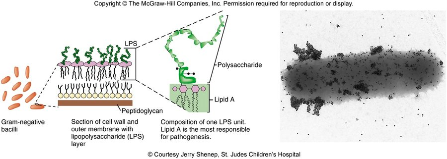
| Part of the lipopolysaccharide | What it is |
|---|---|
| Lipid A | The lipid region to which the polysaccharide is bound; the biologically active component |
| Core polysaccharide | Identical for large groups of bacteria, with some unique sugars |
| O antigen polysaccharide | Unique for each organism; repeating units of 3–4 different hexoses. The number of repeating units designates the antigen as rough, semi-rough or smooth |
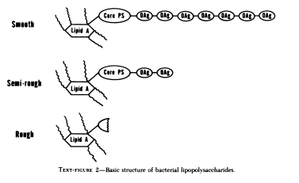
What endotoxin does
- Usually protective. In the gut and airways the first contact between epithelium and Gram-negative bacteria is the outer membrane and its lipopolysaccharide. These are antigens of the innate (nonspecific) immune system, signaling through a lipopolysaccharide binding complex and a Toll-like receptor. Under most circumstances this gives a moderated, protective inflammatory response, which keeps most mucosal infections mucosal and helps maintain our symbiosis with some Gram-negative bacilli.
- Chronic infection. Some bacteria have adapted by modifying their lipopolysaccharide to evade the immune system.
- Potentially damaging, through complement, coagulation and a variety of cells:
- Complement turns on by the classical pathway (antigen-antibody reaction) or the alternative pathway, and can result in hemorrhagic necrosis.
- Coagulation: tissue injury through coagulation changes, disseminated intravascular coagulation; fibrin deposited in the lungs, liver and spleen; it may trigger bradykinin, a vasodilator in shock.
- Platelets: altered activity causing aggregation (differs among species). Neutrophils: low levels may enhance phagocytosis, but higher levels may interfere with chemotaxis to the site of infection. Macrophages release pro-coagulants, collagenase, pyrogens, prostaglandins, colony stimulating factor, tumor necrosis factor, interleukin 1 and interleukin 6, nitric oxide and reactive oxygen species.
14.2 · Objective 1 — Sorting the Gram-negative bacilli
The Gram-negative bacilli are differentiated by three properties: oxygen requirement (aerobic, facultatively anaerobic, obligate anaerobic), the ability to ferment lactose, and the oxidase enzyme.
![Table 20.1, Gram-negative pathogens: Gram-negative rods branch into aerobes that do not ferment carbohydrates (Pseudomonas, Burkholderia, Bordetella, Francisella, Brucella, Alcaligenes), facultative anaerobes that ferment carbohydrates, and obligate anaerobes (Bacteroides). The facultative anaerobes split into lactose-fermenting (Escherichia, Klebsiella, Citrobacter, Enterobacter) and non-lactose-fermenting; the non-lactose fermenters split into oxidase-negative (Salmonella, Shigella, Proteus, Providencia, Morganella, Hafnia, Edwardsiella, Serratia, Yersinia) and oxidase-positive (Haemophilus, Pasteurella).](micro-exam-3-study-guide-images/l14-s012-gram-negative-scheme.png)
Aerobic Gram-negative nonenteric bacilli are a large, diverse group of non-spore-forming bacteria, from habitats as varied as the large intestine, animals, the respiratory tract, soil and water. Most are not medically important; some are true pathogens and some opportunists. All use endotoxin as one of their offensive weapons. (The third branch of the scheme, the obligate anaerobes, is Bacteroides.) The medically important aerobic genera fall in three pairs:
| Pair | Kind of pathogen |
|---|---|
| Pseudomonas and Burkholderia | Opportunistic pathogens |
| Brucella and Francisella | Zoonotic pathogens |
| Bordetella and Legionella | Mainly human pathogens |
14.3 · Objective 1 — Pseudomonas aeruginosa
| Heading | The pseudomonads, and Pseudomonas aeruginosa |
|---|---|
| Morphology | Small Gram-negative rods with a single polar flagellum |
| Habitat | Free living, primarily in soil, sea water and fresh water; also colonize plants and animals. Important decomposers and bioremediators (exoenzymes such as protease, amylase, pectinase and cellulase; oil-eating and pesticide-clearing strains); frequent contaminants in homes and clinical settings; food spoilage (dairy, meat, eggs). P. aeruginosa: soil and water, an intestinal resident in 10% of normal people, also on skin and in saliva |
| Biochemistry | Aerobic respiration; do not ferment carbohydrates (aerobic respiration, no fermentation). Produce oxidase and catalase. Produce pseudomycins (antifungal agents). Many make water-soluble pigments (blue-green, yellow-green, brown, red) |
| Identifying signs | Grapelike odor; greenish-blue pigment, pyocyanin |
| Hardiness | Resistant to soaps, dyes, quaternary ammonium disinfectants, drugs and drying; survives in nutrient-poor environments; a major agent of nosocomial infections |
| Why it contaminates equipment | Frequent contaminant of ventilators, intravenous solutions and anesthesia equipment because it produces biofilms |
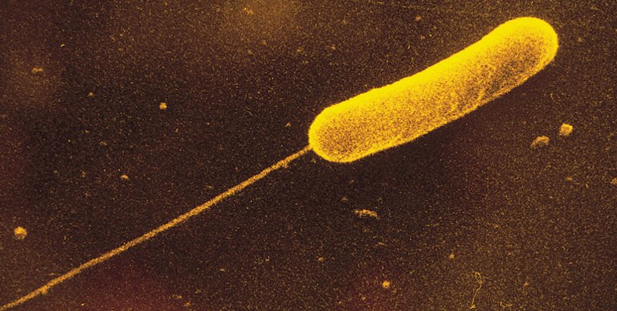
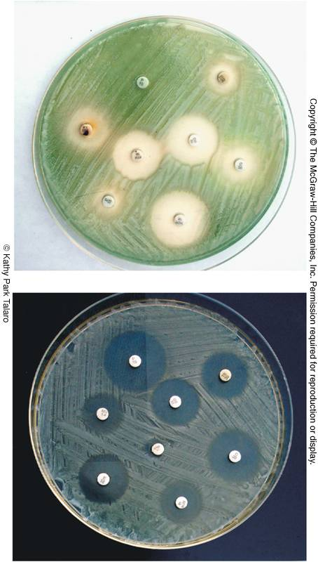
Virulence and resistance
- Exotoxin A inhibits protein synthesis.
- Slime layer: resistance to phagocytosis and biofilm formation. Cells in biofilms adhere by flagella and pili and form microcolonies; three polysaccharides stabilize the biofilm and impair bacterial clearance.
- Exoenzymes: exoenzyme S induces apoptosis of T cells; others degrade phospholipid.
- Multidrug resistant, through restricted outer membrane permeability, which limits drug entry, antibiotic-inactivating enzymes, efflux pumps, horizontal transfer of resistance genes and biofilm formation. The slide notes it is one of the top three critical pathogens the World Health Organization prioritized for research into new treatments (with Acinetobacter baumannii and Escherichia coli; see 14.21).
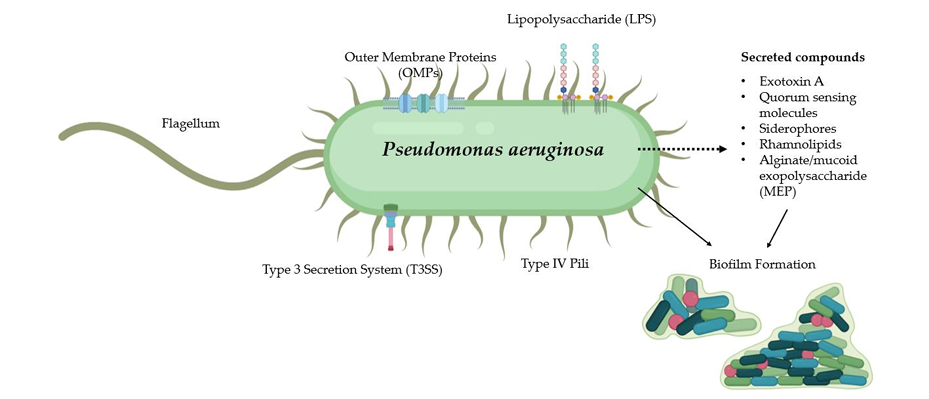
Disease
- A common cause of nosocomial infection in hosts with burns, neoplastic disease and cystic fibrosis (the slide stars cystic fibrosis with three asterisks). Complications include pneumonia, urinary tract infection, abscesses, otitis and corneal disease; septicemia leads to endocarditis, meningitis and bronchopneumonia.
- Typical infections in healthy people: skin rashes, urinary tract infection, otitis externa (swimmer’s ear), and corneal ulcers in contact lens wearers.
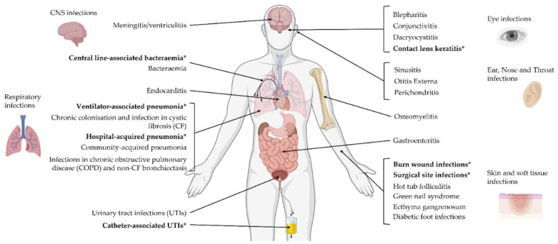
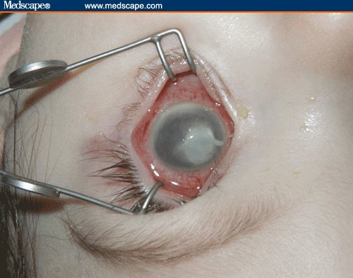
Treatment and prevention. The antibiotics listed are cephalosporins, aminoglycosides, carbenicillin, polymyxin, quinolones and monobactams. A vaccine is in development, particularly for cystic fibrosis patients: most candidates rely on antibodies against bacterial protein; one uses the PopB protein to stimulate T helper 17 cells, which release interleukin 17 and enhance antibacterial mucosal defenses; one in current testing uses the porin membrane protein OprH and has worked against at least two strains. But in cystic fibrosis, where the infection is often chronic, vaccination may induce increased pulmonary inflammation and tissue damage: it may worsen lung inflammation. Mucosal delivery by liposomes and nanoparticles is being investigated.
14.4 · Objective 1 — Burkholderia, Acinetobacter, Stenotrophomonas
The related Gram-negative aerobic rods are similar to the pseudomonads: wide habitats in soil, water and related environments; obligate aerobes that do not ferment sugars; opportunistic pathogens. (The slide also calls them motile and oxidase positive; see 14.21.)
| Organism | Where it lives and how it gets in | Disease | Notes |
|---|---|---|---|
| Burkholderia cepacia | Biodegrades many substances; a plant pathogen | Opportunist of the respiratory tract, urinary tract and skin | Rapidly mutates; multidrug resistant; a particular problem in cystic fibrosis, as a copathogen with Pseudomonas (an 80% fatality) |
| Burkholderia pseudomallei | Soil and water of tropical climates; acquired through a penetrating injury or inhalation | Melioidosis: wound infection with localized nodules, fever and muscle aches; bronchitis and pneumonia; septicemia; endotoxic shock; liver and brain abscesses | The body map adds parotitis, bone, joint, genitourinary and skeletal-muscle infection |
| Acinetobacter baumannii | Nosocomial and community acquired; survives months on fomites | Wounds, lungs, urinary tract, burns, blood; infections after traumatic (combat) wounds; the immunocompromised | Also listed as needing urgent research; multidrug resistant, so combination treatment (carbapenems, polymyxin B, ampicillin) |
| Stenotrophomonas maltophilia | Fresh water, soil, fecal flora of humans and domestic animals; forms biofilms; contaminates disinfectants, dialysis and respiratory equipment, water dispensers and catheters | Isolated from respiratory, soft tissue, blood, cerebrospinal fluid and eye specimens | Multiple drug resistance; combination therapy (cephalosporins, tetracyclines, fluoroquinolones, penicillins) |
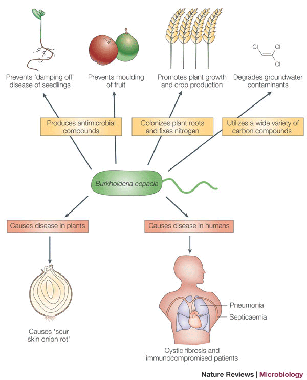
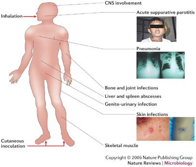
14.5 · Objective 1 — Brucella and brucellosis
| Heading | Brucella |
|---|---|
| Morphology | Tiny Gram-negative coccobacilli |
| Species | Brucella abortus (cattle) and Brucella suis (pigs) |
| Disease names | Brucellosis: Malta fever, undulant fever, Bang disease |
| Transmission | A zoonosis of animal handling and slaughtering: contact with the blood, urine or placentas of infected animals, or unpasteurized dairy products (raw dairy). Human-to-human transmission is rare |
| Pathogenesis | Enters through damaged skin or mucous membranes; phagocytes carry it to the blood, with lesions in the liver, spleen, bone marrow and kidneys |
| Manifestations | A severe febrile illness with a fluctuating fever over weeks to a year (undulant fever); chills, sweating, headache, muscle pain, weight loss |
| Laboratory test | Serological: an agglutination titer test |
| Treatment | A combination of tetracycline and rifampin or streptomycin |
| Prevention | An animal vaccine is available. A potential bioweapon |
14.6 · Objective 1 — Francisella tularensis and tularemia
| Heading | Francisella tularensis |
|---|---|
| Disease | Tularemia, rabbit fever: a zoonosis of mammals endemic to the northern hemisphere, particularly rabbits |
| Transmission | Contact with infected animals, water and dust, or bites by vectors. The infective dose is very small (10–50 organisms) |
| Course | Incubation of days to 3 weeks; headache, backache, fever, chills, malaise and weakness; ulcerative skin lesions and swollen lymph nodes; sore throat, intestinal involvement and respiratory infection. A 10% death rate in the systemic and pulmonic forms |
| Relapse | Intracellular persistence can lead to relapse |
| Treatment and prevention | Gentamicin or tetracycline; an attenuated vaccine. A potential bioterrorism agent |
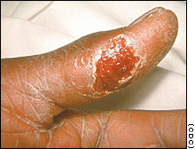
14.7 · Objective 1 — Bordetella pertussis and whooping cough
| Heading | Bordetella pertussis |
|---|---|
| Morphology | Minute, encapsulated coccobacillus |
| Disease | Pertussis, whooping cough: a communicable childhood acute respiratory syndrome, often with severe, life-threatening complications in babies; about half of cases are in children from birth to 4 years |
| Reservoir and transmission | Reservoir: apparently healthy carriers. Transmission by direct contact or inhalation of aerosols |
| Virulence | Receptors that recognize and bind ciliated respiratory epithelial cells; toxins that destroy and dislodge ciliated cells, destroy phagocyte activity, and cause hemolysis and leukolysis. Loss of the ciliary mechanism leads to a buildup of mucus and blockage of the airways |
| Stages | Catarrhal: nasal drainage, congestion, sneezing, occasional cough. Paroxysmal: recurrent persistent cough followed by a deep inhalation, the whoop. Complications come from compromised respiration |
| Treatment | Two weeks of erythromycin, azithromycin or trimethoprim-sulfamethoxazole (the slide uses the brand name Septra) |
| Prevention | DTaP (diphtheria, tetanus and acellular pertussis): an acellular vaccine containing toxoid and other antigens, a five-dose series between 2 months and 6 years; Boostrix for children and adolescents aged 10–18 |
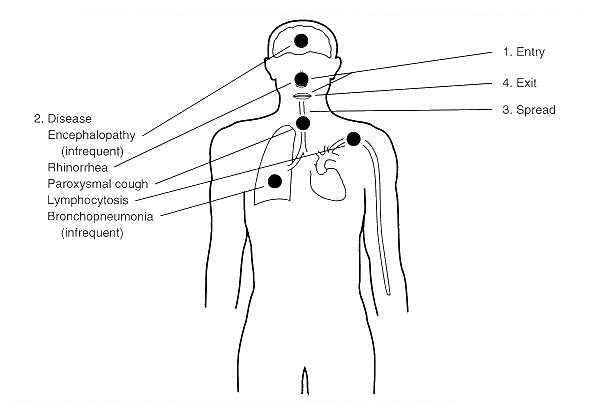
- Infants under 2 months are too young to be vaccinated (they cannot get the vaccine), so incidence is highest under 1 year old (in Florida in 2023, over half of reported cases were not up to date on vaccination).
- The age pattern in older children and adolescents reflects waning immunity from childhood vaccination and the need for booster doses.
- “Another possible connection”: pertactin-negative strains are now developing. Pertactin is the protein that helps the bacterium adhere to airway linings and a vaccine component, and these strains lack it.
14.8 · Objective 1 — Alcaligenes
An aerobe of the non-fermenting branch (14.2), not on the syllabus list. Lives primarily in soil and water and may become normal flora. Alcaligenes faecalis is the most common clinical species, isolated from feces, sputum and urine; it is occasionally associated with opportunistic pneumonia, septicemia and meningitis.
14.9 · Objective 1 — Legionella and legionellosis
| Heading | Legionella pneumophila |
|---|---|
| Morphology and stain | Weakly Gram negative; motile; rod shaped but pleomorphic, coccobacilli to filamentous |
| Culture | Cannot be easily cultured; grown on charcoal yeast extract agar |
| Habitat | Widely distributed in water: tap water, cooling towers, spas, ponds, air conditioning, supermarket vegetable sprayers. Lives in close association with amebas |
| Transmission | By aerosols. Outbreaks have come from a cooling tower and from the spray of a decorative fountain |
| Diseases | Legionellosis: Legionnaires disease (named for the 1976 epidemic of pneumonia among American Legion members at a convention in Philadelphia) and Pontiac fever |
| Who gets it | Males over 50; smokers; as a nosocomial disease, elderly patients with diabetes, cancer, transplants, chronic alcoholism or chronic lung disease |
| Manifestations | Fever, cough, diarrhea, abdominal pain, pneumonia |
| Treatment | Erythromycin with rifampin, azithromycin, quinolones |
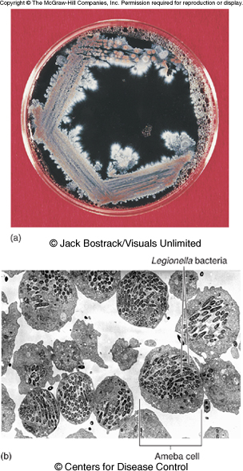
14.10 · Objective 1 — The Enterobacteriaceae: traits, media, antigens
The enterics are a large family of small, non-spore-forming Gram-negative rods. Many live in soil, water and decaying matter and are common occupants of the large bowel of animals, including humans. They are the most frequent cause of diarrheal disease, by enterotoxins or by invasive infection, and with Pseudomonas they account for almost half of nosocomial infections; they have been isolated from soap dishes, sinks, catheters and tracheal cannulas.
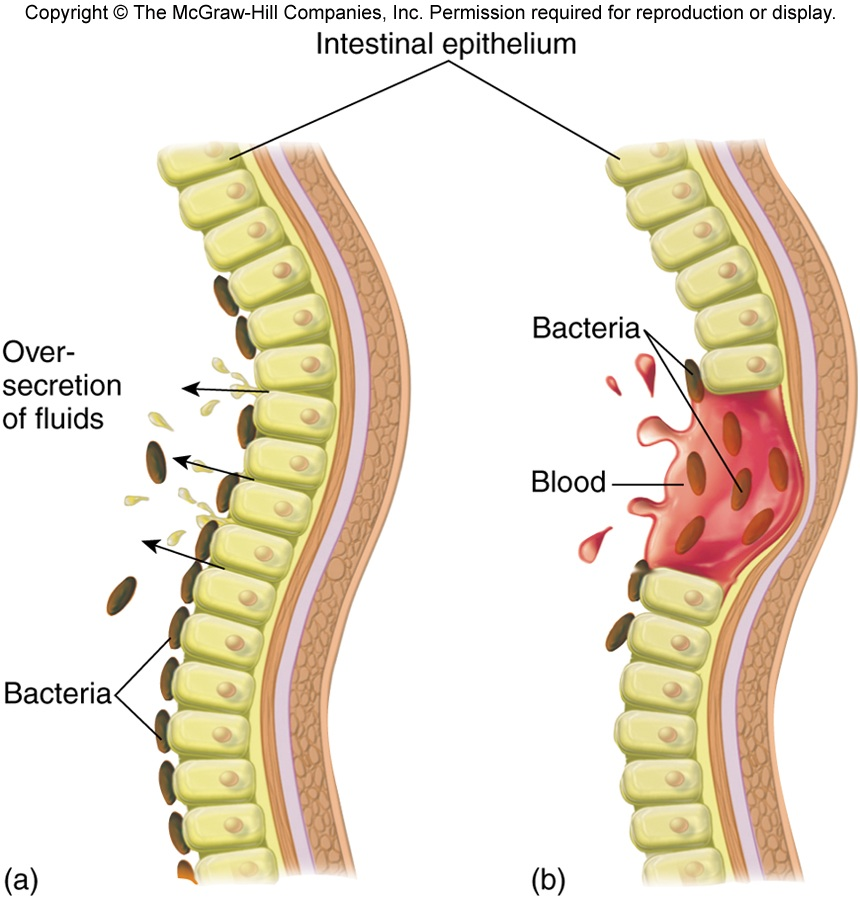
| Every enteric | Splits them |
|---|---|
| Facultative anaerobes, growing best in air. All ferment glucose, reduce nitrates to nitrites, are oxidase negative and catalase positive. All carry the O antigen | Lactose fermentation: coliforms ferment lactose, non-coliforms do not. Enrichment, selective and differential media screen samples for pathogens |
![Flow chart: enrichment, then plating on eosin methylene blue, MacConkey or Hektoen enteric agar, then triple sugar iron. Lactose and glucose positive organisms are sorted by motility, indole, hydrogen sulfide, Voges-Proskauer, citrate and lysine decarboxylase into Escherichia, Klebsiella, Enterobacter, Citrobacter, Erwinia, Kluyvera and Moellerella; lactose negative, glucose positive organisms by phenylalanine, hydrogen sulfide, citrate, motility, a galactosidase test, gelatinase and urease into Proteus, Providencia, Morganella, Serratia, Salmonella, Hafnia, Edwardsiella, Yersinia and Shigella.](micro-exam-3-study-guide-images/l14-s047-enteric-biochemistry.jpg)
| Isolation medium | Selective for | Differential for |
|---|---|---|
| Eosin methylene blue (EMB) agar | Gram-negative bacteria; the selective agents are the dyes eosin and methylene blue | Lactose fermenters |
| MacConkey’s agar | Gram-negative bacteria; the selective agents are crystal violet and bile salts | Lactose fermenters |
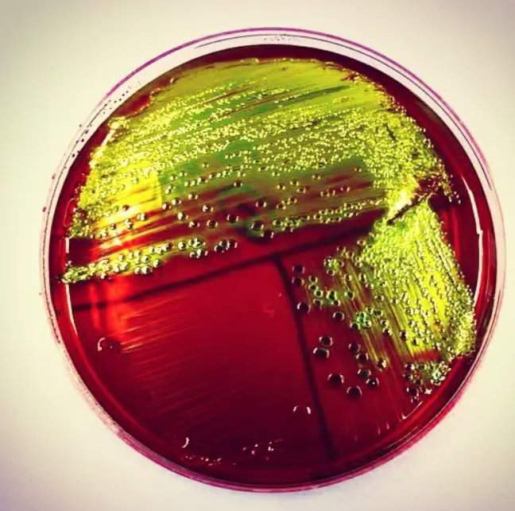
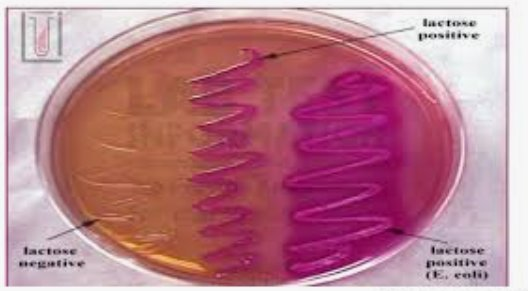
| In the normal flora: coliforms | In the normal flora: non-coliforms | True pathogens |
|---|---|---|
| Escherichia coli, Enterobacter, Klebsiella, Hafnia, Citrobacter, Serratia (slide 50; see 14.21) | Proteus, Providencia, Morganella, Edwardsiella | Enteric: Salmonella typhi, S. cholerae-suis, S. enteritidis; Shigella dysenteriae, S. flexneri, S. boydii, S. sonnei; Yersinia enterocolitica, Y. pseudotuberculosis. Nonenteric: Yersinia pestis |
The true pathogens are not normal flora: Salmonella typhi and the other salmonellae, Shigella and the enteric yersinias, and the nonenteric Yersinia pestis.
Antigens and virulence factors
Complex surface antigens contribute to pathogenicity and trigger the immune response:
- H — the flagellar antigen.
- K — the capsule and/or fimbrial antigen (Vi in Salmonella).
- O — the somatic or cell wall antigen, which all have.
Other virulence factors: endotoxin, exotoxins, capsules, fimbriae, attachment receptors for host cells, and the ability to transmit virulence genes (toxins, capsules, hemolysins, fimbriae).
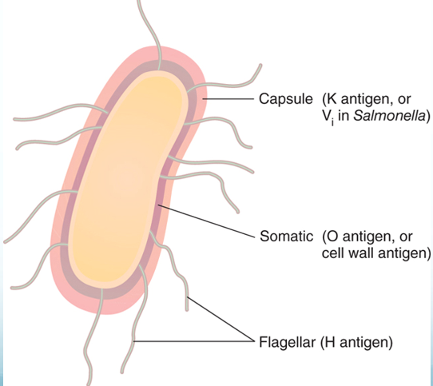
14.11 · Objective 1 — Escherichia coli and its four pathotypes
Escherichia coli is the common aerobic, non-fastidious bacterium of the gut, but not the most prevalent: the anaerobic Bacteroides and Bifidobacterium are. Of about 150 strains, some have developed virulence through plasmid transfer; others are opportunists.
“Hint, hint, hint, hint” [1:04:18]: the four pathotypes below, each with its mechanism, disease, source, test and prevention.
The diarrheal strains are acquired from fecally contaminated food and water (the entry-and-exit diagram of slide 56). Each of the four pathotypes, row by row:
| Pathotype | How it causes disease | Disease | Source and diagnosis | Treatment and prevention |
|---|---|---|---|---|
| Enterotoxigenic Escherichia coli (ETEC) | Enterotoxigenic Escherichia coli: heat-labile and heat-stable toxins promote secretion of fluid and electrolytes by the intestinal epithelium; fimbriae adhere it to the small intestine | Traveler’s diarrhea (most cases): diarrhea, cramping, low-grade to no fever | Fecally contaminated food and water | Fluid and electrolyte therapy; kaolin or Lomotil slow gut motility; bismuth salicylate counteracts the enterotoxin and is antimicrobial; fluoroquinolones |
| Enteroinvasive Escherichia coli (EIEC) | Enteroinvasive Escherichia coli: adhesin proteins bind the intestinal wall; no toxins, mechanical cell damage (it damages the wall mechanically, without toxins); an inflammatory disease of the large intestine, similar to shigellosis | Profuse bloody diarrhea and high fever; the very young and very old most susceptible; incubation within 24 hours | Fecally contaminated food and water; diagnosed by immunochemical tests, tissue culture and gene probes | Fluid and electrolyte therapy; trimethoprim-sulfamethoxazole |
| Enteropathogenic Escherichia coli (EPEC) | Enteropathogenic Escherichia coli: adheres to the intestinal lining and destroys the microvilli; inhibits uptake of vitamin B1 (thiamin) | The leading cause of the wasting form of infantile diarrhea; the greatest single cause of infant mortality worldwide | Fecally contaminated food and water | Fluid and electrolyte therapy; mecillinam, trimethoprim-sulfamethoxazole. Prevention: breast feeding |
| Enterohemorrhagic Escherichia coli (EHEC), O157:H7 | Enterohemorrhagic Escherichia coli, also called Shiga toxin-producing Escherichia coli: a cell wall receptor fuses with the host cell membrane, a portal for toxins including Shiga toxin (from Shigella), which binds ribosomes and disrupts protein synthesis; endothelial cells detach, platelets meet the subendothelium and coagulation starts; stress pathways release high tumor necrosis factor and interleukin 8 | Diarrhea, hemorrhagic colitis and hemolytic uremic syndrome (in 10% of cases: toxins cause apoptosis of renal tubular epithelial cells, and coagulation); gastroenteritis, dysentery, fever, acute abdominal pain | Reservoir: the intestines of cattle; contaminated beef, water and vegetables; a small infective dose (about 100 cells). Diagnosed on Rainbow agar, where O157:H7 colonies are black | Dialysis; corticosteroids “if diarrhea is not involved” (the slide’s wording); transfusions and plasmapheresis. Antibiotic therapy may exacerbate hemolytic uremic syndrome (it may worsen it) |
Enterohemorrhagic outbreaks have come from a fast-food beef patty and slivered onions (2024), romaine lettuce, raw milk and cheese, and chicken wraps (2026). Rainbow agar carries chromogenic substrates for beta-galactosidase (blue/black) and beta-glucuronidase (red); O157:H7 is glucuronidase negative, so its colonies come up black. Enterohemorrhagic infection is managed with dialysis, transfusions and plasmapheresis, and antibiotic therapy is approached with caution because it may worsen hemolytic uremic syndrome.
The name O157:H7 reads the antigens of 14.10: O (somatic) antigen type 157 and H (flagellar) antigen type 7.
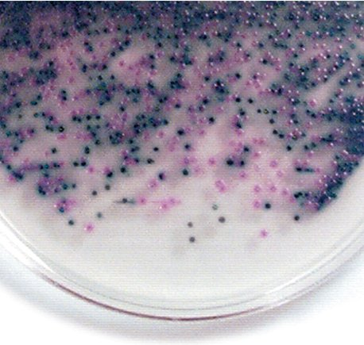
Escherichia coli outside the gut. It causes most urinary tract infections, more frequently in women and in catheterized patients; also neonatal meningitis, pneumonia, septicemia, wound infections and complications of invasive procedures. The coliform count is the indicator of fecal contamination in water.
14.12 · Objective 1 — The other coliforms
Clinically important mainly as opportunists and for antibiotic resistance.
| Organism | Distinguishing feature | Infections |
|---|---|---|
| Klebsiella pneumoniae | A normal inhabitant of the respiratory tract; a large capsule | Nosocomial pneumonia, meningitis, bacteremia, wound infections, urinary tract infections |
| Enterobacter species | Serious if in the bloodstream | Urinary tract and surgical wound infections; spinal fluid, sputum, blood |
| Citrobacter species | — | Opportunistic urinary tract infections and bacteremia |
| Serratia marcescens | Red pigment, prodigiosin | Pneumonia in chronic alcoholics; burn and wound infections; urinary tract infections (often asymptomatic, after surgery or instrumentation); septicemia and meningitis, particularly in the immunocompromised |
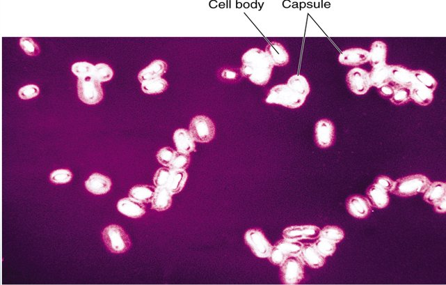
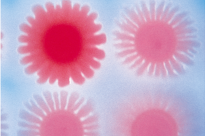
14.13 · Objective 1 — Proteus and its relatives
The noncoliform, lactose-negative enterics fall into opportunists (Proteus, Morganella, Providencia) and true pathogens with true virulence factors, not normal flora (Salmonella, Shigella). The opportunists are ordinarily harmless saprobes in soil, manure, sewage and polluted water and commensals of humans and animals, often resistant to antibiotics.
| Organism | Features | Infections |
|---|---|---|
| Proteus | Highly motile, with peritrichous flagella; diagnostic wavelike, swarming growth (Proteus vulgaris); most respond to ampicillin and cephalosporins | Urinary tract and wound infections, pneumonia, septicemia, infant diarrhea; nosocomial infections; related to bladder and kidney stones (an association, not a proven cause); associated with Crohn’s disease |
| Providencia species | Multiple animal reservoirs; almost always resistant to tetracyclines, older penicillins and cephalosporins | Nosocomial infections; urinary tract infections with catheters; gastroenteritis |
| Morganella morganii | Multidrug resistant, though most strains are naturally susceptible to several drug classes | Nosocomial; similar to Proteus: urinary tract and wound infections |
Proteus vulgaris is diagnosed on the plate by its wavelike, swarming growth: highly motile on its peritrichous flagella, it spreads across the agar in waves.
14.14 · Objective 1 — Salmonella: typhoid and the salmonelloses
Salmonella typhi causes typhoid fever and Salmonella paratyphi paratyphoid fever, the most serious diseases of the genus.
| Heading | Salmonella typhi (S. enterica serotype typhi) and S. paratyphi |
|---|---|
| Significance | The most serious pathogens of the genus: typhoid fever and paratyphoid fever |
| Host | Humans are the exclusive hosts |
| Traits | Flagellated; survive outside the host; resistant to chemicals: bile and dyes; do not lose virulence on cultivation |
| Transmission | Ingestion of fecally contaminated food or water; occasionally close personal contact. “Boil it, cook it, peel it, or forget it.” |
| Carriers | Asymptomatic carriers; some chronic carriers shed bacilli from the gallbladder |
| Pathogenesis | Bacilli adhere to the small intestine and cause an invasive diarrhea that leads to septicemia; carried to the liver and spleen; the intestinal wall can ulcerate and perforate |
| Manifestations | Sustained fever of 103–104 degrees; a rash of rose-colored spots; weakness, stomach pains, loss of appetite |
| Treatment | Chronic infections: chloramphenicol or trimethoprim-sulfamethoxazole |
| Prevention | Two vaccines for temporary protection: oral (4 doses) and injected (1 dose) |
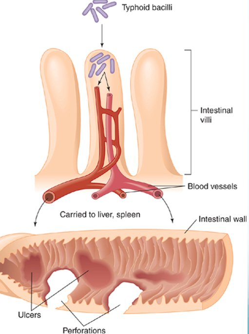
The animal salmonelloses. Salmonelloses other than typhoid fever are called enteric fevers, Salmonella food poisoning and gastroenteritis. They are usually less severe than typhoid fever but more prevalent (some 40,000–50,000 cases a year). Salmonella is normal intestinal flora in animals: S. cholerae-suis is a zoonosis of swine; S. enteritidis covers about 1,700 serotypes, all zoonotic in origin, though humans can become carriers. They are acquired by ingestion, from cattle, poultry and eggs, rodents, reptiles (pet turtles, bearded dragons), animal and dairy products, backyard flocks, and fomites contaminated with animal intestinal flora; food-borne outbreaks have come from cucumbers and charcuterie meats. Enteric fevers bring fever and septicemia; gastroenteritis brings vomiting, diarrhea and fluid loss. Treatment: chloramphenicol and trimethoprim-sulfamethoxazole.
14.15 · Objective 1 — Shigella and bacillary dysentery
| Heading | Shigella |
|---|---|
| Species | S. dysenteriae, S. sonnei, S. flexneri, S. boydii |
| Disease | Shigellosis, an incapacitating dysentery: abdominal cramps and watery stool with blood; a few cases also develop hemolytic uremic syndrome. Half of cases are in children under 5 |
| Transmission | Ingestion of fecally contaminated food |
| Pathogenesis | Invades the villi of the large intestine (it invades the large-bowel villi); does not perforate the intestine or invade the blood; enters Peyer’s patches and sets off inflammation |
| Toxins | Endotoxin initiates the fever; enterotoxin damages the mucosa and villi, causing bleeding and mucus secretion |
| Treatment | Fluid replacement; ciprofloxacin and trimethoprim-sulfamethoxazole |
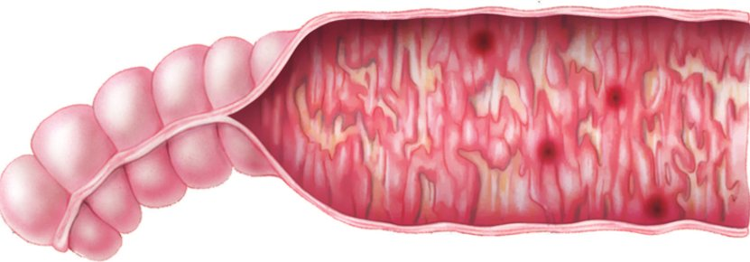
14.16 · Objective 1 — The enteric yersinias
- Yersinia enterocolitica: from domestic and wild animals, fish, fruits, vegetables and water. The bacteria enter the small intestinal mucosa; some enter the lymphatics and survive in phagocytes. Inflammation of the ileum can mimic appendicitis.
- Yersinia pseudotuberculosis: an infection similar to Y. enterocolitica, with more lymph node inflammation.
- Treatment is mostly supportive (aminoglycosides and trimethoprim-sulfamethoxazole).
14.17 · Objective 1 — Yersinia pestis and plague
| Heading | Yersinia pestis (nonenteric) |
|---|---|
| Morphology | Tiny Gram-negative rod with unusual bipolar staining and capsules |
| Virulence | Capsular and envelope proteins protect against phagocytosis and foster intracellular growth; coagulase, endotoxin, murine toxin |
| Reservoir | About 200 species of mammals, rodents, without causing them disease. In the United States, cases are west of the Mississippi (a handful a year) |
| How humans get it | Contact with wild animals (sylvatic plague), domestic or semidomestic animals (urban plague), or infected humans (rare) |
| The flea | The bacteria replicate in the flea’s gut; coagulase causes blood clotting that blocks the esophagus; the flea becomes ravenous and tries to bite more hosts; regurgitated material transmits the bacterium |
| Infective dose | Very small: 3–50 bacilli |
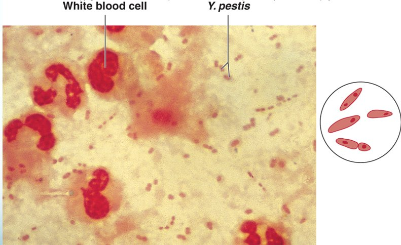
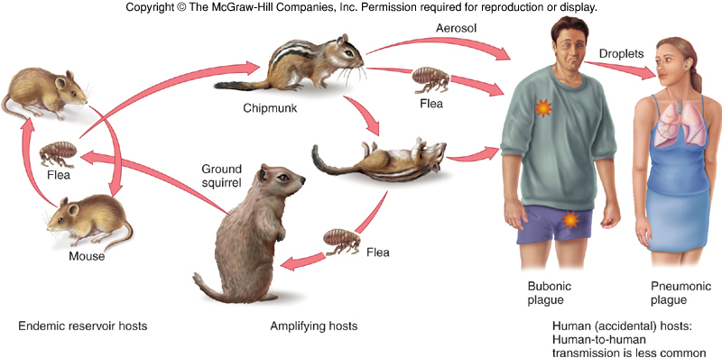
| Form of plague | What happens |
|---|---|
| Bubonic | The bacillus multiplies in the flea bite, enters the lymph, and causes necrosis and swelling of a lymph node: the bubo, a swollen, necrotic lymph node in the groin or axilla (the classic sign) |
| Septicemic | Progression to massive bacterial growth; virulence factors cause intravascular coagulation, subcutaneous hemorrhage and purpura that degenerates into necrosis and gangrene (the purpura turns to gangrene): the black plague |
| Pneumonic | Infection localized to the lungs, highly contagious by aerosol, fatal without treatment |
Diagnosis, treatment, prevention. It must be diagnosed quickly: death can come within 2 days of symptoms. Diagnosis rests on history, symptoms and laboratory findings from aspiration of the buboes. Treatment: streptomycin, tetracycline or chloramphenicol. A killed or attenuated vaccine is available for military personnel, veterinarians and laboratory workers. Prevention by quarantine and control of the rodent population in human habitats. A park warning sign (slide 86) spells out the same advice: chipmunks, ground squirrels and other wild rodents may be infected; plague reaches humans by the bite of an infected flea or by handling an infected animal; protect pets from fleas, avoid animal burrows, and never touch sick or dead animals.
14.18 · Objective 1 — Pasteurella multocida
Pasteurella multocida is, with Haemophilus, one of the oxidase-positive nonenteric pathogens: a zoonotic genus, normal flora in animals. Its opportunistic infections are mostly in veterinarians, but they can come from domestic animals: Pasteurella reaches people through animal bites or scratches, which cause a local abscess that can spread to joints, bones and lymph nodes. The immunocompromised are at risk of septicemia and complications of the central nervous system and heart. Treatment: penicillin and tetracycline.
14.19 · Objective 1 — Haemophilus
Haemophilus means blood loving: tiny Gram-negative pleomorphic rods, fastidious, sensitive to drying, temperature extremes and disinfectants. None can grow on blood agar without special techniques: chocolate agar (cooked blood) is used, because they require hemin, nicotinamide adenine dinucleotide (NAD) or its phosphate (NADP): they need hemin from the cooked blood. Some species are normal colonists of the upper respiratory tract or vagina; others are virulent.
| Species | Disease | Spread and who | Treatment and prevention |
|---|---|---|---|
| H. influenzae | Misnamed as the cause of the flu. Acute bacterial meningitis (fever, vomiting, stiff neck, neurological impairment), epiglottitis, otitis media, sinusitis, pneumonia, bronchitis | — | Chloramphenicol and ampicillin; vaccine: the subunit vaccine Hib (Haemophilus influenzae type b) |
| H. aegyptius | Conjunctivitis, pink eye | Primarily children; spread by contaminated fingers and insects | Antibiotic eyedrops |
| H. ducreyi | Chancroid, a sexually transmitted disease | Primarily in the tropics; primarily males | Erythromycin |
| H. parainfluenzae and H. aphrophilus | Infective endocarditis in congenital and rheumatic heart disease | Normal oral and nasopharyngeal flora; from routine dental procedures | Ciprofloxacin |
Invasive H. influenzae disease in the United States (1994–2020) is now mostly nontypeable strains; type b, the vaccine’s target, has become the rarest (slide 99).
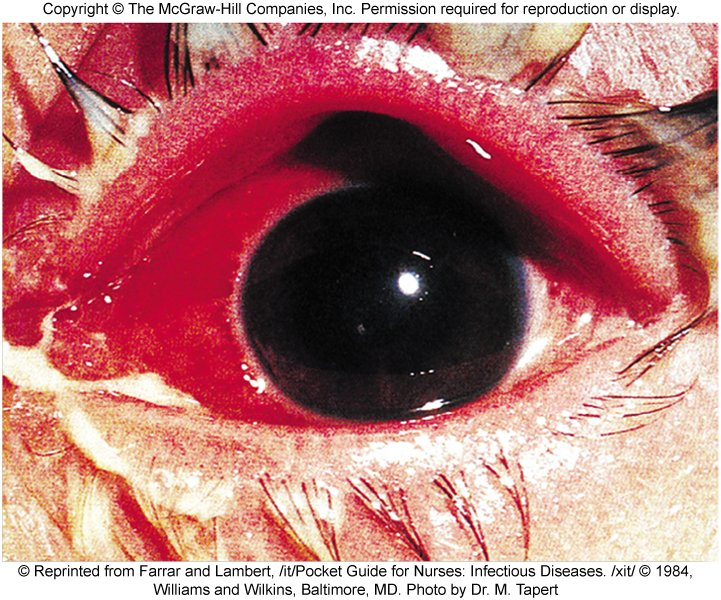
14.20 · Objective 2 — Modes of transmission
| Organism | How humans acquire it |
|---|---|
| Pseudomonas aeruginosa | Soil and water; nosocomial, from contaminated ventilators, intravenous solutions and anesthesia equipment (biofilms); contact lenses (corneal ulcers), water (swimmer’s ear) |
| Burkholderia pseudomallei | Tropical soil and water, by penetrating injury or inhalation |
| Acinetobacter baumannii | Nosocomial and community; months on fomites; traumatic and combat wounds |
| Stenotrophomonas maltophilia | Biofilms on disinfectants, dialysis and respiratory equipment, water dispensers and catheters |
| Brucella | Zoonosis: animal handling and slaughtering (blood, urine, placentas) or unpasteurized dairy; through damaged skin or mucous membranes; human-to-human rare |
| Francisella tularensis | Infected animals (rabbits), water and dust, or vector bites |
| Bordetella pertussis | From apparently healthy carriers by direct contact or inhaled aerosols |
| Legionella | Aerosols from water systems (cooling towers, spas, fountains, air conditioning, vegetable sprayers) |
| Enterics in hospitals | Soap dishes, sinks, catheters, tracheal cannulas |
| Escherichia coli diarrheal strains | Fecally contaminated food and water; O157:H7 from cattle via beef, water and vegetables |
| Escherichia coli urinary tract infection | Women; catheterized patients |
| Providencia | Multiple animal reservoirs; catheters |
| Salmonella typhi | Humans only: fecally contaminated food or water, occasionally close contact; chronic gallbladder carriers |
| Animal salmonelloses | Ingestion from cattle, poultry and eggs, rodents, reptiles, dairy, backyard flocks, contaminated fomites |
| Shigella | Ingestion of fecally contaminated food |
| Yersinia enterocolitica | Animals, fish, fruits, vegetables, water |
| Yersinia pestis | Flea bite (regurgitation by a blocked flea); handling infected animals; aerosol in pneumonic plague; sylvatic (wild animals) or urban (domestic animals) |
| Pasteurella multocida | Animal bites or scratches |
| Haemophilus | H. aegyptius: fingers and insects. H. ducreyi: sexual. H. parainfluenzae and H. aphrophilus: own oral flora, during dental procedures |
14.21 · Where the slides disagree, and where current practice differs
The slides are what is taught and tested; where they disagree with each other, the point is not keyed in the quizzes. Notes:
- Serratia and Hafnia: coliform or not? Slide 50 lists both among the coliforms (lactose fermenters), and slide 68 calls Serratia a coliform; Table 20.1 (slide 12) and the biochemical tree (slide 47) put both on the non-lactose-fermenting branch. (Serratia is in fact a slow, late lactose fermenter.) In the recording she calls Serratia “also a coliform” [1:23:06], as slides 50 and 68 do, but the scheme of slide 12 still disagrees, so no question asks their lactose status.
- Which Haemophilus causes childhood meningitis? Slide 97 names H. parainfluenzae and H. ducreyi as the virulent species “responsible for childhood meningitis, and chancroid”; slide 98 gives meningitis to H. influenzae, and slide 100 calls H. parainfluenzae normal oral flora that causes endocarditis. Go by slides 98 and 100. Reading slide 97 aloud, she named no species: some species are normal flora, “and then other species are responsible for childhood meningitis and chancroid” [2:00:50], and she then gave meningitis to H. influenzae [2:01:23].
- “Motile, oxidase positive” is given to Burkholderia, Acinetobacter and Stenotrophomonas together (slide 21). In fact Acinetobacter is nonmotile and oxidase negative, and Lecture 9 taught Acinetobacter baumannii among the Gram-negative cocci (it is a coccobacillus). Not keyed; their shared traits are keyed as obligate aerobes that do not ferment sugars.
- The World Health Organization list (slide 17). The 2017 list put carbapenem-resistant Pseudomonas aeruginosa among the critical pathogens with Acinetobacter baumannii and the resistant Enterobacteriaceae; the 2024 update moved it to the high-priority group. Not keyed.
- Boostrix (slide 31) is given for ages 10–18 on the slide; it is licensed from age 10 through adulthood, including pregnancy. Not keyed.
- Drug lists. Several treatment lines reflect older practice (chloramphenicol for typhoid and for H. influenzae meningitis, erythromycin with rifampin for Legionella, streptomycin for plague); current regimens differ. Doses on slide 56 are not reproduced. Which antibiotic treats what is not asked in the quizzes; the non-drug methods (fluids and electrolytes, dialysis and plasmapheresis, vaccines, breast feeding, quarantine, combination therapy for multidrug resistance) are.
- Spellings. The deck’s “Acinetobacter baumanii” is Acinetobacter baumannii; “Salmonella typhhi” Salmonella typhi; “Mecillianam” mecillinam; “sulfatrimethoprim” and “Sulfamethoprim” are trimethoprim-sulfamethoxazole.
Source: Gram Negative Bacilli of Medical Importance (Lecture 14 Dr. Webster Gram Negative Bacilli of Medical Importance.pptx), Slides 1–101, and the PAJ 5200 syllabus instructional objectives.
15 · Fungi of Medical Importance
Dr. Fair · Lecture 15 · 30 October 2026
Instructional Objectives
- Compare and contrast the morphology, medium, laboratory tests, biochemical reactions, diseases, clinical manifestations, methods of treatment, and prevention of fungi of medical importance.
- Describe the modes of transmission by which humans acquire fungi of medical importance.
About 53 minutes with Dr. Fair in two parts (Jaxon’s recording): part 1, 36 minutes, from the end of slide 9 to the break; part 2, 17 minutes, from slide 51 to the end. Slides 1–9 were not recorded (roughly the first 14 minutes: true and opportunistic pathogens and the thermal dimorphism figure), so those topics keep their slide-count weight. One transcript only: Notability made no transcript of this lecture, so quotes below are from a single machine transcription (names it misheard are written correctly here). Every claim was checked against the deck; where the two differ, the slide is what this guide teaches.
She signposts little, so the quizzes are weighted by time spent, stories taken out (about 12 minutes: the bird quiz, the family beagle, Digger the dermatophyte, the caduceus and barber pole, football, mold-test plates): epidemiology, portals of entry and the levels of invasion about 4½ minutes, Candida 3½, the dermatophytes 3, Coccidioides 2½, control and amphotericin B 2½, Sporothrix 2½, mucormycosis and the other opportunists 2½, diagnosis 2, Blastomyces 2, the priority list 2, Histoplasma, Aspergillus and the allergies and toxins about 2 each, Cryptococcus, Pneumocystis and Paracoccidioides 1½ each, the superficial mycoses 1.
| What was said | What it means for you |
|---|---|
| “Once again, amphotericin B is the drug of choice. That’s a great test question. That’ll be a good one.” [part 1, 23:33] | The one plain signpost of the lecture. She asked the room for the drug for every true pathogen and the answer was always amphotericin B (15.6 and the table in 15.7: the most common option for blastomycosis and coccidioidomycosis, with azoles for histoplasmosis, with ketoconazole and sulfa drugs for paracoccidioidomycosis). Every quiz set carries an amphotericin B treatment question. |
| “The key for these pathogens is gonna be the characteristic of thermal dimorphism. I think I highlighted it every time it shows up.” [part 1, 4:05] | 15.2: mold at 30 °C, yeast at 37 °C, and which pathogens show it. |
| “Don’t panic about what the colonies look like. We’re not studying mycology. This is sort of a general overview, so zoom out.” [part 1, 17:00] | Know that the two Histoplasma colonies show thermal dimorphism (15.2); no question asks what a colony looks like. |
| “One important reagent is potassium hydroxide.” [part 1, 6:52] | 15.5: dilute potassium hydroxide lyses human cells and leaves the thick-walled fungal cells. |
| “It is possible to develop an immunity against [the true pathogens] because they do stimulate that strong of an immune response”; the opportunists bring repeat episodes. [part 1, 4:18; 14:44] | She backs slide 24 over slide 15 (15.23). Still not asked as a count. |
| “For animals, the treatment is really interesting, where you use potassium iodide… For humans… amphotericin B is the drug of choice.” [part 1, 28:28] | Slide 39’s heat packs and potassium iodide read as the animal treatment (15.12, 15.23). |
| “The main fungus is Trichophyton. However, there are about almost 40 different fungal genera that can be associated with these ringworm infections.” [part 1, 29:36] | The slide says 39 species in three genera (Trichophyton, Microsporum, Epidermophyton); “genera” was a slip for species. Learn the slide. |
Nothing she said removes a topic from the exam, and she corrected no slide outright. She repeated slide 20’s routes for amphotericin B (“usually administered orally, but it can also be by injection or by IV”, 15.23), named only amphotericin B for aspergillosis (nystatin was not mentioned), called mucormycosis in India “black mold”, and left Stachybotrys unnamed.
15.1 · Objective 1 — True and opportunistic fungal pathogens
Molds and yeasts are widely distributed in air, dust, fomites and the normal flora of humans, plants and animals. Humans are relatively resistant to fungal infections as long as the immune system is competent; immunocompromised status is the serious consideration throughout this lecture. Fungi are relatively nonpathogenic: of about 100,000 fungal species only about 300 (0.3%) have been linked to disease in humans and animals. But fungi are the most common plant pathogens (potato blights, infected grape crops and fruit trees), which can cause huge socio-economic losses such as the potato famines in Ireland and Eastern Europe. Human mycoses (“myco” = fungi) are caused by true fungal pathogens and by opportunistic pathogens.
| Kind of pathogen | Definition | Key adaptation | Levels of disease | Immunity afterwards |
|---|---|---|---|---|
| True (primary) fungal pathogen | Can invade and grow in a healthy host | Switching from hyphal cells to yeast cells (multicellular to unicellular) with temperature: thermal dimorphism (15.2) | May cause systemic, subcutaneous, cutaneous and superficial mycoses | Long-term immunity can develop against a few true fungal pathogens |
| Opportunistic fungal pathogen | Has little or no virulence of its own; the host defenses must be impaired (human immunodeficiency virus infection, cancer, diabetes, chronic obstructive pulmonary disease, autoimmune disorder, nosocomial infection) | Few, if any, virulence factors; infection usually starts in an immunocompromised host. Consider predisposing factors: primary illness, corticosteroids, diabetes, cancer | From superficial colonization of external tissues to potentially fatal systemic disease of one or more organ systems | Reinfection is highly likely (think of recurring vaginal yeast infection or foot fungus) |
True (primary) fungal pathogen. Its defining ability is invading and growing in a healthy host; an opportunist, by contrast, has little or no virulence of its own and needs impaired host defenses.
Opportunistic mycosis. A fungus with few, if any, virulence factors that infects a host weakened by corticosteroids is an opportunistic mycosis: these fungi usually start infection in immunocompromised hosts.
An emerging medical concern. Mycoses account for about 10% of all nosocomial infections, and the proportion is rising. Dermatophytes (residents of human and animal skin) may be undergoing a gradual transformation to become true pathogens.
15.2 · Objective 1 — Thermal dimorphism
The most striking adaptation of a true pathogen to survival and growth in the human host is the ability to switch from hyphal cells to yeast cells, from multicellular to unicellular forms, with the corresponding change in temperature. Thermal dimorphism: the fungus grows as a mold (multicellular) at 30 °C and as a yeast (unicellular) at 37 °C, which is human body temperature. ★ Dr. Fair: “the key for these pathogens” (the recording box at the top of Lecture 15).
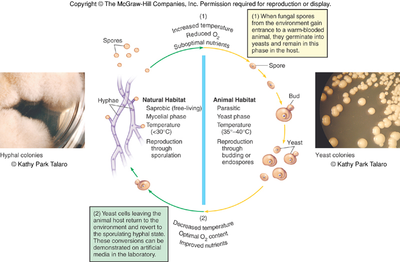
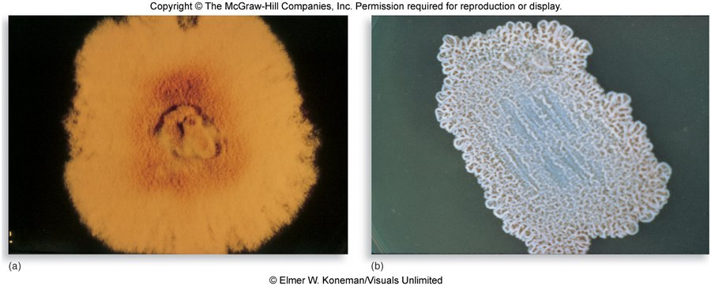
Two colonies, one fungus. One fungus forming a fuzzy, mold-like colony below 35 C and a yeast-like colony at 37 C, human body temperature, demonstrates thermal dimorphism.
15.3 · Objective 1 — The fungal priority pathogens list
The World Health Organization announced its first-ever fungal priority pathogens list in October 2022, to complement its bacterial priority pathogens list of 2017. Worldwide, drug-resistant bacteria directly cause over 1 million deaths a year and contribute to another 5 million; drug-resistant fungi are rapidly becoming a concern. With closer attention to nosocomial and secondary infections, invasive fungal diseases have been found to be increasing, especially among immunocompromised populations. The catch: fungal infections get little attention compared with bacterial or viral infections, and so less money for research and development (detection, diagnosis, treatment, new drugs).
| Priority | Fungi on the list |
|---|---|
| Critical | Cryptococcus neoformans (“the number one critical fungal pathogen”, slide 56), Aspergillus fumigatus (number three, slide 60), Candida albicans, Candida auris |
| High | Other Candida species, eumycetoma causative agents, Fusarium species, Histoplasma species, Mucorales (mucormycosis opportunists) |
| Medium | Coccidioides, Cryptococcus gattii, Pneumocystis jirovecii, Paracoccidioides species |
One tier above Coccidioides. Coccidioides is in the medium priority group; Histoplasma species are in the high priority group, one tier above.
15.4 · Objective 1 — Epidemiology, pathogenesis and host defense
- Most fungal pathogens do not require a host to complete their life cycles, and these infections are generally not communicable to other persons.
- The exceptions: dermatophytes (literally “skin plants”) and Candida species naturally inhabit the human body and are transmissible from person to person, or by fomites such as shared exercise equipment.
- True fungal pathogens are distributed in predictable geographical patterns, coinciding with climate and soil requirements (the map in 15.7).
- Dermatophytoses are the most prevalent fungal diseases, and many cases go undiagnosed or are misdiagnosed (for example as skin-related allergies or autoimmune disorders).
| Type of mycosis | Portal of entry (slide 14) |
|---|---|
| Primary (systemic) mycoses | Respiratory: spores inhaled from the air |
| Subcutaneous | Inoculated into skin or nails: trauma |
| Cutaneous and superficial | Contamination of the skin or hair surface |
Virulence factors: thermal dimorphism, toxin-like substances, capsules and adhesion factors, hydrolytic enzymes, inflammatory stimulants.
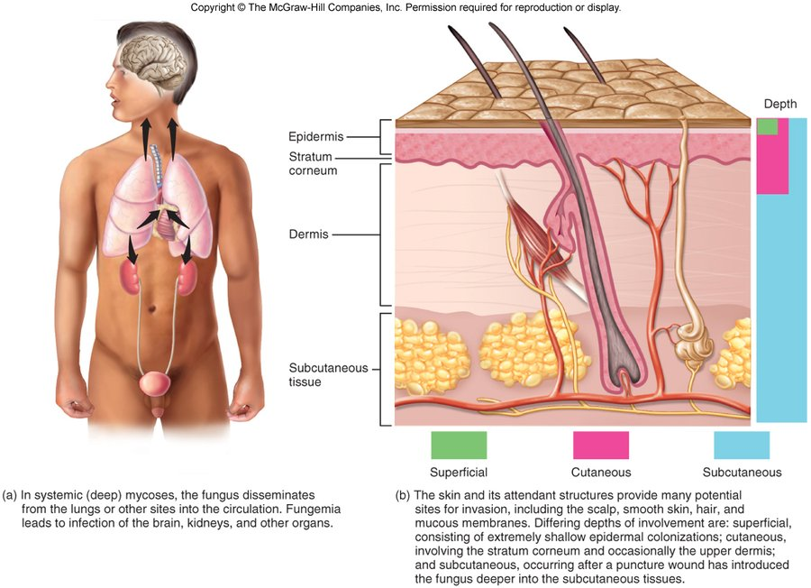
Host defense
The main antifungal defenses are the integrity of the skin, mucous membranes and intact respiratory cilia. The most important defenses are cell-mediated immunity (T cells and their cytokines), phagocytosis and inflammation. Long-term immunity can develop against only a few true fungal pathogens, not the opportunists: reinfection is highly likely with opportunistic fungi (the repeated “episodes” of vaginal yeast infection or foot fungus).
15.5 · Objective 1 — Diagnosis
Diagnosis and identification need microscopic examination of stained specimens, culture on selective and enriched media, and specific biochemical or serological tests. Sabouraud dextrose agar is commonly used, with chemicals added to inhibit bacterial growth; its fairly low pH inhibits most bacteria, but not fungi.
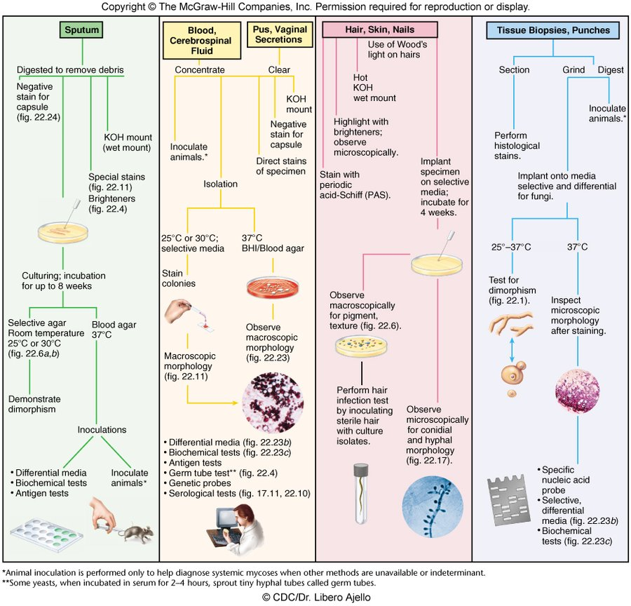
Hair, skin and nail specimens. The identification pathway applies examination under Wood's light directly to the hairs, alongside a hot potassium hydroxide wet mount, brighteners and periodic acid-Schiff staining.
Germ tube test. Some yeasts, when incubated in serum for 2 to 4 hours, sprout tiny hyphal tubes called germ tubes; the germ tube test sits among the identification tests for isolates.
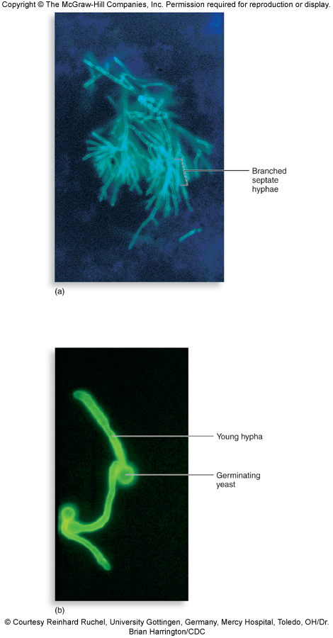
15.6 · Objective 1 — Control and amphotericin B
- Immunization is typically ineffective for preventing fungal infections, because reinfection is exceedingly common.
- Antifungal drugs: amphotericin B, flucytosine, azoles and nystatin.
- In some cases surgical removal of damaged tissue is necessary.
- Prevention is essentially limited to high-quality respirator masks and protective clothing and hygiene, to reduce contact with fungal spores.
| Amphotericin B | Slide 20 |
|---|---|
| Standing | The drug of choice for many fungal infections: highly toxic and often expensive. ★ “That’s a great test question” (the recording box at the top of Lecture 15) |
| Source | Produced by a soil bacterium of the genus Streptomyces; it attacks fungal cells, which are eukaryotic |
| Mechanism | Forms complexes with fungal cell membrane lipids, causing openings and seepage of cytoplasmic ions |
| Why it is toxic | Not selective enough to attack only fungi: fungi and humans are both eukaryotes |
| Side effects | Fatigue, weakness, fever and arrhythmia; sometimes known as “ampho-terrible” |
| Routes | Called versatile on the slide (topical, oral, intramuscular or intravenous; see 15.23) |
How amphotericin B damages fungal cells. It forms complexes with fungal cell membrane lipids, causing openings through which cytoplasmic ions seep out.
Why amphotericin B harms the patient's own cells. It complexes with cell membrane lipids, and because fungi and humans are both eukaryotes the action is not selective enough to attack only fungi; fatigue, weakness, fever and arrhythmia are its potentially serious side effects.
15.7 · Objective 1 — Systemic mycoses: the true fungal pathogens
Mycoses are organized by type, level of infection and degree of pathogenicity (15.1). The systemic infections of the true pathogens share a pattern (slide 24):
- Each true fungal pathogen is restricted to certain endemic regions of the world.
- Infection occurs when soil or other matter (such as animal waste) containing the conidia is disturbed.
- The spores germinate in the lungs, producing yeast or yeast-like cells: thermal dimorphism at work.
- Infection can become systemic in some hosts; spores may also be inoculated into broken skin.
- The diseases of the true fungal pathogens can result in immunity in a competent host.
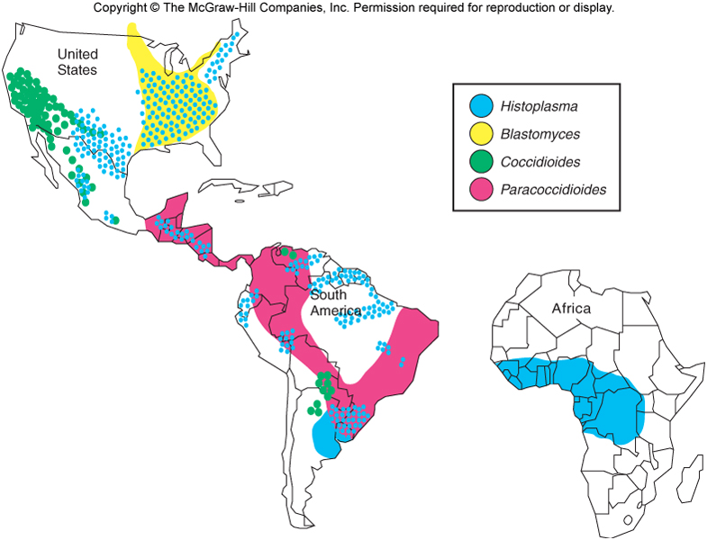
| Pathogen | Disease (nickname) | Where | Soil | Signature | Treatment on the slide |
|---|---|---|---|---|---|
| Histoplasma capsulatum | Histoplasmosis, “Ohio Valley fever” | Eastern and central United States; worldwide; Latin America, Africa | Moist, high-nitrogen soil, bird and bat guano | The most common true fungal pathogen; not person to person | Amphotericin B and azoles |
| Coccidioides immitis | Coccidioidomycosis, “Valley fever” | Southwestern United States, Mexico, Central and South America | Alkaline, salty soils of semiarid, hot climates | Block-like arthroconidia; spherules with endospores in the lungs | Amphotericin B; most cases need no treatment |
| Blastomyces dermatitidis | North American blastomycosis | Midwestern and southeastern United States, southern Canada | Rich organic matter: forest soil, decaying wood, animal manure | May be mistaken for lung cancer on chest X-ray | Amphotericin B |
| Paracoccidioides brasiliensis | Paracoccidioidomycosis | Central and South America (Brazil, Colombia, Venezuela, Argentina, Paraguay) | Cool, humid soils | The rarest primary mycosis | Ketoconazole, amphotericin B, sulfa drugs |
15.8 · Objective 1 — Histoplasma capsulatum: histoplasmosis, “Ohio Valley fever”
- The most common true fungal pathogen; causes histoplasmosis. Thermally dimorphic (the two colonies in 15.2).
- “Ohio Valley fever” is histoplasmosis, caused by Histoplasma capsulatum, the most common true fungal pathogen.
- Distributed worldwide; known in the eastern and central regions of the United States, and now recognized as endemic in parts of Latin America and Africa.
- Grows in moist soil with high nitrogen content, especially soil containing bird and bat guano.
- Not caught from another person. Histoplasmosis is not transmitted person to person, so a spouse cannot catch it from him; people acquire it by inhaling conidia from moist soil enriched with bird or bat guano.
- Inhaled conidia produce a primary pulmonary infection that may progress to systemic involvement of a variety of organs, the central nervous system, and chronic lung disease. It is NOT transmitted person to person.
- Treatment: amphotericin B and azoles are common options.
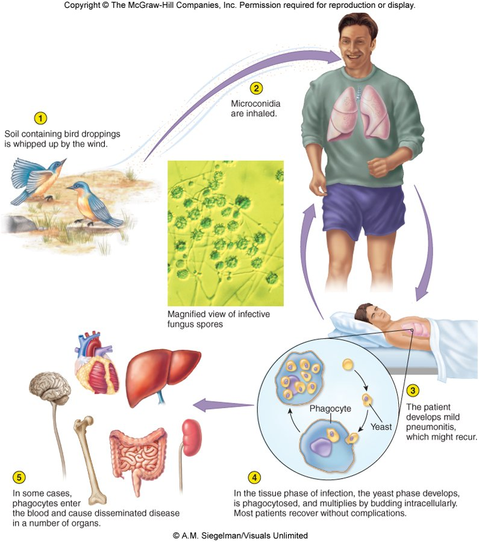
15.9 · Objective 1 — Coccidioides immitis: coccidioidomycosis, “Valley fever”
- Mainly in the southwestern United States, extending to Mexico and Central and South America. Exposure comes with farming, road construction and repair, archaeological digs, landslides and dust storms. It remains dormant in winter and spring.
- Significant risk factors: people of African or African-American descent, increasing age (over 40–60 years), and environmental or occupational exposure to dust and soil.
- Distinctive morphology: block-like arthroconidia in the free-living stage, and spherules containing endospores in the lungs.
- Lives in alkaline, salty soils in semiarid, hot climates; its spread is greatly enhanced by cycles of drought and heavy rain, followed by windstorms.
- Arthrospores inhaled from dust create spherules and can form nodules in the lungs.
- Prevention: oiling roads, planting to minimize erosion, and dust masks to reduce inhalation of spores.
- Keeping down dust. Coccidioides arthrospores are inhaled from dust, so prevention targets dust: oiling roads to keep down dust, planting to minimize erosion and using dust masks.
- Treatment: amphotericin B is the most common option, but most cases do not require any treatment at all.
- Treating coccidioidomycosis. Amphotericin B is the most common treatment option, though most cases do not require any treatment at all.
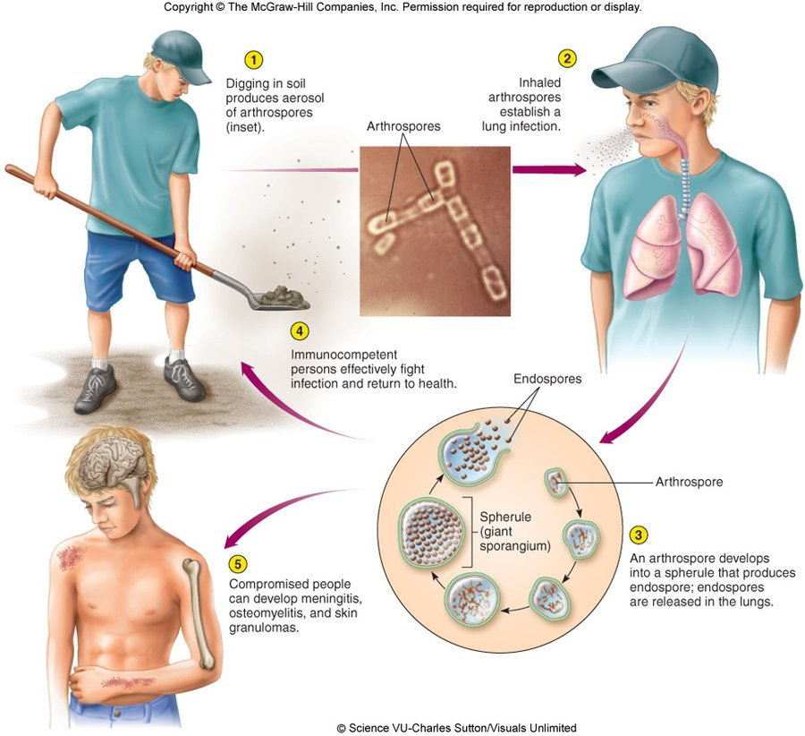
Coccidioides in the lungs. An inhaled arthrospore develops into a spherule (a giant sporangium) that produces endospores, which are released in the lungs: spherules that release endospores.
15.10 · Objective 1 — Blastomyces dermatitidis: North American blastomycosis
- A dimorphic fungus that inhabits rich organic matter: forest soil, decaying wood, animal manure.
- Free-living, mainly in the soil of a large section of the midwestern and southeastern United States, and in southern Canada; dormant in warm, dry weather, then sporulates in colder, wetter weather. Also reported in South and Central America, Africa and the Middle East.
- Inhaled conidia (10–100) convert to yeasts and multiply in the lungs; the infection may be mistaken for lung cancer on a chest X-ray.
- Acquiring Blastomyces dermatitidis. People acquire it by inhaling its conidia when the soil is disturbed; the inhaled conidia convert to yeasts and multiply in the lungs, causing cough, chest pain and fever.
- Blastomyces in the lungs. Blastomyces is a dimorphic fungus, free-living in soil; its inhaled conidia convert to multiplying yeast cells in the lungs.
- Symptoms: cough, chest pain and fever, in humans, dogs, cats and horses.
- Chronic cutaneous nodules, with later bone and nervous system complications.
- Treatment: amphotericin B is the most common option.
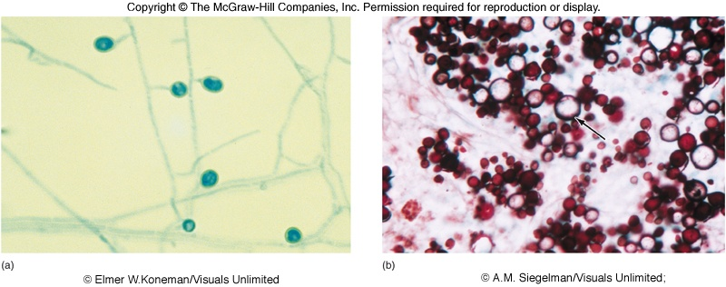
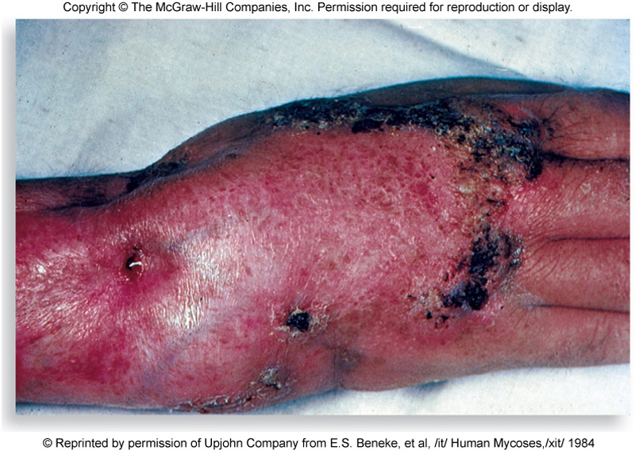
15.11 · Objective 1 — Paracoccidioides brasiliensis: paracoccidioidomycosis
- Endemic in Central and South America, mainly the cool, humid soils of Brazil, Colombia, Venezuela, Argentina and Paraguay; the rarest of the primary mycoses. Most studies in the World Health Organization report were among human immunodeficiency virus-positive patients in Brazil.
- Lung or skin infection occurs through inhalation or inoculation of spores, respectively.
- Most at risk: rural farm workers and harvesters, where poor nutrition is a predisposing factor; male, over 40 years old.
- Paracoccidioidomycosis risk profile. Rural farm workers and harvesters are most at risk; poor nutrition (a poorly nourished worker) is a predisposing factor, and male sex and age over 40 add to the risk.
- Systemic disease is not common; these are usually mild, self-limiting infections.
- The rarest primary mycosis. Paracoccidioidomycosis is the rarest of the primary mycoses; systemic disease is not common, and infections are usually mild and self-limiting.
- Treatment: ketoconazole, amphotericin B and sulfa drugs are commonly used.
15.12 · Objective 1 — Subcutaneous mycoses: Sporothrix schenckii
Subcutaneous mycoses occur when fungi are transferred directly into traumatized skin and invade the damaged site. Most species in this group are greatly inhibited by the higher temperatures of the blood and viscera, so they rarely disseminate through the body. These diseases are progressive and may destroy skin and underlying tissue.
- Sporotrichosis, “rose-gardener’s disease”, usually comes from a puncture wound: a thorn, wood, bare roots.
- A very common saprobic fungus (one that derives its nutrition from dead or decaying matter) that decomposes plant matter in soil. Garden center workers, plant nurseries and people who handle pine straw or hay bales may be at risk.
- Saprobic. A saprobe feeds on dead or decaying matter, deriving its nutrition from it; Sporothrix schenckii is a very common saprobic fungus that decomposes plant matter in soil.
- Infects appendages and lungs (humans, horses, dogs, cats and mules; in animals it is often seen in the feet, claws or hooves).
- Treatment: heat packs and/or super-saturated potassium iodide (in the recording, potassium iodide is the treatment for animals); systemic infections with amphotericin B and/or itraconazole.
- The lymphocutaneous variety: contaminated plant material penetrates the skin, the pathogen forms a nodule, then spreads to nearby lymph nodes.
- Thorn puncture, nodule, then a line of lesions up the forearm. This is lymphocutaneous sporotrichosis: Sporothrix schenckii forms a nodule where contaminated plant material penetrated the skin and spreads to nearby lymph nodes.
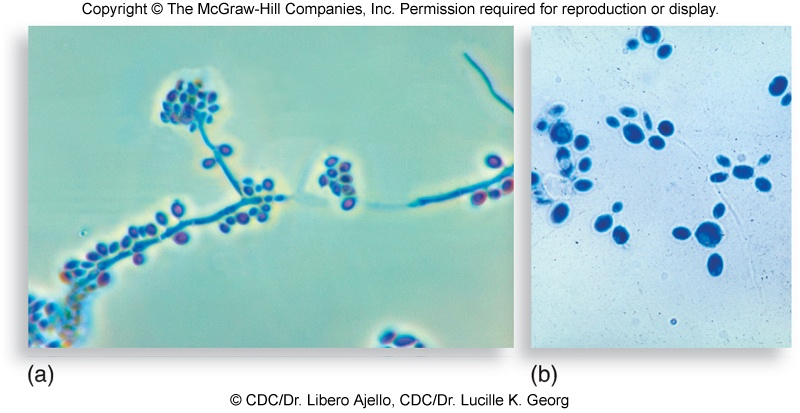
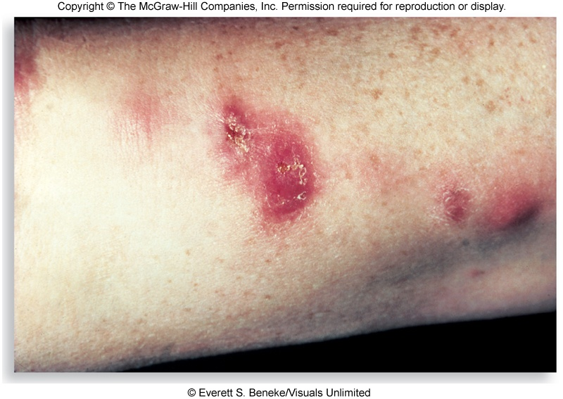
15.13 · Objective 1 — Cutaneous mycoses: the dermatophytes
- Infections strictly confined to keratinized epidermis (skin, hair, scalp, nails) are called dermatophytoses: “ringworm” and “tinea”.
- They involve 39 species in three genera: Trichophyton, Microsporum and Epidermophyton, all closely related and morphologically similar. The actual causative agent of “ringworm” varies case to case.
- The three ringworm genera. The dermatophytes that cause ringworm (tinea) belong to the genera Trichophyton, Microsporum and Epidermophyton; the actual causative agent varies from case to case.
- Natural reservoirs: humans, animals and soil.
- What promotes infection: the hardiness of the spores, the presence of abraded skin, and close person-to-person or person-to-fomite contact.
- A long infection period followed by localized inflammation and allergic reactions to fungal proteins.
“Focus on the Latin names for each body part/region” (slide 43).
| Name | Body site | What the slides say |
|---|---|---|
| Tinea capitis | Scalp | Scalp and hair-bearing regions of the head; hair may be lost; common in children |
| Tinea barbae | Beard | Chin and beard of adult males; contracted mainly from animals |
| Tinea corporis | Body | Inflamed, red ring lesions anywhere on smooth skin; contact, clothing, bedding |
| Tinea cruris | Groin | “Jock itch”: groin and scrotal regions; pervasive among athletes and crowded living conditions |
| Tinea pedis | Foot | Spread by exposure to public surfaces; between the digits and on the soles; rare where people usually go barefoot |
| Tinea manuum | Hand | Paired with tinea pedis on the slide: public surfaces; between the digits |
| Tinea unguium | Nails | A persistent colonization of the nails of the hands and feet that distorts the nail bed; nail extensions may provide a portal of entry |
Treatment of dermatophytoses most often uses topical antifungal agents: azoles applied for several weeks, which may be partnered with oral antifungal drugs if needed. Debridement of the skin and ultraviolet light treatments have also been successful.
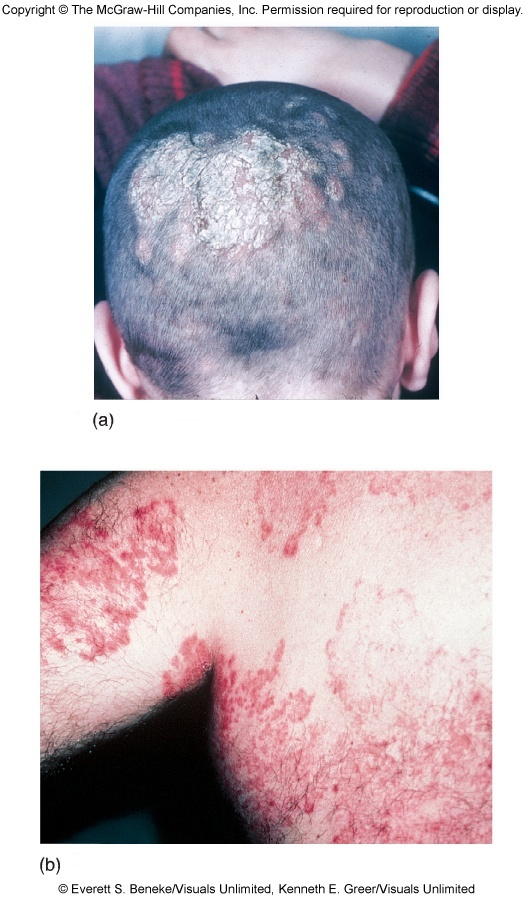
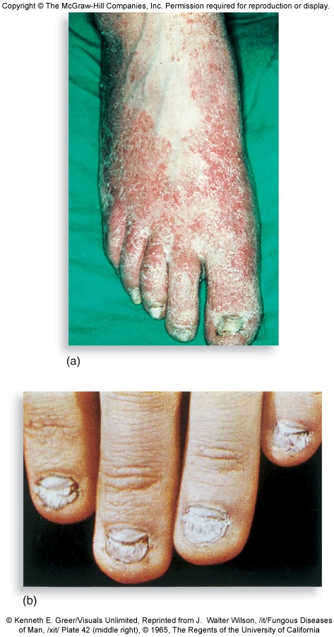
15.14 · Objective 1 — Superficial mycoses
| Mycosis | Cause | What it does |
|---|---|---|
| Tinea versicolor | A yeast, Malassezia furfur | Mild, chronic scaling and mottling of the skin; also implicated in folliculitis, psoriasis and seborrheic dermatitis |
| White piedra (piedra = stone) | Trichosporon species | Whitish or colored masses on pubic or axillary hair (also body, beard, mustache, eyebrows) |
| Black piedra | Piedraia species | Dark-brown to black, gritty nodules, mainly on scalp hairs |
Both piedras are considered non-contagious and may result from poor personal hygiene (oily hair products, tight hats or veils). Neither piedra is common in the United States.
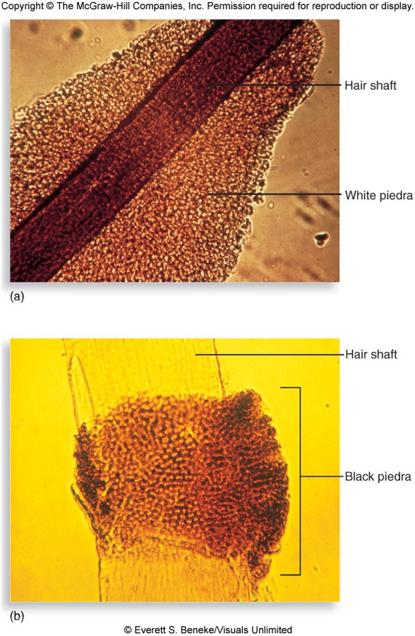
15.15 · Objective 1 — The opportunistic mycoses
These fungi were once considered “harmless” skin or air contaminants. All have predisposing factors, and the host’s defenses are compromised: Candida species, the dominant opportunistic pathogen; Aspergillus fumigatus, which accounts for most lung infections (the slide’s words; read it as most of the Aspergillus lung infections); Cryptococcus neoformans; Fusarium species; and Rhizopus species.
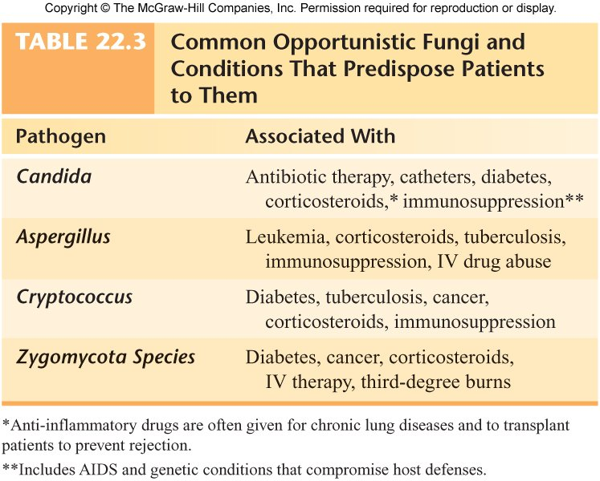
An emerging concern. Mycoses account for a growing share of nosocomial (hospital-acquired) infections, about one in ten and rising, which is why opportunistic fungi are an emerging concern.
15.16 · Objective 1 — Candida and candidiasis
- Candida albicans is the familiar one, but Candida auris is emerging as a serious cause of invasive candidiasis, producing hospital outbreaks that are difficult to eradicate: antifungal drug resistance, thermoresistant, and partially resistant to common disinfectants. C. auris was first identified in Japan in 2009, as the cause of an ear infection, hence the name; cases have increased in recent years.
- Candida auris outbreaks. Hospital outbreaks are hard to eradicate because of drug, heat and disinfectant resistance: it shows antifungal drug resistance, is thermoresistant and is partially resistant to common disinfectants.
- C. albicans is a widespread yeast, usually endogenous and not always considered contagious; it can be spread through surgery, childbirth, breast-feeding and sexual contact.
- Infections range from short-lived, superficial skin irritations to overwhelming, fatal systemic disease in seriously compromised hosts.
- Colony: off-white, pasty, with a yeasty (“baking bread”) odor.
- Normal flora of the oral cavity, genitalia, large intestine or skin of 20% of humans; accounts for 70% of nosocomial fungal infections.
| Form | What the slides say |
|---|---|
| Thrush | A thick, white, adherent growth on the mucous membranes of the mouth and throat (chronic thrush in an adult man with diabetes, slide 54) |
| Vulvovaginal yeast infection | A painful inflammatory condition of the female genital region with ulceration and discharge; may be transmitted to unprotected sexual partners, especially uncircumcised males |
| Cutaneous candidiasis | In chronically moist areas of skin and in burn patients; intertriginous lesions (armpits, groin, under the breasts) are common in obese patients |
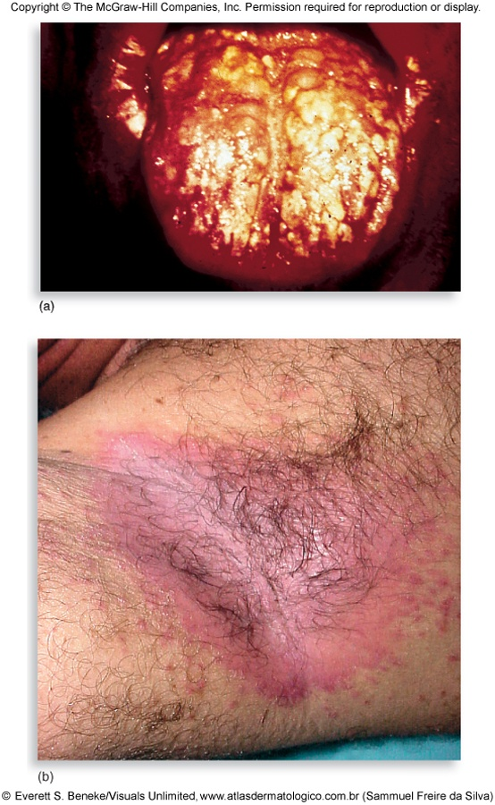
Diagnosis and treatment. A presumptive diagnosis is made if budding yeast cells and pseudohyphae are found; growth on selective, differential media differentiates the Candida species; the germ tube test is on the identification flowchart (15.5). Topical antifungals are used for superficial infections; amphotericin B and azoles for systemic infections.
Telling the Candida species apart. After a presumptive diagnosis of candidiasis, growth on selective, differential media differentiates the Candida species.
Presumptive diagnosis of candidiasis. It is made when budding yeast cells and pseudohyphae are found in a scraping.
15.17 · Objective 1 — Cryptococcus neoformans and cryptococcosis
- The number one critical fungal pathogen on the World Health Organization’s list.
- A widespread encapsulated yeast that inhabits soil around pigeon roosts in urban areas, and soil containing decaying wood.
- Healthy humans are strongly resistant; frank infection occurs in immunocompromised patients (human immunodeficiency virus infection and acquired immunodeficiency syndrome, cancer, immunosuppression, autoimmune disease, diabetes, cirrhosis). Treatment protocols are well established for patients with human immunodeficiency virus infection, though the drugs may be unavailable in many countries.
- Lungs: cough, fever and lung nodules. Dissemination to the meninges and the brain can cause severe neurological disturbance and death.
- Diagnosis: a negative stain shows the encapsulated budding yeast; biochemical and serological testing are the best diagnostic tools.
- Diagnosing cryptococcosis. Biochemical and serological tests are the best diagnostic tools; a negative stain can demonstrate the encapsulated budding yeast.
- A negative stain showing encapsulated budding yeast demonstrates Cryptococcus neoformans, the widespread encapsulated yeast of pigeon-roost soil.
- Treatment: systemic infection generally requires amphotericin B and fluconazole or another azole-class drug.
- Treating systemic cryptococcal infection. It generally requires amphotericin B plus fluconazole or another azole-type drug; treatment protocols are well established for patients with human immunodeficiency virus infection.
15.18 · Objective 1 — Pneumocystis jirovecii and Pneumocystis pneumonia
- Formerly Pneumocystis carinii. A small, unicellular fungus that causes pneumonia; the most prominent opportunistic infection in patients with human immunodeficiency virus infection and acquired immunodeficiency syndrome.
- Immunological evidence such as antibody titer suggests that contact with it is very widespread and most of us remain asymptomatic.
- The pneumonia forms secretions in the lungs that block breathing and can be rapidly fatal if not controlled (cough, fever, shallow respiration and cyanosis). Kidney transplant patients are also at high risk.
- Cysts containing several bodies are the tissue form of Pneumocystis jirovecii; kidney transplant patients are at high risk, and cough, fever, shallow respiration and cyanosis are its pneumonia.
- Treatment: pentamidine (an anti-protozoan) and the antibacterial co-trimoxazole (trimethoprim-sulfamethoxazole); these are NOT the traditional antifungal drugs.
- Its taxonomy is still debated, fungus or protozoan; most scientists lean toward a fungal classification because of genetic analysis.
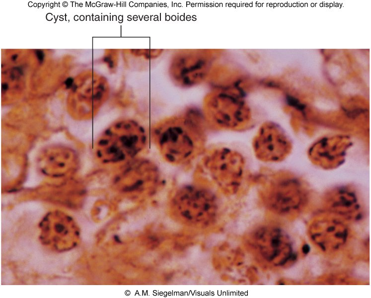
15.19 · Objective 1 — Aspergillus and aspergillosis
- A very common airborne soil fungus; its resistance to azole fungicides can be attributed to agricultural practices (crop spraying to prevent loss to fungi).
- About 600 species, 8 involved in human disease; A. fumigatus is the most common and is number three on the World Health Organization’s critical list.
- A serious opportunistic threat in human immunodeficiency virus infection and acquired immunodeficiency syndrome, leukemia, and transplant patients.
- Infection usually occurs in the lungs: spores germinate and form fungal balls; it can also colonize the sinuses, ear canals, eyelids and conjunctiva.
- Acquiring Aspergillus. Aspergillus is a very common airborne soil fungus: people usually acquire it by breathing in airborne spores, and infection usually occurs in the lungs, where its spores germinate and form fungal balls.
- Invasive aspergillosis can produce necrotic pneumonia and infection of the brain, heart and other organs; transplant recipients (organ and bone marrow) and cystic fibrosis patients are at increased risk.
- Treatment on the slide: amphotericin B and nystatin (see 15.23).
- In a sputum specimen it shows branched septate hyphae (15.5).
- Branched septate hyphae in sputum. A mass of branched septate hyphae, with no yeast cells, in a dye-stained sputum specimen is the picture of Aspergillus species; dyes amplify these fungal elements in tissue specimens.
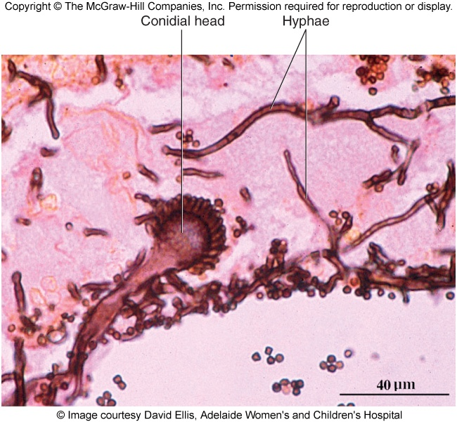
15.20 · Objective 1 — Mucormycosis and other opportunists
Zygomycosis (mucormycosis)
- Members of the Division Zygomycota are extremely abundant saprobic fungi found in soil, water, organic debris and spoiled food.
- Mucormycosis is called “black mold” and has arisen as a big concern in India over the last few years; injudicious use of respiratory steroids and uncontrolled diabetes may have contributed. Rhino-orbital-oral-cerebral symptoms have been documented.
- The fungi most often involved are Rhizopus and Mucor species.
- Usually harmless air contaminants that may invade the membranes of the nose, eyes, heart and brain of people with diabetes, leukemia or malnutrition, with severe consequences. There is also a pediatric gastrointestinal complication in children who lack sufficient protein (kwashiorkor).
- Treatment: removal of affected tissue and amphotericin B.
Miscellaneous fungal opportunists
- Any fungus can be implicated when the host’s immune defenses are severely compromised.
- Fusarium: another mainly tropical soil mold; occasionally infects the eyes (for example from contaminated contact lenses), toenails, feet and burned skin, and can result in severe disability and death.
- Fusarium and the eye. Fusarium species, a mainly tropical soil mold, occasionally infect the eyes, for example through contaminated contact lenses, as well as toenails, feet and burned skin.
- Eumycetomas, deep tissue infections, are especially prevalent in poor countries; risk factors: male, 11–30 years old, farmer, not wearing shoes. Long-term antifungal drug therapy and amputation may be required for full resolution.
- Eumycetoma risk profile. A barefoot young male farmer fits: risk factors are male sex, age 11 to 30 years, farming and not wearing shoes; long-term antifungal drug therapy and amputation may be required for full resolution.
15.21 · Objective 1 — Fungal allergies and mycotoxins
- Fungal spores are common sources of atopic allergies or hypersensitivities: seasonal allergies and asthma; farmer’s lung, teapicker’s lung, bark stripper’s disease.
- Fungal toxins cause mycotoxicoses, usually by ingesting or inhaling fungal toxins.
| Toxin or mold | What the slide says |
|---|---|
| Aflatoxin | Hepatotoxic and carcinogenic; grains, corn, peanuts; lethal to poultry and livestock (especially turkeys, ducklings, pigs and calves); in humans it may be a co-factor in liver cancer |
| Ergot | On rye or other grains contaminated by Claviceps fungi; mind-altering lysergic acid (the slide writes LSD; lysergic acid diethylamide is a semi-synthetic derivative of it); cross-reference Salem, Massachusetts |
| Stachybotrys chartarum | Sick building syndrome (damp building related illness, the “black mold”; very different from mucormycosis); can cause severe hematologic and neurological damage. Not all molds in buildings are toxic, and not all illnesses in buildings are due to fungi; fear of mold has spawned a whole industry of environmental mold control |
15.22 · Objective 2 — Modes of transmission
| How people acquire it | Fungi |
|---|---|
| Inhaling spores from disturbed soil or animal waste | The true pathogens: Histoplasma (soil with bird and bat guano, conidia whipped up by wind), Coccidioides (arthrospores in dust from digging, construction, dust storms), Blastomyces (conidia from forest soil, decaying wood, manure), Paracoccidioides (lung infection by inhalation) |
| Inhaling spores or yeasts of opportunists | Cryptococcus (soil around urban pigeon roosts), Aspergillus (airborne soil fungus; spores germinate in the lungs), the Zygomycota (air contaminants) |
| Inoculation through broken or punctured skin | Sporothrix (thorn, wood, bare roots); Paracoccidioides (skin infection by inoculation); true-pathogen spores into broken skin; nail extensions as a portal for tinea unguium |
| Person to person or by fomites | The dermatophytes (close contact, shared equipment, clothing, bedding, public surfaces; tinea barbae mainly from animals) and Candida (surgery, childbirth, breast-feeding, sexual contact) |
| Endogenous (already on the body) | Candida albicans, usually endogenous normal flora |
| Not communicable | Most fungal pathogens; Histoplasma is explicitly not transmitted person to person; the piedras are non-contagious |
| Ingesting or inhaling toxins | Mycotoxicoses: aflatoxin (grains, corn, peanuts), ergot (rye) |
15.23 Where the slides disagree, and where current practice differs
- Immunity after a true fungal pathogen. Slide 15 says long-term immunity “can only develop against a few true fungal pathogens”; slide 24 says “all of the diseases caused by the true fungal pathogens can result in immunity in a competent host”. In the recording she sided with slide 24 (immunity is possible against the true pathogens, in a competent host). No question asks which, or how many; the contrast with the opportunists (reinfection highly likely) is the same on both slides.
- Amphotericin B routes (slide 20). The slide calls it versatile, given topically, orally, by intramuscular injection or intravenously, and in the recording she repeated it (“usually administered orally”). In current practice it is given intravenously for systemic infection; it is not given by intramuscular injection and is poorly absorbed by mouth. Not asked.
- Why amphotericin B is toxic (slide 20). The slide gives the reason as fungi and humans both being eukaryotes, so the drug is not selective enough. Pharmacology references add the mechanism: it binds ergosterol in fungal membranes but also binds some cholesterol in human membranes. One quiz question asks this, keyed as the slide says.
- Aspergillosis treatment (slide 60). The slide lists amphotericin B and nystatin. Nystatin is a topical and oral (non-absorbed) agent and current practice does not use it for invasive aspergillosis (azoles such as voriconazole are used). In the recording she named only amphotericin B. Not asked.
- Treating coccidioidomycosis (slide 30). The slide makes amphotericin B the most common treatment option (most cases need none), and in the recording she called amphotericin B the drug of choice for every true pathogen. Current guidelines favor azoles such as fluconazole for most treated cases and keep amphotericin B for severe disease. Keyed as the slide says.
- Sporotrichosis treatment (slide 39). The slide gives heat packs and super-saturated potassium iodide for infection of the “appendages and lungs”; in the recording she presented potassium iodide as the treatment for animals and amphotericin B for people. Not asked.
- How many ringworm fungi (slide 42). The slide says 39 species in three genera; in the recording she said “almost 40 different fungal genera”, a slip for species. The quiz keys the three genera.
- Temperatures. Slide 5 gives mold at 30 °C and yeast at 37 °C; the slide 6 figure gives the ranges below 30 °C and 35–40 °C, and slide 27 grows the mold below 35 °C. They agree on direction; the quizzes use slide 5’s two numbers.
- “Black mold.” Slide 63 calls mucormycosis “black mold” (in British spelling); slide 65 calls Stachybotrys the “black mold” and says the two are very different. Know them apart by what they do: mucormycosis invades tissue (nose, eyes, brain) in diabetes and leukemia; Stachybotrys is the sick building mold.
- Spellings. The deck’s “Blastomyces dermatiditis” (slide 34) is Blastomyces dermatitidis, as slide 33 spells it; the deck’s British spellings are written in US spelling here.
Source: Fungi of Medical Importance (PAJ5200.Fungi of Medical importance.pptx), Slides 1–65, and the PAJ 5200 syllabus instructional objectives.
16 · Significant Microorganisms in Food Safety
Dr. Fair · Lecture 16 · 30 October 2026
Instructional Objectives
- Identify sources of microbial contamination in global food supply.
- Correlate associations between contaminated foods with the increasing numbers of diagnosed food-borne illnesses and mortality worldwide.
- Analyze associations between public concern and antibiotic resistant strains of microbes in the food supply.
- Correlate associations between improved laboratory analytical methods with respect to near-daily announcements of food recalls and food-related illness.
About 39 minutes with Dr. Fair, one part (Jaxon’s recording), straight after Lecture 15 with no break (“Do we break or we go? We go.”); it covers the whole deck and ends “Anyway, that’s it.” One transcript only: Notability made no transcript of this lecture, so quotes below are from a single machine transcription. Every claim was checked against the deck; where the two differ, the slide is what this guide teaches.
No signpost at all: she never said what is or is not on the exam, so the quizzes are weighted by time spent, stories taken out (about 13 minutes: food-poisoning tales, cookie dough, a wine film, Pepto’s black tongue, the pet turtle, bread buns). Microbes in food production took the most, about 7 minutes (fermentation, bread, beer, brine pickles, dairy, microbes as food), then Salmonella 3, Escherichia coli 2, the burden and agencies, Vibrio, Clostridium, fungi with protozoa and worms, and the viruses about 1½ each, Listeria and tracking about 1 each, and intoxication versus infection, Campylobacter, Bacillus cereus and kitchen prevention under 1 each.
| What was said | What it means for you |
|---|---|
| “Listeria is the one that scares me… such a high temperature range of like zero or one degree Celsius all the way out to 40 degrees Celsius, so that’s refrigerator, countertop… in your freezer Listeria can survive as well, and Listeria is the number one cause of food related death.” [26:25] | 16.8: the 1–40 °C range; in the freezer it survives (her word), which settles the slide’s “grows easily at freezer temperatures”. She repeated the slide’s “number one cause of food-related deaths”, so it stays keyed as the slide says (16.17). |
| “Keep your hot foods hot and your cold foods cold, and if something is sketchy, leftovers, just toss it. It’s not worth the risk.” [29:52; again at 36:21] | Said twice: 16.10 (Bacillus cereus, rice) and 16.16 (prevention). |
| “E. coli is known as an indicator organism and what it indicates is the presence of fecal material.” [19:10] | 16.5: the eosin methylene blue plate and the indicator organism. |
| “That is not so much an issue today because of aquaculture.” [31:36] | 16.11: the R-month rule for shellfish. |
What she did not cover: objective 3 (antibiotic-resistant strains in the food supply) was never mentioned, so it still has no source (16.15); she did not mention heat-stable or heat-labile toxins for Bacillus cereus (slide 28 stands, 16.17); she said “use a meat thermometer” without a temperature (slide 36’s 165 °F stands); and she said “there is a vaccine available” for hepatitis without naming which.
16.1 · Objective 1 — Microbes in food: production and spoilage
| Effect of microbes on food | What it means |
|---|---|
| Beneficial | Food fermented or otherwise chemically changed by added microbes or microbial products, to alter or improve its flavor, taste or texture |
| Detrimental | Food poisoning, food intoxication, food-borne illness and food spoilage: food unfit to eat because of undesirable flavors, appearance or smell |
| Neutral | Microbes present that neither cause disease nor change the food: “they’re just there and we consume them with the food” |
Bread making
Microbes have three main functions: (1) leavening flour-based dough (mainly carbon dioxide and other gases); (2) imparting flavor and aroma (organic acids and alcohols); (3) conditioning the dough to make it pliable and workable (microbial enzymes act on gluten to give elasticity). Microbes involved: Saccharomyces cerevisiae (baker’s yeast), certain Clostridium species, and certain Lactobacillus species (Lactobacillus sanfrancisco in sourdough).
Beer, wine and other fermented products
- Glucose + yeast → 2 ethanol + 2 carbon dioxide (C6H12O6 → 2C2H5OH + 2CO2). Evidence of beer brewing since 6000 BCE in Sumeria, Egypt and Babylon. Steps: malting of the starch source, mashing, wort plus hops, lagering, filtration.
- Wine usually starts with grapes, but other fruit and plant material can be used (apples, oranges, pineapples, peaches, plums).
- Sometimes the source of yeast for an alcoholic beverage is human saliva: chewing (mastication) of the plant material precedes the brewing.
- Pickling: salt brine preserves vegetable material; lactic acid may also be present, with vinegar and spices. Cucumbers, cabbage, olives, okra, onions, ginger root and many more can be pickled.
- Soybeans and their extracts are fermented into tofu and soy sauce (shoyu); also fermented fish sauce, mole (chocolate), tea and coffee.
Milk and dairy
- Milk begins sterile: water, minerals, protein, butterfat, lactose and other sugars. Microbes are introduced as it exits the female mammal’s body and by milking utensils; it is highly susceptible to microbial growth because of its nutrient density.
- How microbes first get into milk. Milk begins as a sterile mixture; microbes are introduced on leaving the animal, as it exits the female mammal's body, and from milking utensils.
- Fermentation of milk can be natural or induced (cheese or yogurt making). Cheese making is about 5000 years old (cow, goat or sheep milk; some cultures horse or water buffalo). The first fermented dairy products were probably due to accidental contamination with human skin, nose or oral bacteria and fungi. Cheese making involves yeast, bacteria and molds (multicellular fungi).
- Yogurt is a fermented milk made with bacteria such as Lactobacillus and Streptococcus; other fermented milks are kefir, koumiss and buttermilk.
Microbes as food, and fungi in food
- Macroscopic fungi and algae are obvious foods: mushrooms, truffles, seaweed. Microbial additives for animal feed are already used; human versions are slower to be accepted. “Single cell protein” and bacterial or fungal products are being researched in the United Kingdom and elsewhere. In the United States the cyanobacterium Spirulina is added to foods such as smoothies and vitamin supplement gummies.
- Fungi do not commonly cause disease but are associated with both food production and food spoilage: importance in food (mushrooms), in medicine (they produce penicillin), and in industry (yeasts are fungi used to ferment many products). Fungal spoilage: bread, cereals and acidic juices.
16.2 · Objective 1 — Where foodborne microbes come from
| Source | Organisms and foods on the slides |
|---|---|
| Feces (human and animal) | Escherichia coli, the indicator organism of feces: fecally contaminated meats or vegetables. Norovirus and hepatitis A and E: feces (and vomitus), shellfish from feces-contaminated water |
| Animals, especially poultry | Salmonella: many animals, mainly poultry and aquatic reptiles. Campylobacter: raw poultry. Listeria: birds and mammals. Parasitic worms: venison, pork and other meat contaminated while the animal is still alive; domestic pet feces (tapeworm, roundworm) |
| Soil and plants | Listeria persists in soil. Clostridium spores: soils, plants, honey |
| Water | Vibrio: salt-tolerant, in ocean and estuarine waters. Protozoa: drinking water and uncooked fruit and vegetables |
| People | Norovirus person to person; the carrier cook (16.6); milk picks up microbes as it leaves the animal and from utensils |
16.3 · Objective 2 — The size of the problem, and who watches it
- An estimated 250 different foodborne pathogens, with bacteria the most common.
- The slide gives 75 million cases a year “worldwide” (probably under-reported) and at least 5000 deaths: a serious problem for global health (see 16.17).
- Recorded counts are probably too low. The yearly estimate of foodborne illness is probably an under-reported number, and Campylobacter jejuni illness in particular is very much under-reported, so recorded counts likely understate the true burden.
- The worry is not only bacteria from plant and animal sources but also viruses, parasites and toxins produced by microorganisms.
- Plant foods carry bacteria too. The worry about bacteria covers food from both plant and animal sources: Escherichia coli outbreaks have come from bagged spinach and romaine lettuce, and Salmonella recalls have included watermelon, onions, cantaloupe and cucumbers, so avoiding animal foods does not remove the risk.
- Surveillance and outbreak investigation: local and state health departments, the Centers for Disease Control and Prevention, the Food and Drug Administration, the United States Department of Agriculture. Law enforcement and policy: the Food and Drug Administration and the United States Department of Agriculture.
- Law enforcement and policy. Local and state health departments, the Centers for Disease Control and Prevention, the Food and Drug Administration and the United States Department of Agriculture all conduct surveillance and investigate outbreaks, but enforcing food safety law and policy rests with the Food and Drug Administration and the United States Department of Agriculture.
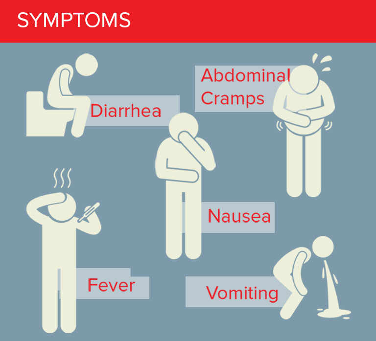
The better-known bacteria of the lecture (slide 13): E. coli, Salmonella species, Campylobacter jejuni, Listeria monocytogenes, Clostridium species, Bacillus cereus, and Vibrio species such as vulnificus or parahaemolyticus. Organisms other than bacteria (slide 30): fungi, protozoa, parasitic worms (in pork, venison, wild-caught fish) and viruses.
16.4 · Objective 2 — Food intoxication versus food infection
| Kind of illness | What is eaten | What happens | Examples (slide 12) |
|---|---|---|---|
| Food intoxication | A preformed toxin made by the bacteria in the food (cells and toxin) | The toxin is ingested and reaches its target organs (the diagram shows the brain and muscles) | Staphylococcal toxin, Clostridium botulinum toxin |
| Food infection | Live bacterial cells | Improper cooking lets the bacteria multiply in the food; after ingestion they cause an intestinal infection | Salmonella, Listeria |
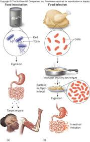
16.5 · Objective 2 — Escherichia coli
- EMB (eosin methylene blue) plates are often used to confirm E. coli in samples (food, water).
- An “indicator organism” associated with human and animal feces.
- Found everywhere, including inside humans, but not always pathogenic; it has many good traits too.
- Not every strain is pathogenic. Escherichia coli is found everywhere, including inside humans, but it is not always pathogenic and has many good traits too; illness comes from the bad strains.
- As an infectious agent it causes nausea, vomiting and diarrhea. The bad strains can carry numerous toxins (for example the enterotoxigenic or enterohemorrhagic strains).
- Sporadic outbreaks originate from fecally contaminated meats or vegetables (the Jack in the Box hamburgers, bagged spinach). One of the worst culprits is the O157:H7 serotype.
- The outbreak and recall list (slide 16): hamburgers (1993), California bagged spinach (2006), refrigerated cookie dough (2009), romaine lettuce (2010, 2018 from Arizona, 2020–2021 from California), 7% of fresh spinach in grocery stores carrying E. coli (a 2013 report), beef products (2019), ground beef from packing companies (2023–2025), and raw milk cheese in the western United States (September–October 2026).
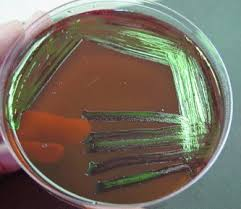
16.6 · Objective 2 — Salmonella
- The main species are Salmonella typhi, S. enterica, S. enteritidis and S. typhimurium; others are named for where they were first found (S. miami, S. heidelberg, S. sandiego).
- Associated with many animals, mainly poultry and aquatic reptiles.
- Salmonellosis can appear as gastroenteritis, enteric fever, septicemia (blood infection), fever, shock and kidney dysfunction. Incubation can be as short as hours or as long as weeks.
- Young children and the elderly are at greatest risk.
- Elderly people, on both risk lists. Young children and the elderly are at greatest risk for salmonellosis, and elderly people are also among those at greatest risk for listeriosis, so the elderly are the group on both lists.
- Typhoid fever (S. typhi) is the most severe enteric fever: the intestinal wall is invaded and the bacteria can spread to the blood and lymph nodes.
- Typhoid fever, caused by Salmonella typhi, is the most severe enteric fever, marked by invasion of the intestinal (gut) wall, with possible spread to the blood and lymph nodes.
Sources (slide 18): poultry products (chicken, turkey, duck), eggs, pet food, live poultry (such as backyard hens), peanut butter and sushi-grade seafood. Recalls have included peanuts and peanut butter (2009), hydrolyzed vegetable protein (2010), farm eggs (2010), ground turkey (2011), pre-cut watermelon (2018), turkey and pork products (2019), onions from Mexico (2021), pre-cut cantaloupe (2023), cucumbers from Florida and Mexico (2025) and jalapeno peppers (August 2026): produce, not just animal foods. Slide 19 pictures peanut butter jars, eggs, a pet turtle and a watermelon recall.
Mary Mallon, “Typhoid Mary.” She was warned and given an explanation, yet she kept cooking despite warnings: she persisted in preparing food, causing multiple deadly outbreaks.
Live backyard hens. Keeping live poultry such as backyard hens is a Salmonella source, alongside poultry products, eggs and pet food.
Eggs and peanut butter. Both are Salmonella sources, and Salmonella recalls have included peanuts and peanut butter and farm eggs.
16.7 · Objective 2 — Campylobacter jejuni
- A leading cause of bacterial diarrheal disease each year in the United States, especially in children.
- Fever, headache, dizziness and bloody diarrhea, usually rapid in onset.
- The infectious dose is less than 500 bacterial cells, so even one drop of raw poultry fluid can cause illness.
- Poultry, including its leftovers. Even one drop of raw poultry fluid can cause Campylobacter jejuni illness, so holiday poultry and its leftovers deserve particular care.
- Very much under-reported. Be careful with Thanksgiving poultry and leftovers.
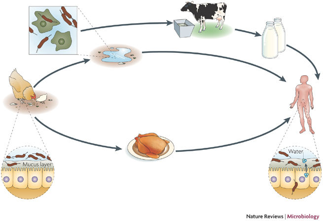
The Campylobacter jejuni transmission cycle reaches people by three routes: poultry meat, contaminated water, and milk from cattle.
16.8 · Objective 2 — Listeria monocytogenes
- Found in birds and mammals, and can persist in soil.
- Large-scale food recalls: the big ice cream recall of 2016 (Blue Bell, slide 22), cantaloupes, frozen vegetables, poultry (2019).
- Greatest risk of listeriosis: pregnant women, unborn children, premature babies, elderly people and the immunocompromised.
- The slide calls it “the #1 cause of food-related deaths in the US” (see 16.17).
- Number one cause of food-related deaths. Listeria monocytogenes is the number one cause of food-related deaths in the United States.
- Most vulnerable foods: soft cheeses, raw fruit and vegetables, raw or undercooked meats, deli meats, seafood, smoked seafood, hot dogs, preserved meats.
- Probably the biggest concern: it grows well from 1 to 40 °C, easily at refrigerator, room or freezer temperatures (the slide’s words; in the recording, it survives in the freezer: see 16.17).
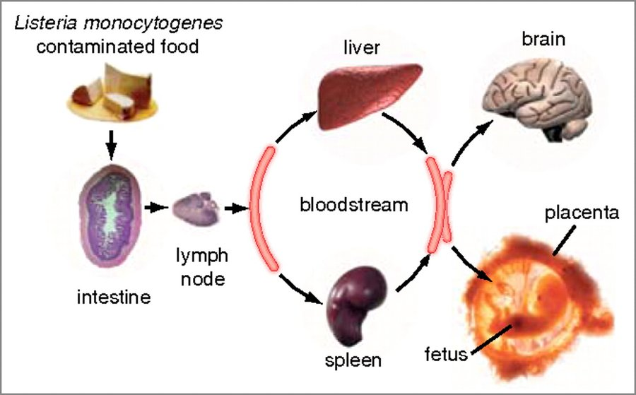
16.9 · Objective 2 — Clostridium and botulism
- Gram-positive rods, strict anaerobes, form spores.
- Notable species: C. botulinum and C. perfringens; C. tetani (not food-related) and C. difficile (also not food-related).
- Spores are found in soils, associated with plants, and even in honey (slide 26 shows a raw honey label).
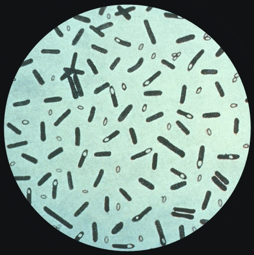
| Clostridium botulinum | Slide 27 |
|---|---|
| Toxin | When spores germinate they can start producing toxin: botulinum toxin (“botox”) |
| Forms | Foodborne and wound-borne botulism are known to occur |
| Effect | Ingesting the toxin leads to paralysis of the muscles in the relaxed position, then respiratory failure and death |
| Dose | Even if only a few bacteria are present, they can produce plenty of toxin |
16.10 · Objective 2 — Bacillus cereus
- A very common food poisoning agent, especially in summertime.
- Gastroenteritis from B. cereus is either diarrheal or emetic.
- Intoxication has a rapid onset (6 hours or less) with self-resolving vomiting and abdominal cramps.
- Fried rice at a summer picnic. Vomiting and abdominal cramps within a few hours of eating fried rice point to Bacillus cereus: its emetic form is often associated with rice, and the intoxication has a rapid onset (6 hours or less).
- Keep hot foods hot and cold foods cold.
| Form | Toxin, as the slide gives it | Food |
|---|---|---|
| Diarrheal | Heat-stable toxin (see 16.17) | Meat |
| Emetic | Heat-labile toxin (see 16.17) | Rice |
16.11 · Objective 2 — Vibrio
- Several species: Vibrio cholerae, V. vulnificus and V. parahaemolyticus.
- Salt-tolerant bacteria of ocean and estuarine waters.
- Two major routes: water (ingested, or wound infections) or foodborne (shellfish, crabs, raw seafood, oysters).
- The “R-month” rule (no oysters, clams or mussels in May, June, July and August): “maybe, maybe not”; aquaculture practices have advanced so much that there are fewer worries.
16.12 · Objective 2 — Fungi, protozoa and parasitic worms
- Fungi: rarely disease, mostly production and spoilage (16.1).
- Protozoa: Cryptosporidium, Cyclospora, Giardia, Entamoeba. All can cause mild, usually self-limiting diarrhea associated with uncooked fruits and vegetables or drinking water. Ready-to-eat salad bags are a common culprit.
- Protozoan diarrhea sources. Protozoans such as Cryptosporidium, Cyclospora, Giardia and Entamoeba cause mild diarrhea associated with uncooked produce (fruits and vegetables) and drinking water.
- Parasitic worms: tapeworm, roundworm, trichinosis. Best killed by thorough cooking. Venison, pork and other meats can be contaminated while the animal is still alive: the muscle or organ meats may be suspect. Domestic pet feces can carry tapeworm and roundworm.
16.13 · Objective 2 — Foodborne viruses
| Virus | How common | Spread | Course |
|---|---|---|---|
| Norovirus (Norwalk-like viruses, family Caliciviridae) | A common foodborne agent, upwards of 23 million cases a year | Person to person, by feces and vomitus (daycares, nursing homes, cruise ships); also contaminated shellfish (feces-contaminated water) | Infectious dose only a few viral particles; rapid onset and short duration: nausea, vomiting, diarrhea, low-grade fever |
| Hepatitis A and E | Hepatitis viruses A–E exist; A and E are the ones typically spread by the fecal-oral route | Fecal-oral; not by kissing, sneezing, saliva or blood | A person is most contagious about two weeks BEFORE symptoms appear |
Why norovirus spreads so readily. A few viral particles can infect: its infectious dose is only a few viral particles, and it spreads person to person through feces and vomitus in daycares, nursing homes and cruise ships.
Prevention, for both: Good handwashing and diaper hygiene; cook food thoroughly; clean drinking water. For hepatitis, a vaccine in case of suspected exposure (the slide does not say which; see 16.17).
16.14 · Objective 4 — Laboratory methods, tracking and recalls
- A pulsed-field gel electrophoresis pattern for each microbial isolate is added to a database run through the Centers for Disease Control and Prevention: “PulseNet”.
- It can help determine the causes of outbreaks or even detect problems at food processing plants.
- This surveillance reduces the detection time and the number of cases of illness.
- In the laboratory, eosin methylene blue plates confirm E. coli in food and water samples (16.5).
- Online resources: Foodsafetynews.com, Foodsafetymagazine.com, the Centers for Disease Control and Prevention (PulseNet), the Food and Drug Administration (food and dietary supplement recalls, including pet food) and the United States Department of Agriculture (food recall information).
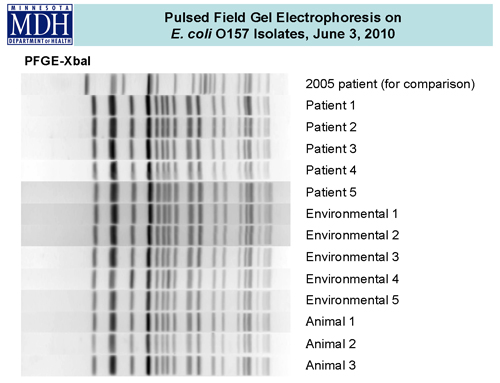
16.15 · Objective 3 — Antibiotic-resistant strains in the food supply
No slide teaches this objective. The deck’s objective slide lists it, but none of its 36 slides mentions antibiotic resistance, antibiotic use in food animals or resistant strains in food. Nothing is added here from outside the slides, and no quiz question asks it. If the recording covers it, the audio pass will say what was said; otherwise ask Dr. Fair whether it is examinable.
16.16 · What you can do: prevention
- Good handwashing with hot, soapy water.
- Wash fruits and vegetables.
- When in doubt, toss it out.
- When in doubt, toss it out. Leftover cooked chicken that has sat in the refrigerator for an unknown time should be tossed out rather than risk it, even if it smells normal: Listeria monocytogenes grows well at refrigerator temperatures.
- Clean kitchen surfaces and utensils with mild bleach cleaning solutions.
- When cooking meat, use a meat thermometer (165 °F) rather than guessing.
- Cutting board and knife materials; avoid cross-contamination of cutting boards and utensils.
- Proper use of disposable gloves in food service; hair coverings and food service attire; “ServSafe” training and certification.
- From the Bacillus cereus slide: keep hot foods hot and cold foods cold. From the viruses slide: handwashing and diaper hygiene, thorough cooking, clean drinking water.
16.17 Where the slides and current references differ
The quizzes key what the slides say (we are tested from the slides). These are the points where current references say something else; the recording may settle them.
- Bacillus cereus toxins (slide 28). The slide gives the diarrheal form a heat-stable toxin and the emetic form a heat-labile one. Standard references say the reverse: the emetic toxin (with rice) is the heat-stable one, and the diarrheal enterotoxin (with meat) is heat-labile. One quiz question asks this pairing, keyed as the slide says.
- The case and death figures (slide 9). “75 million cases per year worldwide” and “at least 5000 deaths” match older United States estimates rather than worldwide ones; World Health Organization estimates for the world are far larger. Not asked.
- Listeria as the “#1 cause of food-related deaths in the US” (slide 23). National estimates rank nontyphoidal Salmonella above Listeria for total deaths; Listeria has one of the highest death rates per case. She repeated the slide in the recording. Keyed as the slide says.
- 165 °F (slide 36). Food-safety agencies give 165 °F for poultry, leftovers and casseroles, and lower internal temperatures for other meats (160 °F for ground meat, 145 °F for whole cuts with a rest). Keyed as the slide says.
- Listeria at freezer temperatures (slide 23). The slide gives a growth range of 1 to 40 °C and also says it grows easily at freezer temperatures, which are below that range. In the recording she said “in your freezer Listeria can survive as well”: it survives freezing, as references say, and grows at refrigerator temperatures. The quizzes ask only the 1–40 °C range and refrigerator growth.
- The R-month rule (slide 29). The slide answers “maybe, maybe not”, and in the recording she said it is “not so much an issue today because of aquaculture”. Public-health advice still warns of a higher Vibrio risk from raw shellfish in the warm months. Keyed as the slide says (uncertain).
- The hepatitis vaccine (slide 33). The slide says there is a vaccine in case of suspected exposure without naming the virus. That fits hepatitis A; there is no licensed hepatitis E vaccine in the United States.
- PulseNet’s method (slide 34). The slide describes PulseNet with pulsed-field gel electrophoresis patterns, which is how it worked for decades; PulseNet has since moved to whole genome sequencing. The quizzes ask what the slide says.
- Names. The deck’s “S. enteriditis” is S. enteritidis; “parahemolyticus” is parahaemolyticus.
Source: Significant Microorganisms in Food Safety (PAJ5200.FoodSafety-micro.pptx), Slides 1–36, and the PAJ 5200 syllabus instructional objectives.
17 · Parasites of Medical Importance
Dr. Webster · Lecture 17 · 6 November 2026
Instructional Objectives
- Compare and contrast the morphology, medium, laboratory tests, biochemical reactions, diseases, clinical manifestations, methods of treatment, and prevention of parasites of medical importance.
- Describe the modes of transmission by which humans acquire parasites of medical importance.
About two hours with Dr. Webster in three parts (Jaxon’s recording): part 1, 46 minutes, from slide 9 to Leishmania; part 2, 48 minutes, from the apicomplexans (slide 55) to pinworm, then the break; part 3, 27 minutes, from hookworms to the arthropod vectors. Slides 1–8 were not recorded (the title, the objectives, the organism list and her summary tables). One transcript only: Notability made none, so quotes below are from a single machine transcription (misheard names are written correctly here). Every claim was checked against the deck; where the two differ, the slide is what this guide teaches.
The quizzes are weighted by the minutes she spent, stories taken out (about 13 minutes: her amebic dysentery on a cruise, a friend’s sleeping sickness, the hyena, the padlocked snail tank, the Food Network, the eye worm wound on a stick): malaria about 10½ minutes, the helminth hosts and four life cycles about 9, Entamoeba and Toxoplasma 6 each, Trypanosoma brucei 5, T. cruzi and Trichomonas about 4½ each, Naegleria and helminth pathology and diagnosis 4 each, Cryptosporidium 3, then 2½ or less for each of the rest.
| What was said | What it means for you |
|---|---|
| “Why do we have pathology for worms? This is something you should know. … This is an important thing.” [part 2, 37:25] | The one plain “you should know” of the lecture: 17.21, where helminth pathology comes from (feeding on and migrating through tissue, worms accumulating in organs and blocking them, toxic secretions) and what it does (organ swelling, hemorrhage, weight loss, anemia). Every quiz set asks it. |
| “Water treatment is the best prevention, water treatment is the best prevention.” [part 1, 12:02] | 17.3: Entamoeba’s prevention line on slide 23. |
| “Vector control is one of the best ways of controlling these hemoflagellate diseases”; “once again, vector control is the best way” (Chagas); “once again, vector control is what they do” (malaria). And treat early: Naegleria, T. brucei before the nervous system is involved, T. cruzi. [part 1, 18:31, 38:19, 43:07; part 2, 9:06] | 17.10, 17.11, 17.13: eliminate the tsetse fly, control the reduviid bug, mosquito control is key; 17.4, 17.10, 17.11: treatment must be early. |
| “One that I can almost guarantee that you will encounter in your clinical practice” (Trichomonas); “the one that you will almost surely see in your clinical life” (pinworm, “the scourge of the daycare center”). [part 1, 23:09; part 2, 44:36] | 17.7 and 17.24 (slide 94’s star: the most common worm disease of children in temperate zones). |
| Chagas disease: “the one that you are more likely to see in your clinical work … because of the migration of the vector. It’s coming further north as things get warmer.” Malaria: cases in Florida “where there was no travel involved whatsoever … So that’s why you might see this one.” [part 1, 32:28; part 2, 1:27] | 17.11 (slide 48’s star; every set asks it) and 17.13 (slide 62’s eight non-travel cases in Florida). The slides give vector migration as the reason for Chagas only. |
| “Pregnant women should never clean the litter box. So if you are with a patient who is pregnant and she has a cat, you tell her, get somebody else to clean the litter box.” [part 2, 13:54] | 17.14: transplacental transmission, a 33% chance. Every set asks it. |
| “This is the one that you will get going camping” (Giardia); Cryptosporidium, “the leading cause of recreational waterborne diseases, the swimming pools, the water parks”. [part 1, 27:31; part 2, 23:48] | 17.8 (her table: common in campers) and 17.16. |
| “It would not be a bad thing for you to remember this lovely picture” (the trypanosome blood smear); “I would not ask you to differentiate between the picture of cruzi and gambiense. So as long as you knew trypanosoma, I would be a happy camper.” [part 1, 35:52; 38:40] | 17.10’s slide 46 picture: know it as Trypanosoma. One quiz set shows it. |
| Trichinella: “You cannot cure it. You cannot cure it” once the larvae have encysted; “Do not eat your pork rare.” Flukes and tapeworms: “never eat freshwater fish as sushi”, “you get this theme of undercooked”, “cook your beef. Please, please.” [part 3, 5:00, 17:03, 18:01, 20:26] | 17.28, 17.35, 17.37: objective 2 for the meat- and fish-borne worms (17.41). |
| “That sui tells you the pig.” [part 2, 19:35] | 17.15: Sarcocystis suihominis comes from pigs, S. hominis from cattle. |
What she said not to memorize (taught in this guide, not asked in the quizzes): slide 13’s protozoa table and slide 14’s Table 23.2 (“a chart I am not asking you to memorize”, though she repeated that antiprotozoan drugs are few and toxic), the Naegleria case lists and statistics (slides 25–27) and treatment table (slide 30), the four hemoflagellate stage names (“I am not going to be asking about the names of these four stages”), Table 23.4 (slide 84, “it’s just got lots of worms in it”), Table 23.5 (slide 87) and Table 23.6 (slide 129); and, as in Lectures 10 and 14, “I’m not going to be asking you for specific treatments for the diseases”.
She corrected no slide. Slips: she said “brucei” once for T. cruzi, and “cycle B” for the fourth life-cycle pattern (D). On the beef tapeworm she backed slide 8 (“this is, of course, why you lose weight when you have a tapeworm”) while also giving slide 119’s “vague symptoms of abdominal pain and nausea” (17.42). She read slide 118 (humans the definitive host of tapeworms) and slide 124 (the dog the definitive host of Echinococcus) without reconciling them. She also taught Dirofilaria (17.33), which is not on the syllabus list.
17.1 · Objective 1 — Parasitology and the organisms at a glance
Parasitology is the study of eukaryotic parasites, protozoa and helminths. Parasites cause 20% of all infectious diseases. They are less prevalent in industrialized countries, and increasingly common in patients with human immunodeficiency virus infection and other immunocompromised patients (slide 9).
The neglected parasitic infections (slide 10)
The Centers for Disease Control and Prevention set priorities for public health action based on the number of people infected, the severity of illness and the ability to prevent and treat. Its list of neglected parasitic infections names five parasitic diseases:
| Neglected parasitic infection | Organism (from her table, slides 4–8) | Where in this guide |
|---|---|---|
| Chagas disease | Trypanosoma cruzi | 17.11 |
| Cysticercosis | Taenia solium (pork tapeworm) | The tapeworms, later in this section |
| Toxocariasis | Toxocara canis and Toxocara cati (dog and cat roundworm) | The tissue nematodes, later in this section |
| Toxoplasmosis | Toxoplasma gondii | 17.14 |
| Trichomoniasis | Trichomonas vaginalis | 17.7 |
The organism list (slide 3)
Slide 3 reproduces the syllabus’s Appendix 2 list of 33 organisms for this lecture (spellings corrected here; the slide’s spellings are in 17.42). The deck also teaches two coccidians that are not on the list, Sarcocystis (17.15) and Babesia (17.19).
| Protozoa (14) | Helminths (19) |
|---|---|
| Entamoeba histolytica Naegleria fowleri Acanthamoeba Balantidium coli Giardia lamblia Trichomonas vaginalis Trypanosoma brucei Trypanosoma cruzi Leishmania sp. Plasmodium sp. Toxoplasma gondii Cryptosporidium sp. Isospora belli Cyclospora cayetanensis |
Trichuris trichiura Ascaris lumbricoides Enterobius vermicularis Necator americanus Angiostrongylus cantonensis Strongyloides stercoralis Trichinella spiralis Wuchereria bancrofti Onchocerca volvulus Loa loa Schistosoma sp. Toxocara canis Toxocara cati Opisthorchis sinensis Fasciola hepatica Paragonimus westermani Taenia saginata Taenia solium Echinococcus |
Her summary table: organism, disease, other information (slides 4–8)
Slides 4–8 are pictures of one table she built, with the columns Organism, Disease, Other information and Photo. It is transcribed below cell by cell, one table per slide, with the slide picture above each. Organism names are spelled correctly and abbreviations are written out (17.42 lists the slide’s own spellings); an empty cell on the slide is shown as —. Use it as the one-page review: every protozoan row is taught in full in 17.3–17.19, every helminth row later in this section.
| Organism | Disease | Other information | Photo |
|---|---|---|---|
| Entamoeba histolytica | Amebiasis—amebic dysentery Intestinal amebiasis Extraintestinal amebiasis | Fecal oral route | — |
| Naegleria fowleri | Primary Acute Meningoencephalitis | While only about 200 cases reported worldwide—is prevalent in Florida’s freshwater lakes | Photo: purple-stained trophozoites (the picture on slide 28) |
| Acanthamoeba | Granulomatous Amebic Encephalitis | Found in contact lens wearers | — |
| Balantidium coli | Balantidiosis | Pigs and cattle as alternate hosts | — |
| Giardia lamblia | Giardiasis | Common in campers | Photo: two oval stained cysts (the picture on slide 40) |
| Trichomonas vaginalis | Trichomoniasis | Most common curable sexually transmitted disease in young women foul-smelling, green-to-yellow discharge; vulvitis; cervicitis; urinary frequency and pain | Photo: two pear-shaped flagellates (the picture on slide 38) |
| Organism | Disease | Other information | Photo |
|---|---|---|---|
| Trypanosoma brucei | African sleeping sickness | Tsetse fly as vector | Photo, captioned “Blood smear with flagellates swimming between cells” |
| Trypanosoma cruzi | Chagas disease | Reduviid (kissing) bug is vector and was a tropical disorder but it is becoming an issue in Southern United States as vector expands its range | — |
| Leishmania sp. | Leishmaniasis, Baghdad boil, Espundia, Kala azar | Dog alternate host, sand fly is vector | — |
| Plasmodium sp. | Malaria | Anopheles Mosquito is the vector. Malaise, fatigue, aches, nausea Regular episodes of chills-fever-sweating | “Plasmodium organism shown as ring form inside erythrocytes”, with the photo (the picture on slide 60) |
| Toxoplasma gondii | Toxoplasmosis | Danger to fetus—pregnant women should not clean catbox due to danger of transplacental transmission. Danger of central nervous system involvement for acquired immunodeficiency syndrome patients | — |
| Organism | Disease | Other information | Photo |
|---|---|---|---|
| Cryptosporidium sp. | Gastroenteritis | Major outbreak in Wisconsin from unpurified water—agent for bioterrorism | — |
| Isospora belli | — | — | — |
| Cyclospora cayetanensis | Cyclosporiasis | — | — |
| Organism | Disease | Other information | Photo |
|---|---|---|---|
| Trichuris trichiura | Whipworm | — | — |
| Ascaris lumbricoides | Roundworm | abdominal pain and intestinal obstruction | Photos: an adult worm and two eggs |
| Enterobius vermicularis | Pinworm | Very common in daycare situations—transmission by direct contact and fomites -- Diagnosed with Scotch tape test | — |
| Necator americanus | Hookworm | Transmitted through skin on soles of feet. causes pneumonia, nausea, vomiting, cramps, and bloody diarrhea | — |
| Organism | Disease | Other information | Photo |
|---|---|---|---|
| Angiostrongylus cantonensis | Eosinophilic meningitis (Rat lungworm) | Snails are intermediate hosts acquired by eating larvae in snails or contaminated water or vegetables | Photo, captioned “Adult female worm of Angiostrongylus cantonensis with characteristic barber-pole appearance (anterior end of worm is to the top). Scale bar is 1 mm.” |
| Strongyloides stercoralis | Threadworm | — | — |
| Trichinella spiralis | Trichinosis | acquired through ingestion of undercooked pork--encystment in muscle will cause symptoms | Photo: a muscle section |
| Organism | Disease | Other Information | Photo |
|---|---|---|---|
| Wuchereria bancrofti | Bancroftian Filariasis--Elephantiasis | Spread by mosquito | — |
| Onchocerca volvulus | River Blindness | Spread by black flies Bacterial coinfection | — |
| Loa loa | Eye Worm | Spread by fly bite | — |
| Schistosoma sp. | Schistosomiasis | Blood fluke with alternate host of a freshwater snail. Individuals acquire by contact with water in which the snail lives | — |
| Toxocara canis and cati | Toxocariasis | Dog and cat roundworm—ingestion of feces or undercooked alternate host (waterfowl) | — |
| Opisthorchis sinensis | Chinese Liver Fluke | Cycles between humans and fish or snails—don’t eat freshwater sushi | — |
| Fasciola hepatica | Liver Fluke | — | — |
| Paragonimus westermani | Lung Fluke | — | — |
| Taenia saginata | Taeniasis | Beef tapeworm—Absorbs food directly through cuticle; reproduces via proglottids. Causes weight loss and wasting in host | Photo (pink, stained) |
| Taenia solium | Taeniasis and Cysticercosis | Pork tapeworm—Taeniasis if ingest undercooked meat; Cysticercosis if ingest embryonated eggs—migrates to musculature or brain producing lesions | Photo |
| Echinococcus | Echinococcosis and Hydatid Disease | Tiny tapeworm Acquired from dogs; produces hydatid cysts which may need to be surgically removed. Alveolar form causes parasitic tumors | Photo (red, surgical) |
17.2 · Objective 1 — Protozoa: groups, life cycles and drugs
Slide 11 opens the protozoan parasites. Typical protozoan pathogens are single-celled, animal-like microbes, most having some form of motility. There are an estimated 100,000 species, of which approximately 25 are important pathogens. In 2014 the World Health Organization stressed the serious and increasing threat of vector-borne parasitic diseases with the slogan “Small bite, big threat.”
| Group (slide 12) | How it moves (the deck’s own words) | Organisms in this lecture |
|---|---|---|
| Ameboid (the amebas; slide 12 writes “Amoeboid”) | A trophozoite “motile by means of pseudopods” (slide 16) | Entamoeba histolytica, Naegleria fowleri, Acanthamoeba |
| Ciliated | Cilia tufts on the trophozoite (slide 34 drawing) | Balantidium coli, “an intestinal ciliate” |
| Flagellated | Flagella, and in Trichomonas an undulating membrane (slide 36) | Trichomonas, Giardia; the hemoflagellates Trypanosoma and Leishmania |
| Apicomplexa | Lack locomotor organelles in the trophozoite state (slide 55) | Plasmodium, Toxoplasma, Cryptosporidium; with Sarcocystis, Isospora, Cyclospora and Babesia among the coccidians (slide 63) |
Life cycles vary.
- Most propagate by simple asexual cell division of the active feeding cell, the trophozoite.
- Many undergo formation of a cyst.
- Others have a complex life cycle that includes asexual and sexual phases.
Major pathogenic protozoa, infections and primary sources (slide 13)
| Protozoan/Disease* | Reservoir/Source |
|---|---|
| Ameboid Protozoa | |
| Amebiasis: Entamoeba histolytica | Human/water and food |
| Brain infection: Naegleria, Acanthamoeba | Free-living in water |
| Ciliated Protozoa | |
| Balantidiosis: Balantidium coli | Zoonotic in pigs |
| Flagellated Protozoa | |
| Giardiasis: Giardia lamblia | Zoonotic/water and food |
| Trichomoniasis: Trichomonas vaginalis | Human |
| Hemoflagellates | |
| Trypanosomiasis: Trypanosoma brucei, T. cruzi | Zoonotic/vector-borne |
| Leishmaniasis: Leishmania donovani, L. tropica, L. brasiliensis | Zoonotic/vector-borne |
| Apicomplexan Protozoa | |
| Malaria: Plasmodium vivax, P. falciparum, P. malariae | Human/vector-borne |
| Toxoplasmosis: Toxoplasma gondii | Zoonotic/vector-borne |
| Cryptosporidiosis: Cryptosporidium | Free-living/water, food |
| Isosporosis: Isospora belli | Dogs, other mammals |
| Cyclosporiasis: Cyclospora cayetanensis | Water/fresh produce |
The asterisk’s footnote is not on the slide. Two cells disagree with later slides: this table lists three Plasmodium species where slide 56 lists four, and it calls toxoplasmosis vector-borne where slides 64–65 describe ingestion and transplacental spread (17.42).
Antiprotozoan drugs (slide 14)
- Relatively few in comparison with antibacterial agents ★ Starred on the slide.
- Work against eukaryotic cells (the parasite’s cells are eukaryotic, like ours).
- Toxicity problems, severe side effects ★ Starred on the slide.
| Infectious Agent | Typical Infection | Drugs of Choice | Mechanism of Drug Action |
|---|---|---|---|
| Entamoeba histolytica | Amebiasis | Metronidazole* | Specific for anaerobes; inhibits deoxyribonucleic acid repair |
| Iodoquinol | Acts locally in intestine; unknown mode of action | ||
| Chloroquine | Toxic to the parasite by interfering with hemoglobin metabolism in the food vacuole | ||
| Giardia lamblia | Giardiasis | Hetronidazole (as printed: metronidazole, the drug slide 41 names) | See above; selectively blocks parasite metabolism |
| Quinacrine | Is a dye that inserts into deoxyribonucleic acid and disrupts its functions | ||
| Plasmodium | Malaria | Chloroquine | See above |
| Quinine | Same as chloroquine, mefloquine | ||
| Miefloquine (as printed: mefloquine) | Interferes with metabolism and use of hemoglobin | ||
| Artemether | Redox reagent; produces reactive oxygen radicals | ||
| Toxoplasma gondii | Toxoplasmosis | Pyrimethamine Sulfadiazine | Together with sulfadiazine, inhibits enzymes in the pathway for folate synthesis |
| Trichomonas vaginalis | Trichomoniasis | Metronidazole | See above |
| Trypanosoma brucei | Sleeping sickness | Suramin** | Inhibits NADH (reduced nicotinamide adenine dinucleotide) oxidation; blocks aerobic respiration |
| Pentamidine | Blocks nucleic acid synthesis | ||
| Eflomithine (as printed: eflornithine, as slide 47 spells it) | Inhibits deamination of amino acids | ||
| Melarsoprol | Arsenic-based, very toxic, inhibits many enzymes | ||
| Trypanosoma cruzi | Chagas disease | Benzonidazole | Interferes with protein synthesis and microtubule formation |
| Nifurtimox | Breaks up deoxyribonucleic acid and creates superoxide radicals |
* Metronidazole is also called flagyl. It is selectively toxic to anaerobic protozoa
like Entamoeba, Giardia, and Trichomonas, which lack mitochondria.
** Available in the United States only from the Drug Service of the Centers for Disease Control and
Prevention.
17.3 · Objective 1 — Entamoeba histolytica and amebiasis
Slide 15 opens the infective amebas: Entamoeba histolytica (this section), Naegleria fowleri (17.4) and Acanthamoeba (17.5).
Morphology and hosts
- Entamoeba histolytica alternates between a large trophozoite, motile by means of pseudopods, and a smaller nonmotile cyst.
- The trophozoite has a large nucleus and lacks most other organelles.
- The name: histolytica = histo, tissue + lytica, lysis (slide 19).
- Humans are the primary hosts. It is ingested.
- It is carried by 10% of the world population, asymptomatically, and kills 100,000 people per year.
How people acquire it, and where
- By the fecal oral route (her table, slide 4): cysts are swallowed. The reservoir and source is human, water and food (slide 13).
- Prevalent in tropical countries; related to fertilization practices and sewage treatment.
- Epidemics sometimes occur in concentrated populations where water supplies are polluted: prisons, hospitals, juvenile care institutions.
- Sometimes sexually transmitted.
Life cycle (slides 18–19)
Cysts are swallowed and arrive at the small intestine; the alkaline pH and digestive juices stimulate the cysts to release 4 trophozoites. The trophozoites attach, multiply, actively move about and feed. Cysts are produced after the active phase of disease (slide 23) and leave in the feces.
Disease and clinical manifestations
Asymptomatic in 90% of patients; severity is related to the strain, the amount of inoculum and host conditions. Amebiasis takes two forms, intestinal and extraintestinal (her table names the disease “amebiasis—amebic dysentery”).
| Intestinal amebiasis (slide 20) | Extraintestinal amebiasis (slide 21) | |
|---|---|---|
| Where | Cecum, appendix, colon, rectum | Amebas invade the viscera of the peritoneal cavity; most commonly the liver; can also infect the lungs, and the spleen, adrenals, kidneys, skin and brain |
| What it does | The ameba may secrete enzymes that dissolve tissues and penetrate deeper layers of the mucosa | Produces abscesses with active trophozoites: amebic hepatitis; in the lungs, pulmonary amebiasis |
| Signs | Dysentery, abdominal pain, fever, diarrhea and weight loss | Abscess (slide 22: an amebic abscess perforating the abdominal wall) |
| Danger | Life-threatening: hemorrhage, perforation, appendicitis, and tumorlike growths, amebomas | Severe forms of disease have a 10% fatality rate |
Diagnosis, treatment and prevention (slide 23)
- Diagnosis: the symptoms are similar to bacillary dysentery, so diagnosis rests on examination of a fecal smear, enzyme-linked immunosorbent assay with monoclonal antibodies, and the history.
- Treatment: iodoquinol acts in feces (Table 23.2: “acts locally in intestine”); metronidazole (Flagyl), dehydroemetine and chloroquine act in tissues; plus antidiarrheals and fluid and electrolyte replacement.
- Prevention: water treatment; a vaccine is under development. ★ Dr. Webster said it twice: “water treatment is the best prevention”.
17.4 · Objective 1 — Naegleria fowleri and amebic meningoencephalitis
Amebic meningoencephalitis is caused by Naegleria fowleri and Acanthamoeba (slide 24). Both ordinarily inhabit standing water with a high bacterial count: hot springs, lakes and streams, and unchlorinated swimming pools. Slide 13 lists both as “free-living in water”, causing brain infection. It is a relatively rare disease—but (the slide breaks off there, and the case slides follow).
Morphology
The slides show Naegleria in three stages: a cyst stage, a trophozoite stage and a flagellated stage (slide 25’s picture). It is the trophozoite that burrows through the nasal mucosa (slide 29).
Cases (slides 25–27)
- 1962–2023: 164 cases in the United States, 4 survivors.
- 2 cases in Louisiana from neti pots; 1 case in Louisiana from tap water in a home water slide.
- Summer 2012, South Carolina, Lake Marion; 2019, a North Carolina water park; 2020, cases in Florida and Texas; 2021, cases in Texas and California.
- 2022: 3 confirmed cases in Iowa, Nebraska and Arizona. Most cases occur in the southern United States, but rising temperatures have created favorable environments farther north.
- 2023: 7 cases in California, Florida, Indiana, Georgia, Nevada, Texas and Arkansas. 2024: Texas (nasal rinsing from tap water in a recreational vehicle tank). 2025: Missouri (water skiing) and South Carolina (a pediatric case). 2026: Louisiana (swimming in Lake Claiborne).
- The Centers for Disease Control and Prevention estimates more are infected than reported: 16 deaths per year, equally distributed between males and females.
| Metric | Figure |
|---|---|
| Total confirmed United States primary amebic meningoencephalitis cases, 1937–2025 (Centers for Disease Control and Prevention, updated March 2026) | 180 |
| Total United States primary amebic meningoencephalitis cases by known state of exposure | 173 |
| Cases with unknown location of exposure | 7 |
| Typical annual case count in the United States | Fewer than 10 |
| Historical fatality rate | More than 97% |
| Known United States survivors (of 167 cases, 1962–2022/2025 window) | 4 |
| States with the most confirmed primary amebic meningoencephalitis cases | Texas and Florida |
| Age/sex group with the highest case count | Males aged 10–14 (45 cases) |
| Share of cases occurring in July and August | 73% |
| Estimated true annual United States case burden (Centers for Disease Control and Prevention 2017 research letter) | ~16 per year (70–80% may go undiagnosed) |
| Metric | Figure |
|---|---|
| Historical case fatality rate | >97% |
| Known United States survivors (1962–2025 window) | 4 (out of 167 cases) |
| Survival rate implied by known survivors | ~2.4% |
| Global confirmed cases through 2018 | 381 |
| Global known survivors through 2018 | 7 (1.8%) |
| Pediatric survival rate (global systematic review, 2000–2024) | 22% |
| Adult survival rate (global systematic review, 2000–2024) | 7.1% |
The take-away from the numbers: rare, nearly always fatal (more than 97%), in summer, mostly in the South. The counts differ from slide to slide because each uses a different window (17.42).
How people acquire it (slide 28)
- Most cases are children and young adults, after exposure to freshwater lakes and streams.
- Acquired through nasal contact with water: diving, waterskiing, jetskiing; a recent case in an indoor surfing facility; and rinsing sinuses, even with tap water.
Primary amebic meningoencephalitis (slide 29)
Slide 29’s title calls the disease “Primary Acute Meningoencephalitis”, as does her table; slides 24 and 30 call it primary amebic meningoencephalitis (17.42). Same disease.
- The trophozoite burrows through the nasal mucosa and travels into the brain through the olfactory nerve.
- Symptoms: headache, respiratory symptoms, fever, vomiting, stiff neck.
- Rapid destruction of the brain and spinal cord: confusion, lack of balance, hallucinations, coma, death in 3–7 days.
- Diagnosis: the slides give no laboratory test for Naegleria.
- Prevention: over 46% of lakes in Florida have N. fowleri; don’t swim or dive in unchlorinated water; use nose plugs.
- Treatment must be early. ★ Dr. Webster: “you have to treat it early if you want to have any chance whatsoever”.
| Medication (slide 30) | Route |
|---|---|
| Amphotericin B | Intravenous |
| Amphotericin B | Intrathecal |
| Azithromycin | Intravenous or by mouth |
| Dexamethasone | Intravenous |
| Fluconazole | Intravenous or by mouth |
| Miltefosine | By mouth |
| Rifampin | Intravenous or by mouth |
17.5 · Objective 1 — Acanthamoeba: keratitis and granulomatous amebic encephalitis
Acanthamoeba species are distributed worldwide and found in freshwater lakes, hot tubs and swimming pools (slide 31); slide 13 lists them as free-living in water. Slide 31 separates two diseases:
- Amebic keratitis: in contact lens wearers; eye pain, redness, irritation; does not typically disseminate.
- Granulomatous amebic encephalitis: the ameba typically enters through a break in the skin or through the nasal passages; symptoms of meningitis, but a longer progression; survival rate only 2–3%.
- Treatment: amphotericin B, rifampicin, trimethoprim-sulfamethoxazole, ketoconazole, fluconazole, sulfadiazine and albendazole are only tentatively successful.
Her table (slide 4) compresses this into one row, “Granulomatous Amebic Encephalitis, found in contact lens wearers”; slide 31 keeps the contact lens with the keratitis (17.42).
The two free-living amebas side by side
| Naegleria fowleri (slides 24–30) | Acanthamoeba (slides 31–32) | |
|---|---|---|
| Where it lives | Standing water with a high bacterial count: hot springs, lakes and streams, unchlorinated pools; over 46% of Florida lakes | Worldwide: freshwater lakes, hot tubs, swimming pools; soil and water (slide 32) |
| How it gets in | Nasal contact with water (diving, waterskiing, jetskiing, sinus rinsing with tap water); trophozoite crosses the nasal mucosa and climbs the olfactory nerve | The eye (keratitis, contact lens wearers); a break in the skin or the nasal passages (encephalitis) |
| Disease | Primary amebic meningoencephalitis, mostly children and young adults | Amebic keratitis; granulomatous amebic encephalitis and disseminated disease in compromised immune systems |
| Course | Rapid: death in 3–7 days; fatality more than 97% | Meningitis symptoms with a longer progression; survival only 2–3% |
| Treatment | Must be early: amphotericin B (intravenous and intrathecal), azithromycin, dexamethasone, fluconazole, miltefosine, rifampin | Amphotericin B, rifampicin, trimethoprim-sulfamethoxazole, ketoconazole, fluconazole, sulfadiazine, albendazole: only tentatively successful |
| Prevention | No swimming or diving in unchlorinated water; nose plugs | None given on the slides |
17.6 · Objective 1 — Balantidium coli, the intestinal ciliate
- An occupant of the intestines of domestic animals such as pigs and cattle (slide 13: “zoonotic in pigs”; her table: pigs and cattle as alternate hosts).
- Acquired by ingesting cyst-containing food or water.
- The trophozoite erodes the intestine and elicits intestinal symptoms: persistent diarrhea, occasionally dysentery, abdominal pain and weight loss. The disease is balantidiosis.
- Healthy humans are resistant. It rarely penetrates the intestine or enters the blood.
- Treatment: tetracycline, iodoquinol, nitrimidazine or metronidazole.
- The slides give no diagnostic test or prevention for Balantidium; slide 34 shows what it looks like under the microscope.
17.7 · Objective 1 — Trichomonas vaginalis and trichomoniasis
Slide 35 opens the flagellates: Trichomonas, Giardia (17.8) and the hemoflagellates (17.9–17.12).
Morphology (slide 36)
- Trichomonads are small and pear-shaped, with 4 anterior flagella and an undulating membrane.
- They exist only in the trophozoite form: no cyst.
- Three infect humans: T. vaginalis, T. tenax and T. hominis.
Where it lives and how people acquire it
- The reservoir is the human urogenital tract (slide 13: “human”).
- It is a strict parasite and cannot survive long outside the host: it is sexually transmitted. Trichomonas vaginalis causes the sexually transmitted disease trichomoniasis, the most common curable sexually transmitted disease in young, sexually active women. ★ Dr. Webster: “one that I can almost guarantee that you will encounter in your clinical practice”.
- 7.4–8 million cases a year in North America, 124 million worldwide. 60–70% of the infected are asymptomatic.
Disease (slides 37–38)
| Women | Men |
|---|---|
| Foul-smelling, green-to-yellow discharge; vulvitis; cervicitis; urinary frequency and pain | Urethritis; a thin, milky discharge; occasionally prostate infection |
- Incubation period: 4–28 days.
- It may predispose to other sexually transmitted diseases, raises cervical cancer risk 2–3 times, and increases human immunodeficiency virus transmission by 50%.
Diagnosis and treatment (slide 38)
- Diagnosis by microscopic analysis of a vaginal smear.
- Treatment: metronidazole and tinidazole; 4.3% of Trichomonas are resistant to the antimicrobials.
17.8 · Objective 1 — Giardia lamblia and giardiasis
Morphology (slide 39)
- A pathogenic flagellate with a unique symmetrical heart shape and a concave ventral surface that acts like a suction cup.
- Cysts are small, compact and multinucleate.
Reservoirs and how people acquire it
- Reservoirs include beavers, cattle, coyotes, cats and humans (slide 13: zoonotic, water and food).
- Cysts can survive for 2 months in the environment.
- Usually ingested with water and food; the infectious dose is 10 to 100 cysts. Her table: common in campers. ★ Dr. Webster: “this is the one that you will get going camping”.
Disease, diagnosis, treatment, prevention (slide 41)
- Cysts enter the duodenum, germinate, and travel to the jejunum to feed and multiply.
- Giardiasis: diarrhea, abdominal pain.
- Diagnosis: microscopic diagnosis is difficult because the organism is shed in feces intermittently; polymerase chain reaction analysis.
- Treatment: quinacrine or metronidazole, or nitazoxanide in children.
- The agent is killed by boiling, ozone and iodine.
17.9 · Objective 1 — The hemoflagellates and their stages
Hemoflagellates are vector-borne blood parasites (slide 42):
- Obligate parasites that live in the blood and tissues of the human host.
- They cause life-threatening and debilitating zoonoses.
- They are spread in specific tropical regions by blood-sucking insects that serve as intermediate hosts.
- They have complicated life cycles and undergo morphological changes, and are categorized according to their cellular and infective stages.
| Stage | Slide 42’s definition |
|---|---|
| Amastigote | The form lacking a free flagellum |
| Promastigote | The stage bearing a single, free, anterior flagellum |
| Epimastigote | The flagellate stage |
| Trypomastigote | The large, fully formed stage |
| Genus/Species | Amastigote | Promastigote | Epimastigote | Trypomastigote |
|---|---|---|---|---|
| Leishmania | Intracellular in human macrophages | Found in sand fly gut; infective to humans | Does not occur | Does not occur |
| Trypanosoma brucei | Does not occur | Does not occur | Present in salivary gland of tsetse fly | In biting mouthparts of tsetse fly; infective to humans |
| Trypanosoma cruzi | Intracellular in human macrophages, liver, heart, spleen | Occurs | Present in gut of reduviid (kissing) bug | In feces of reduviid bug; transferred to humans |
17.10 · Objective 1 — Trypanosoma brucei and African sleeping sickness
Trypanosoma species are distinguished by their infective stage: the trypomastigote, an elongate, spindle-shaped cell with tapered ends and eel-like motility. There are two types of trypanosomiasis (slide 44): T. brucei, African sleeping sickness; and T. cruzi, Chagas disease, endemic to Central and South America (17.11).
Vector, reservoir and the two subspecies (slide 45)
- Spread by tsetse flies; harbored by reservoir mammals.
- Two variants of disease, caused by two subspecies:
| T. b. gambiense | T. b. rhodesiense | |
|---|---|---|
| Strain | Gambian strain | Rhodesian strain |
| Where | West Africa | East Africa |
| Course (slide 46) | Chronic, with brain symptoms years later | Acute, with brain symptoms within 3–4 weeks |
How people acquire it, and the disease (slides 46–47)
- The biting fly inoculates the skin with trypomastigotes, which develops a primary chancre.
- The organism migrates into the lymphatics and disseminates in the blood.
- It evades the immune response by antigenic variation: over 100 different antigens.
- It multiplies in the blood and damages the spleen, lymph nodes and brain.
- Early symptoms: fever, enlarged spleen, swollen lymph nodes and joint pain.
- As it moves to the central nervous system: personality and behavioral changes, then sleep disturbances, tremors, seizures, paralysis and coma.
Diagnosis, treatment and control (slide 47)
- Trypanosomes are readily demonstrated in blood, spinal fluid or lymph nodes.
- The card agglutination test for trypanosomes gives a rapid diagnosis.
- Treatment before neurological involvement: melarsoprol, suramin, eflornithine (Table 23.2 adds pentamidine; suramin is available in the United States only from the Centers for Disease Control and Prevention).
- Control involves eliminating the tsetse fly. ★ Dr. Webster: “vector control is one of the best ways of controlling these hemoflagellate diseases”.
17.11 · Objective 1 — Trypanosoma cruzi and Chagas disease
- T. cruzi causes Chagas disease, or American trypanosomiasis.
- Millions of cases in Latin America, but it is becoming more of an issue in the Southern United States: vector migration ★ Starred on the slide. Dr. Webster: it is the one “you are more likely to see in your clinical work”, “because of the migration of the vector. It’s coming further north as things get warmer.” Her table says the same: it “was a tropical disorder but it is becoming an issue in Southern [United States] as vector expands its range”.
- The National Institutes of Health estimates 300,000 infected in the United States, including 57,000 cardiomyopathy patients and 43,000 women of reproductive age, with up to 108 congenital infections per year.
- It is now considered by many to be endemic in the United States.
The vector and how people acquire it (slide 49)
- The reduviid bug (kissing bug) is the vector.
- Infection occurs when bug feces is inoculated into a cutaneous portal.
- It may also be transmitted congenitally, through transfusions, organ transplants, or by ingestion of foodstuffs contaminated by triatomine urine or feces; the slide adds, in parentheses, that this manner of transmission typically results in more severe cases and higher mortality.
Disease (slides 49 and 51)
- A local lesion: Romaña’s sign, also called a chagoma, a swelling of the eyelid with conjunctivitis; with fever and swelling of the lymph nodes, spleen and liver.
- The heart muscle and large intestine harbor masses of amastigotes.
- Chronic inflammation occurs in the organs, especially the heart and brain; Chagas accounts for 30–40% of heart disease in endemic regions.
Treatment and control
- Treatment: nifurtimox and benznidazole (spelled “benzonidazole” on the slides), which must be administered early.
- Control is through control of the vector (★ Dr. Webster: “once again, vector control is the best way to control this particular organism”); a vaccine is under development (slide 51).
- Diagnosis: the slides give no test; slide 43 places the trypomastigote in the bug’s feces and the amastigote inside human macrophages, liver, heart and spleen.
The two trypanosomes side by side
| Trypanosoma brucei | Trypanosoma cruzi | |
|---|---|---|
| Disease | African sleeping sickness | Chagas disease (American trypanosomiasis) |
| Where | Africa: gambiense West, rhodesiense East | Central and South America; spreading into the Southern United States (vector migration) |
| Vector | Tsetse fly | Reduviid (kissing) bug |
| How it enters | Fly’s bite inoculates trypomastigotes (saliva); primary chancre | Bug’s feces inoculated into a cutaneous portal; also congenital, transfusion, transplant, contaminated food |
| Target | Blood, lymph nodes, spleen, then brain (sleep disturbances, coma) | Heart muscle and large intestine (amastigotes); heart and brain inflammation |
| Sign to know | Primary chancre; antigenic variation | Romaña’s sign (chagoma) |
| Treatment | Melarsoprol, suramin, eflornithine (pentamidine in Table 23.2) | Nifurtimox, benznidazole: early |
| Control | Eliminate the tsetse fly | Control the vector; vaccine under development |
Controlling the insect vector controls both trypanosome diseases. African sleeping sickness is spread by tsetse flies, and its control involves eliminating the tsetse fly. Chagas disease is spread by the reduviid bug, and its control is through control of the vector; a Chagas vaccine is still under development.
17.12 · Objective 1 — Leishmania and leishmaniasis
- Leishmaniasis is a zoonosis transmitted among mammalian hosts by female sand flies that require a blood meal to produce eggs.
- Endemic to equatorial regions; the alternate hosts are dogs (her table: dog alternate host, sand fly is vector).
- 98 countries affected, a global prevalence of 12 million cases and 2–2.5 million new cases a year.
- Species named on slide 13: Leishmania donovani, L. tropica, L. brasiliensis.
How people acquire it (slide 52)
Promastigotes are injected with the sand fly bite, convert to amastigotes and multiply. If the macrophage does not migrate, the infection is localized; it is systemic if the macrophage migrates.
The three forms of disease (slide 53)
| Form | What the slide says |
|---|---|
| Cutaneous: oriental sore, Baghdad boil | A localized ulcerated sore |
| Espundia | Skin and mucous membrane infection of the head; a chronic infection which occurs after cutaneous disease |
| Systemic (visceral) | High intermittent fever; weight loss; enlarged spleen, liver and lymph nodes. Kala azar is the most severe form, and fatal if untreated |
- Treatment: pentavalent antimony, pentamidine, amphotericin B.
- Co-infection of leishmaniasis and malaria is an increasing issue and may make diagnosis difficult.
17.13 · Objective 1 — Plasmodium and malaria
The apicomplexan parasites (slide 55)
- Sporozoans that lack locomotor organelles in the trophozoite state.
- They alternate between sexual and asexual phases and between different animal hosts.
- Most form specialized infective bodies that are transmitted by arthropod vectors, food, water or other means: Plasmodium, Toxoplasma, Cryptosporidium.
Plasmodium, the agent of malaria (slides 56–57)
- Malaria is the dominant protozoan disease: it threatens 40% of the world’s population each year.
- Plasmodium is an obligate intracellular sporozoan.
- Four species (slide 56): P. malariae, P. vivax, P. falciparum and P. ovale (slide 13 lists only the first three; 17.42).
- The female Anopheles mosquito is the primary vector; malaria also spreads by blood transfusions and mother to fetus.
- 300–500 million new cases each year (90% in Africa); 2 million deaths each year; 1,000–2,000 cases a year in the United States.
Life cycle: two distinct phases (slides 58–59)
| Phase | Where | What happens |
|---|---|---|
| Asexual phase | Human host | Exoerythrocytic phase: the infected female mosquito injects the asexual sporozoite, which localizes in the liver; it undergoes schizogony, generating numerous merozoites that enter the circulation in 5–16 days, depending on the species |
| Erythrocytic phase: merozoites attach to and enter red blood cells, convert to circular ring trophozoites and multiply; the red cell bursts, releasing merozoites | ||
| Gametocytic phase: merozoites differentiate into gametes, which are now in the blood of the human host | ||
| Sexual phase | Female Anopheles mosquito | The mosquito draws infected red blood cells; gametes fertilize, forming a diploid cell, which forms sporozoites in the stomach; the sporozoites lodge in the salivary glands, available to infect a human host |
Disease and diagnosis (slide 60)
- 10–16 day incubation period.
- Malaise, fatigue, aches, nausea, then regular episodes of chills-fever-sweating.
- Symptoms occur at 48–72 hour intervals as red blood cells rupture; the interval depends on the species.
- Complications: anemia, and organ enlargement of the spleen, liver and kidneys.
- P. falciparum is the most malignant type, with the highest death rate in children.
- Diagnosis by the presence of trophozoites in red blood cells, and by symptoms.
Resistance, treatment and prevention (slides 61–62)
- Some populations are naturally resistant: sickle cell trait.
- Increasing drug resistance.
- Most therapy is based on quinine, which prevents the parasite from processing hemoglobin in its food vacuoles.
- Therapy is chloroquine, mefloquine, artemether (sometimes in combination).
- Mosquito control is key. ★ Dr. Webster: “once again, vector control is what they do”.
- United States cases: 2022, 1,620 (Florida 48); 2023, 2,120 (Florida 58, with 8 non-travel cases of malaria in Florida); 2024, 1,576 (Florida 57). ★ Dr. Webster: locally acquired cases in Florida, with no travel, “so that’s why you might see this one”.
- A vaccine has just been approved by the World Health Organization for children. Its challenges: a complex regimen (3 doses before the rainy season, then booster doses before later rainy seasons); getting the vaccine to the areas; cost of vaccine and distribution, $325 million a year; and only about 30% effectiveness.
17.14 · Objective 1 — Toxoplasma gondii and toxoplasmosis
The coccidian parasites (slide 63)
Coccidians are zoonotic in domestic animals and birds and exist in stages including dormant oocysts and pseudocysts. The examples: Toxoplasma (this section), Sarcocystis (17.15), Cryptosporidium (17.16), Isospora (17.17), Cyclospora (17.18) and Babesia (17.19); the end of 17.19 sets them side by side.
The organism and how people acquire it (slides 64–65)
- An intracellular apicomplexan parasite with an extensive distribution, capable of infecting virtually all warm-blooded animals.
- Seroprevalence indicates that approximately one third of the human population worldwide has been exposed.
- It lives naturally in cats, which harbor oocysts in the gastrointestinal tract, released through feces; slide 70 calls the cat the feline definitive host.
- Acquired by ingesting raw meats or substances contaminated by cat feces.
- Transplacental transmission to the fetus when a pregnant woman has toxoplasmosis: 33% chance of transmission. Her table: pregnant women should not clean the cat box because of the danger of transplacental transmission. ★ Dr. Webster: “if you are with a patient who is pregnant and she has a cat, you tell her, get somebody else to clean the litter box”.
Disease
- Most cases go unnoticed, with mild symptoms: sore throat, fever, enlarged lymph nodes.
- Serious complications in immunocompromised individuals, who can suffer brain and heart damage: toxoplasma encephalitis (her table: danger of central nervous system involvement for patients with acquired immunodeficiency syndrome).
- Congenital: spontaneous abortion, stillbirth, or a spectrum of severe neurological and ocular manifestations in the newborn, including hydrocephalus, intracranial calcifications and chorioretinitis.
Diagnosis, treatment and vaccines (slide 65)
- Diagnosed by serological tests, culture, histological analysis.
- Treatment: pyrimethamine and sulfadiazine, long-term administration (Table 23.2: together they inhibit enzymes in the pathway for folate synthesis).
- Vaccine development is in progress, but hampered by the genetic diversity of T. gondii strains, the complexity of a life cycle with many different stages, and the need to develop a robust and balanced TH1 (T helper 1) cellular immune response. A promising candidate is a genetically engineered live attenuated strain with a crucial transcription factor blocked.
Toxoplasmosis and mental disorders (slides 68 and 70)
- Studies link cat ownership in childhood with later development of mental illness.
- Acute toxoplasmosis can cause delusions and hallucinations; latent toxoplasmosis is a risk factor for schizophrenia, anxiety, and possibly obsessive compulsive disorder and addiction; chronic toxoplasmosis is linked to schizophrenia, mood disorders, psychosis and self-directed violence.
- One Dutch study showed twice the risk of developing schizophrenia if infected with Toxoplasma.
- Humans may not be the only animal whose mental state is affected: in hyena and lion observation studies, Toxoplasma-infected hyena cubs are bolder and more likely to get close to lions, and have a higher mortality rate. The hypothesis: boldness in hyena young furthers the distribution of Toxoplasma into the feline definitive host.
17.15 · Objective 1 — Sarcocystis and sarcocystosis
- Sarcocystis species are parasites of cattle, swine and sheep.
- Two species infect humans: S. hominis (from cattle) and S. suihominis (from pigs) (her memory aid: “that sui tells you the pig”). Humans can be dead-end hosts for other species.
- Domestic animals are intermediate hosts: they pick up infective cysts while grazing on grass contaminated with human feces.
- Humans are infected when the undercooked meat is consumed.
- Symptoms: diarrhea, nausea and abdominal pain with S. hominis and S. suihominis; but muscle cysts, myalgia, weakness and edema from other species.
- Albendazole and corticosteroids are used to treat the muscular sarcocystosis.
17.16 · Objective 1 — Cryptosporidium: a newly recognized intestinal pathogen
- An intestinal pathogen that infects a variety of mammals, birds and reptiles (slide 13: free-living, water and food).
- It exists in tissue and oocyst phases.
- An infected person or animal can shed 10–100 million parasites in a single bowel movement; the infectious dose is as little as 10 organisms.
How people acquire it
- Most often by consuming water in recreational settings, or consuming contaminated water, ice or foodstuffs; it is the leading cause of recreational waterborne disease. ★ Dr. Webster: “this we’re starting to hear more and more and more about”.
- The organism can tolerate chlorine in swimming pools.
- In the 1990s, 370,000 cases in Milwaukee, Wisconsin, from contaminated water; filtration is required for removal (her table: the major outbreak in Wisconsin from unpurified water).
Disease (slide 73)
- Ingestion of oocysts gives rise to sporozoites that penetrate intestinal cells.
- It causes gastroenteritis, headache, sweating, vomiting, abdominal cramps and diarrhea.
- Patients with acquired immunodeficiency syndrome and other immunocompromised people may suffer chronic persistent diarrhea; young children and the elderly are likely to be infected.
- Few effective drugs; it is considered a potential agent for bioterrorism.
- The largest hidden burden among United States diarrheal parasites: an estimated 748,000 a year, with fewer than 2% verified in surveillance data.
17.17 · Objective 1 — Isospora belli and coccidiosis
- An intracellular intestinal parasite with an oocyst stage. Slide 13: isosporosis, from dogs and other mammals.
- Transmitted in fecally contaminated food or drink.
- Infection is usually asymptomatic or self-limited.
- Symptoms: malaise, nausea and vomiting, diarrhea, fatty stools, abdominal cramping and weight loss.
- Primarily associated with immunocompromised hosts.
- Treat with sulfadiazine and pyrimethamine, when required.
17.18 · Objective 1 — Cyclospora cayetanensis and cyclosporiasis
- An emerging protozoan pathogen; it causes cyclosporiasis.
- Oral-fecal transmission: fresh produce and water (slide 13: water, fresh produce).
- Oocysts enter the small intestine and invade the mucosa.
- Symptoms: watery diarrhea, stomach cramps, bloating, fever, muscle aches.
- Diagnosis can be complicated: multiple stool samples must be tested. The slide 76 picture is an acid-fast stain of a fecal smear.
- Treatment: trimethoprim and sulfamethoxazole.
- 2026: a widespread outbreak linked to iceberg lettuce: from 1 May to 31 August, 20,996 laboratory-confirmed cases, 1,161 hospitalizations, 2 deaths, 49 states reporting. In the same period of 2025 there were only 1,180 cases; there were likely many more cases that were not tested or reported.
17.19 · Objective 1 — Babesia species and babesiosis (piroplasmosis)
- Babesia was the first protozoan found to cause a disease: redwater fever of cattle (also called bovine babesiosis, Texas fever, or tick fever).
- It was the first protozoan found to be associated with a vector: the tick.
- Human babesiosis: Babesia microti, carried by the blacklegged deer tick. A relatively rare zoonosis.
- Flu-like symptoms, but the parasite attacks red blood cells: hemolytic anemia can result.
- Serious for those without a spleen, the immunocompromised, those with pre-existing liver or kidney disease, and those older than 50.
- Treatment: clindamycin plus quinine, or atovaquone plus azithromycin.
The coccidian parasites side by side (slide 63’s list)
| Organism | Reservoir or host | How people acquire it | Disease | Diagnosis on the slides | Treatment on the slides |
|---|---|---|---|---|---|
| Toxoplasma gondii | Cats (feline definitive host); virtually all warm-blooded animals | Raw meat or substances contaminated by cat feces; transplacental | Toxoplasmosis: mostly unnoticed; encephalitis in the immunocompromised; congenital hydrocephalus, calcifications, chorioretinitis | Serological tests, culture, histological analysis | Pyrimethamine and sulfadiazine, long-term |
| Sarcocystis | Cattle, swine, sheep (intermediate hosts) | Undercooked meat (S. hominis from cattle, S. suihominis from pigs) | Sarcocystosis: diarrhea, nausea, abdominal pain; muscle cysts, myalgia, weakness, edema from other species | None given | Albendazole and corticosteroids (muscular form) |
| Cryptosporidium | Mammals, birds, reptiles | Water (recreational, chlorine-tolerant), ice, food; infectious dose as low as 10 | Gastroenteritis; chronic persistent diarrhea in acquired immunodeficiency syndrome | None given | Few effective drugs |
| Isospora belli | Dogs, other mammals (slide 13) | Fecally contaminated food or drink | Coccidiosis: usually asymptomatic or self-limited; diarrhea, fatty stools; mainly immunocompromised hosts | None given | Sulfadiazine and pyrimethamine, when required |
| Cyclospora cayetanensis | Water, fresh produce (slide 13) | Oral-fecal: fresh produce and water (2026 iceberg lettuce outbreak) | Cyclosporiasis: watery diarrhea, cramps, bloating, fever | Multiple stool samples; acid-fast stain | Trimethoprim and sulfamethoxazole |
| Babesia microti | Zoonosis (cattle: redwater fever) | Blacklegged deer tick | Babesiosis: flu-like, hemolytic anemia; serious without a spleen | None given | Clindamycin plus quinine, or atovaquone plus azithromycin |
17.20 · Objective 1 — Helminths: biology, hosts and the four life cycles
Helminths are worms. Adults are large, multicellular animals with specialized tissues and organs. Adult worms mate and produce fertilized eggs that hatch; the larvae then mature in several stages to adults. The sexes may be separate or hermaphroditic. Sources of infection: contaminated food, soil, water, or infected animals. There are four basic patterns of life and transmission (cycles A to D, below).
| Host | What happens there (slide 79) |
|---|---|
| Definitive host | Adulthood and mating occur in the definitive host. ★ Starred on the slide. |
| Intermediate host | Larval development occurs here |
| Transport host | Experiences no parasitic development. Slide 108 calls it a paratenic host: “a form of host in which the organism does not grow—transport host to definitive host” (17.32). |
The four life-cycle patterns (slides 80–83)
| Cycle | What happens | Organisms the slides assign to it |
|---|---|---|
| A eggs swallowed | The human host ingests the mature egg in contaminated food or water. Larvae hatch and burrow through tissue; they may go to the lungs, then the pharynx, and be swallowed. The reproductive cycle is completed in the intestine, and eggs released in the feces complete the cycle. | Ascaris lumbricoides (slide 91), Trichuris trichiura (slide 93); Taenia saginata is “Cycle C and modified A” (slide 119) |
| B larvae through the skin | Infective larvae penetrate the skin, migrate through tissue to the lungs and pharynx and are swallowed. They reproduce in the intestine; eggs are released into the soil with feces, and the infective larvae are in the soil to complete the cycle. | The hookworms Necator americanus and Ancylostoma duodenale (slides 96–97), Strongyloides stercoralis (slide 100) |
| C encysted worm in meat | The human consumes the encysted worm in muscle (undercooked meat). Gastric passage releases the larva from the cyst; worms mature and produce eggs that are released in the feces. A food animal grazes on grass contaminated with feces, the worm encysts in its muscle tissue, and the encysted forms are in the meat when the animal is slaughtered. | Trichinella spiralis (slide 101); the cestodes (“Flatworms—Cycle C”, slide 118): Taenia saginata (slide 119) and Taenia solium |
| D an intermediate host | Involves an intermediate host. Infective larvae penetrate the skin or are consumed; they migrate through tissue to the lungs and pharynx and are swallowed, or go directly to the intestinal tract, and reproduce in the intestine. Eggs are released into water with feces, or the larval stage goes into the host’s blood. The first larval stage infects intermediate hosts; these release second-stage larvae, which are infective, into water, or, if the intermediate hosts are biting insects, transmit to a new host through the bite. | Wuchereria bancrofti and Onchocerca volvulus (“with vector as intermediate host”, slides 104 and 106), Loa loa (slide 107), Schistosoma (slide 112), and the liver and lung flukes Opisthorchis and Paragonimus (“Zoonotic—Cycle D”, slide 116) |
The slides give no cycle letter for Enterobius, Angiostrongylus, Toxocara (“complex life cycle with direct and indirect transmission”), Dirofilaria, Fasciola or Echinococcus.
Table 23.4: Major helminths of humans and their modes of transmission (slide 84)
| Classification | Common name of disease or worm | Life cycle requirement | Spread to humans by |
|---|---|---|---|
| Nematodes (Roundworms) | |||
| Intestinal Nematodes | Oral-fecal means | ||
| Infective in egg (embryo) stage | |||
| Trichuris trichiura | Whipworm | Humans | Fecal pollution of soil with eggs |
| Ascaris lumbricoides | Ascariasis | Humans | Fecal pollution of soil with eggs |
| Enterobius vermicularis | Pinworm | Humans | Close contact and fomites |
| Infective in larval stage | |||
| Necator americanus | New World hookworm | Humans | Fecal pollution of soil with eggs |
| Ancylostoma duodenale | Old World hookworm | Humans | Fecal pollution of soil with eggs |
| Strongyloides stercoralis | Threadworm | Humans; may live free | Fecal pollution of soil with eggs |
| Trichinella spiralis | Trichina worm | Pigs, wild mammals | Consumption of meat containing larvae |
| Tissue Nematodes | Burrowing of larva into tissue | ||
| Wuchereria bancrofti | Filariasis | Humans, mosquitoes | Mosquito bite |
| Onchocerca volvulus | River blindness | Humans, black flies | Fly bite |
| Loa loa | Eye worm | Humans, mangrove flies, or deer flies | Fly bite |
| Trematodes | |||
| Schistosoma japonicum | Blood fluke | Humans and snails | Ingestion of fresh water containing larval stage |
| S. mansoni | Blood fluke | Humans and snails | Ingestion of fresh water containing larval stage |
| S. haematobium | Blood fluke | Humans and snails | Ingestion of fresh water containing larval stage |
| Opisthorchis sinensis | Chinese liver fluke | Humans, snails, fish | Consumption of fish |
| Fasciola hepatica | Sheep liver fluke | Herbivores (sheep, cattle) | Consumption of water and water plants |
| Paragonimus westermani | Oriental lung fluke | Humans, mammals, snails, freshwater crabs | Consumption of crabs |
| Cestodes | |||
| Taenia saginata | Beef tapeworm | Humans, cattle | Consumption of undercooked or raw beef |
| T. solium | Pork tapeworm | Humans, swine | Consumption of undercooked or raw pork |
| Diphyllobothrium latum | Fish tapeworm | Humans, fish | Consumption of undercooked or raw fish |
| Hymenolepis nana | Dwarf tapeworm | Humans | Oral-fecal; close contact |
17.21 · Objective 1 — Pathology, defense, diagnosis and antihelminthic drugs
| Adaptations to parasitism | Pathology arises from | Effects |
|---|---|---|
| Specialized mouthparts for attachment Enzymes to hydrolyze tissue Cuticle for protection against immune defense Reduction of organ systems |
Worms feeding on and migrating through tissues Accumulation of worms in organs, causing blockages Toxic worm secretions |
Enlargement and swelling of organs Hemorrhage Weight loss Anemia |
Where helminth pathology comes from, and what it does. Helminth pathology arises from worms feeding on and migrating through tissues, from the accumulation of worms in organs, causing blockages, and from toxic worm secretions. The effects are enlargement and swelling of organs, hemorrhage, weight loss and anemia.
★ Dr. Webster on the middle and right columns: “Why do we have pathology for worms? This is something you should know. ... This is an important thing.” She called Table 23.4 (slide 84) and Table 23.5 (slide 87, below) charts she is not asking you to memorize.
- Defense against worms: eosinophils. Worms are often difficult to eliminate completely without drugs.
- Diagnosis is based on the blood cell count (eosinophilia), serological tests, and eggs, larvae, or adult worms in feces; sputum, urine, blood, or tissue biopsies.
- Antihelminthic drugs suppress a helminthic metabolic process that differs from the human process, inhibit the worm’s movement, prevent it from holding position, and act locally in the intestine. Many antihelminthic drugs have toxic side effects.
Table 23.5: Antihelminthic therapeutic agents and indications for their use (slide 87)
| Drug | Effect | Used for |
|---|---|---|
| Albendazole | Blocks key step in worm metabolism | Filariasis, ascariasis |
| Diethylcarbamazine | Unknown, but kills microfilariae; does not kill adult worm | Filariasis, loiasis |
| Ivermectin | Blocks nerve transmission | Onchocerciasis, ascariasis, strongyloidiasis |
| Mebendazole | Blocks key step in worm metabolism | Trichuriasis (whipworm), ascariasis, hookworm, trichinosis |
| Metrifonate | Paralyzes worm | Schistosomiasis |
| Niclosamide | Inhibits ATP (adenosine triphosphate) formation in worm; destroys proglottids but not eggs | Tapeworm |
| Niridazole | Alters worm metabolism | Schistosomiasis |
| Piperazine | Paralyzes worm so it can be expelled in feces | Ascariasis, pinworm, hookworm |
| Praziquantel | Interferes with worm metabolism | Schistosomiasis, other flukes, tapeworm |
| Pyrantel | Paralyzes worm so it can be expelled in feces | Pinworm, hookworm, trichinosis |
| Thiabendazole | Blocks key step in worm metabolism | Strongyloidiasis, guinea worm, hookworm trichinosis |
Colonoscopy surprises (slide 88)
Four intestinal worms the slide lists as things found on colonoscopy, each with its common name: Ascaris lumbricoides, roundworm; Trichuris trichiura, whipworm; Enterobius vermicularis, pinworms; Taenia solium, tapeworm. The four pictures beside the list are not labeled with a worm’s name.
17.22 · Objective 1 — Nematodes and Ascaris lumbricoides
Nematodes (roundworms), slide 89
One of the most abundant animal groups; 50 species affect humans. Elongated, cylindrical worms with protective cuticles, circular muscles, a complete digestive tract, and separate sexes. They are divided into intestinal nematodes (17.22–17.28) and tissue nematodes (17.29–17.31).
Ascaris lumbricoides (ascariasis), slides 90–92
- Morphology: a large intestinal roundworm (the common name on slides 6 and 88: roundworm).
- Where and hosts: indigenous to humans; it spends its larval and adult stages in humans. Most cases in the United States occur in the southeastern states.
- How people acquire it (Life Cycle A): embryonic eggs are released in feces and spread to other humans through food, drink, or contaminated objects (Table 23.4: fecal pollution of soil with eggs). Ingested eggs hatch into larvae, burrow through the intestine into the circulation, travel to the lungs and pharynx, and are swallowed. Adult worms complete the cycle in the intestine and reproduce: 200,000 eggs a day.
- Disease: the worms retain motility and do not attach. Severe inflammatory reactions mark the migratory route, and allergic reactions can occur. Heavy worm loads can cause abdominal pain and intestinal obstruction. Lung migration may cause pulmonary symptoms: eosinophilic pneumonitis. It may retard physical and mental development.
- Diagnosis: microscopic or macroscopic analysis.
- Treatment: albendazole with mebendazole, ivermectin, and nitazoxanide, for 1–3 days (slide 92). Table 23.5 lists albendazole, ivermectin, mebendazole and piperazine for ascariasis.
17.23 · Objective 1 — Trichuris trichiura (whipworm)
- Common name: whipworm (trichuriasis).
- Hosts and where: humans are the sole host. Trichuriasis has its highest incidence in the tropics; in the United States, in the South.
- How people acquire it (Life Cycle A): eggs (Table 23.4: fecal pollution of soil with eggs) are swallowed and hatch in the intestines; the larvae attach, penetrate the outer wall and develop into adults. Females lay 3,000–5,000 eggs daily.
- Disease: worms can pierce capillaries and cause localized hemorrhage. Heavy infestations can cause dysentery and rectal prolapse, and can be fatal in children.
- Treatment: mebendazole is the drug of choice, with albendazole as an alternative (Table 23.5: mebendazole for trichuriasis).
17.24 · Objective 1 — Enterobius vermicularis (pinworm)
- Common names: pinworm or seatworm (enterobiasis). Enterobiasis is the most common worm disease of children in temperate zones. ★ Starred on the slide. Slide 6: very common in daycare situations. ★ Dr. Webster: “the one that you will almost surely see in your clinical life”, “the scourge of the daycare center”.
- How people acquire it: eggs are picked up from the surroundings and swallowed; slide 6 and Table 23.4: transmission by direct (close) contact and fomites. Self-inoculation is common.
- Life cycle: after hatching in the small intestine, the eggs develop into adults. Anal itching occurs when mature females emerge from the intestine to release eggs.
- Diagnosis: the tape test (slide 6: “Diagnosed with Scotch tape test”).
- Treatment: pyrantel pamoate (Table 23.5: pyrantel and piperazine for pinworm).
17.25 · Objective 1 — Hookworms: Necator americanus and Ancylostoma duodenale
- Morphology: characteristic curved ends and hooked mouths. Two species: Necator americanus (the New World hookworm) and Ancylostoma duodenale (the Old World hookworm), Table 23.4.
- How people acquire it (Life Cycle B): humans shed eggs in feces, which hatch into filariform larvae that burrow into the skin of bare feet (slide 6: “transmitted through skin on soles of feet”). The larvae travel from the blood to the lungs, proceed up the bronchi and throat and are swallowed; the worms mature and reproduce in the small intestine and complete the cycle.
- Disease: may cause pneumonia, nausea, vomiting, cramps, and bloody diarrhea. Blood loss is significant: anemia.
- Treatment: albendazole, mebendazole or pyrantel pamoate (Table 23.5 also lists piperazine and thiabendazole for hookworm).
17.26 · Objective 1 — Angiostrongylus cantonensis (rat lungworm)
- What it is: the rat lungworm, a nematode that causes eosinophilic meningitis. Snails are intermediate hosts.
- How people acquire it: by ingesting contaminated snails, water, or vegetables (slide 7: “acquired by eating larvae in snails or contaminated water or vegetables”).
- Disease: incubation period 1 day to 6 weeks. Symptoms of bacterial meningitis: nausea, vomiting, headaches, stiff neck.
- Diagnosis: lumbar puncture shows elevated eosinophils instead of neutrophils.
- Outcome: some patients recover on their own, because the parasite does not survive long in the human body; others experience coma and death. The slides name no treatment.
- Prevention: snail and slug control and washing contaminated fruits and vegetables.
17.27 · Objective 1 — Strongyloides stercoralis (threadworm)
- Morphology and where: the threadworm: tiny roundworms that complete the life cycle in humans or in moist soil (Table 23.4: humans; may live free).
- How people acquire it (Life Cycle B): larvae penetrate the skin, migrate to the lungs, are swallowed, and complete development in the intestine. It can reinfect the same host without leaving the body.
- Disease: heavy worm loads can cause pneumonitis and eosinophilia, bloody diarrhea, liver enlargement, bowel obstruction, and malabsorption.
- Treatment: ivermectin, with albendazole as the alternative (Table 23.5: ivermectin and thiabendazole for strongyloidiasis).
17.28 · Objective 1 — Trichinella spiralis and trichinellosis
- Names: trichinellosis; slide 7 and Table 23.5 say trichinosis, Table 23.4 the trichina worm.
- Hosts: the life cycle is entirely within the mammalian host (Table 23.4: pigs, wild mammals). The slide assigns it Life Cycle C.
- How people acquire it: from eating undercooked pork or bear meat (Table 23.4: consumption of meat containing larvae).
- In the body: larvae migrate from the intestine to the blood vessels, muscle, heart, and brain, where they form cysts. Slide 7: “encystment in muscle will cause symptoms”.
- Disease: first symptoms flulike, with diarrhea; second symptoms muscle and joint pain, shortness of breath, pronounced eosinophilia. Occasional life-threatening manifestations: myocarditis, central nervous system involvement, and pneumonitis.
- Treatment: steroids, plus mebendazole or albendazole. No cure after the larvae have encysted. ★ Dr. Webster said it twice (“You cannot cure it. You cannot cure it.”) and: “Do not eat your pork rare.” (Table 23.5 lists mebendazole, pyrantel and thiabendazole for trichinosis.)
The intestinal nematodes side by side
| Worm | Cycle | How people acquire it | Disease to know | Diagnosis | Treatment named on its slide |
|---|---|---|---|---|---|
| Ascaris lumbricoides (roundworm) | A | Eggs in food, drink, contaminated objects | Lung migration (eosinophilic pneumonitis); intestinal obstruction; retarded development | Microscopic or macroscopic analysis | Albendazole with mebendazole, ivermectin, nitazoxanide |
| Trichuris trichiura (whipworm) | A | Eggs swallowed; humans sole host | Localized hemorrhage; dysentery, rectal prolapse | — | Mebendazole (albendazole alternative) |
| Enterobius vermicularis (pinworm) | — | Eggs from surroundings; close contact, fomites; self-inoculation | Anal itching; most common worm disease of children in temperate zones ★ | Tape test | Pyrantel pamoate |
| Hookworms (Necator, Ancylostoma) | B | Filariform larvae through the skin of bare feet | Pneumonia, bloody diarrhea; blood loss and anemia | — | Albendazole, mebendazole or pyrantel pamoate |
| Strongyloides stercoralis (threadworm) | B | Larvae through the skin; can reinfect the same host | Pneumonitis, eosinophilia, malabsorption | — | Ivermectin (albendazole alternative) |
| Trichinella spiralis | C | Undercooked pork or bear meat | Muscle cysts; myocarditis; pronounced eosinophilia | — | Steroids plus mebendazole or albendazole |
| Angiostrongylus cantonensis (rat lungworm) | — | Snails, water, vegetables | Eosinophilic meningitis | Lumbar puncture: eosinophils instead of neutrophils | None named |
17.29 · Objective 1 — Tissue nematodes and Wuchereria bancrofti
Tissue nematodes (slide 103)
Tissue nematodes complete their life cycle in human blood, lymphatics, or skin. They are filarial worms: elongate, filamentous bodies, spread by biting arthropods. They cause chronic, deforming disease:
| Worm | Disease |
|---|---|
| Wuchereria bancrofti | Elephantiasis |
| Onchocerca volvulus | River blindness |
| Loa loa | Eye worm |
Wuchereria bancrofti and bancroftian filariasis (slides 104–105)
- Where and vector: a tropical infection spread by mosquitoes; Life Cycle D with the vector as intermediate host. Table 23.6: Anopheles/Culex mosquitoes, worldwide in the tropics.
- How people acquire it: the vector deposits larvae, which move into the lymphatics and develop into adults (Table 23.4: mosquito bite).
- Disease: chronic infection causes blockage of the lymphatic circulation and elephantiasis, massive swelling in the extremities.
- Treatment: albendazole, and “mectizan (only for filarial stage)” (slide 104). Table 23.5: albendazole and diethylcarbamazine for filariasis; diethylcarbamazine kills microfilariae but does not kill the adult worm.
17.30 · Objective 1 — Onchocerca volvulus and river blindness
- Vector: transmitted by biting black flies; Life Cycle D with the vector as intermediate host. Table 23.6: black fly, onchocerciasis, nematode, Africa and Latin America.
- In the body: larvae develop into adults in the subcutaneous tissues. Adult females migrate via the blood to the eyes, provoking inflammatory reactions.
- Why blindness: coinfection with Wolbachia bacteria causes river blindness. The bacteria are an endosymbiont, and the bacterial antigens stimulate an inflammation that damages the cornea, retina and optic nerve. (Slide 8: “Spread by black flies. Bacterial coinfection.”)
- Treatment: tetracycline and ivermectin (Table 23.5: ivermectin for onchocerciasis).
17.31 · Objective 1 — Loa loa, the African eye worm
- Vector: spread by the bite of small flies (Table 23.4: humans, mangrove flies, or deer flies; fly bite). Life Cycle D.
- Disease: a temperature-sensitive worm that migrates around and under the skin and may enter the eye.
- Treatment: pull the worm from a small hole in the conjunctiva, or diethylcarbamazine (Table 23.5: diethylcarbamazine for filariasis and loiasis).
The filarial worms side by side
| Worm | Vector (the intermediate host) | Where the adults live | Disease | Treatment named on its slide |
|---|---|---|---|---|
| Wuchereria bancrofti | Mosquitoes | Lymphatics | Bancroftian filariasis: lymphatic blockage, elephantiasis | Albendazole, “mectizan” |
| Onchocerca volvulus | Black flies | Subcutaneous tissues; females migrate to the eyes | River blindness (with Wolbachia) | Tetracycline and ivermectin |
| Loa loa | Small flies (mangrove or deer flies) | Around and under the skin; may enter the eye | African eye worm | Pull it out through the conjunctiva, or diethylcarbamazine |
| Dirofilaria (17.33) | “Vector-borne” (vector not named) | Dogs: causes heartworm. Humans: suboptimal hosts (lungs, skin) | Lung coin lesions; skin nodules | None named |
17.32 · Objective 1 — Toxocara canis and Toxocara cati (toxocariasis)
- What they are: the dog and cat roundworms. The slide’s title tags toxocariasis “(NPI)”: it is one of the five neglected parasitic infections of the Centers for Disease Control and Prevention on slide 10 (with Chagas disease, cysticercosis, toxoplasmosis and trichomoniasis).
- Life cycle: complex, with direct and indirect transmission.
- How people acquire it: humans are accidental hosts, infected by ingesting infective eggs from feces, or by consuming the undercooked meat of a paratenic host (a host in which the organism does not grow: a transport host to the definitive host). Slide 8: “ingestion of feces or undercooked alternate host (waterfowl)”.
- Disease: the larvae migrate through the tissues. Ocular toxocariasis: migration to the eye, which may lead to visual impairment and total blindness. Visceral toxocariasis: inflammation and severe damage to the liver. The slides name no treatment.
17.33 · Objective 1 — Dirofilaria (heartworm)
- What it is: a vector-borne filarial nematode.
- In dogs: it causes heartworm.
- In humans: humans are suboptimal hosts.
- Pulmonary dirofilariasis: the worms produce coin lesions in the lungs that can be mistaken for malignancies.
- Subcutaneous dirofilariasis: the worms produce nodules, most often in exposed areas of the body.
17.34 · Objective 1 — Trematodes and Schistosoma (blood flukes)
Trematodes or flukes (slide 111)
Flatworms with ovoid, leaflike bodies. They have digestive, excretory, neuromuscular, and reproductive systems but lack circulatory and respiratory systems. Animals such as snails or fish are usually the intermediate hosts, and humans are the definitive hosts.
Schistosoma and schistosomiasis (slides 112–114)
- Species and where: Schistosoma mansoni, S. japonicum and S. haematobium, the blood flukes. Schistosomiasis is a prominent parasitic disease of Africa, South America, the Middle East and the Far East: 100 million people.
- Life Cycle D: adult flukes live in humans, who release eggs into water. The early larva (miracidium) develops in a freshwater snail into a second larva (cercaria).
- How people acquire it: the cercaria penetrates human skin and moves into the liver to mature (slide 8: individuals acquire it by contact with water in which the snail lives). The adults migrate to the intestine or bladder, feed on blood, and shed eggs into urine and feces. Table 23.4 (slide 84) instead says “ingestion of fresh water containing larval stage” (17.42).
- Symptoms: itchiness at the entry site, fever, chills, diarrhea, cough, enlargement and inflammation of the liver, spleen and bladder.
- Treatment: praziquantel, oxamniquine (Table 23.5: metrifonate, niridazole and praziquantel for schistosomiasis).
- Prevention: snail control.
17.35 · Objective 1 — Liver and lung flukes: Opisthorchis sinensis and Paragonimus westermani
Both are zoonotic, Cycle D (slide 116).
Liver fluke: Opisthorchis (Clonorchis) sinensis, the Chinese liver fluke
- Hosts: cycles between mammals, snails and fish (Table 23.4: humans, snails, fish).
- How people acquire it: by eating inadequately cooked fish containing cercariae (Table 23.4: consumption of fish; slide 8: “don’t eat freshwater sushi”).
- In the body: the larvae crawl into the bile duct, mature, and shed eggs into the feces; the feces go into water and snails are infected.
- Treatment (slide 116): triclabendazole, with bithionol as an alternative.
Lung fluke: Paragonimus westermani, the Oriental lung fluke
- Hosts: cycles between carnivorous animals, snails, and crustaceans (Table 23.4: humans, mammals, snails, freshwater crabs).
- How people acquire it: by eating undercooked crustaceans (Table 23.4: consumption of crabs); the worms migrate to the lungs.
- Disease: cough, pleural pain, abscess.
- Treatment: praziquantel.
17.36 · Objective 1 — Fasciola hepatica
- Disease: fascioliasis; Table 23.4 calls it the sheep liver fluke.
- Hosts: cycles between herbivores, snails, and aquatic plants (Table 23.4: herbivores, sheep and cattle).
- How people acquire it: by eating raw aquatic plants (Table 23.4: consumption of water and water plants).
- In the body: the fluke lodges in the liver.
- Acute phase: nonspecific symptoms such as abdominal pain, nausea, vomiting. Chronic phase, months or years later: inflammation or blockage of the bile duct, gall bladder, or pancreas. The slide names no treatment.
The flukes side by side
| Fluke | Where the adult lives | Hosts it cycles through | How people acquire it | Disease | Treatment named on its slide |
|---|---|---|---|---|---|
| Schistosoma (blood flukes) | Blood vessels of the intestine or bladder | Humans and freshwater snails | Cercariae penetrate the skin in snail water (Table 23.4: ingestion of fresh water) | Itchy entry site; liver, spleen, bladder inflammation; eggs in urine and feces | Praziquantel, oxamniquine |
| Opisthorchis sinensis (Chinese liver fluke) | Bile duct | Mammals, snails, fish | Inadequately cooked fish | — | Triclabendazole (bithionol alternative) |
| Paragonimus westermani (lung fluke) | Lungs | Carnivorous animals, snails, crustaceans | Undercooked crustaceans (crabs) | Cough, pleural pain, abscess | Praziquantel |
| Fasciola hepatica (sheep liver fluke) | Liver | Herbivores, snails, aquatic plants | Raw aquatic plants | Acute nonspecific; chronic bile duct, gall bladder or pancreas blockage | None named |
17.37 · Objective 1 — Cestodes and Taenia saginata (beef tapeworm)
Cestode (tapeworm) infestations, slide 118
- Flatworms, Cycle C.
- Long, very thin, ribbonlike bodies composed of sacs (proglottids) and a scolex that grips the intestine.
- No mouth: nutrients are absorbed through the body. Each proglottid is an independent unit adapted to absorbing food and making and releasing eggs.
- Humans are the definitive host, animals the intermediate host. The two named: Taenia saginata and Taenia solium. (The slide also links a video.)
Taenia saginata, slide 119
- The beef tapeworm, Cycle C and modified A; it causes taeniasis.
- Morphology: very large, up to 2,000 proglottids.
- Hosts: humans are the definitive host. Animals are infected by grazing on land contaminated with human feces.
- How people acquire it: eating raw beef in which the larval form has encysted (Table 23.4: consumption of undercooked or raw beef). In humans, the larva attaches to the small intestine and becomes an adult.
- Disease: few symptoms: vague abdominal pain and nausea; proglottids in the stool. Slide 8 instead says it “causes weight loss and wasting in host” (17.42); it also says the beef tapeworm absorbs food directly through the cuticle and reproduces via proglottids.
- Treatment: praziquantel (Table 23.5: niclosamide and praziquantel for tapeworm).
17.38 · Objective 1 — Taenia solium (pork tapeworm) and cysticercosis
- The pork tapeworm. It causes two diseases, depending on what is swallowed:
- Taeniasis if a person ingests contaminated meat (Table 23.4: undercooked or raw pork; slide 8: “Taeniasis if ingest undercooked meat”). The cysts release larvae, which develop into tapeworms that attach to the intestine and may remain for years.
- Cysticercosis if a person ingests embryonated eggs (from contaminated food or water). The eggs hatch in the intestine, releasing tapeworm larvae that migrate to all tissues and encyst. Cysticercosis is one of the five neglected parasitic infections on slide 10.
- Disease: the cysts are most damaging if they lodge in heart muscle, eye, or brain; they may cause seizures and psychiatric disturbances. Slide 8: the larvae migrate to the musculature or brain, producing lesions.
- Treatment: antiparasitic drugs in combination with anti-inflammatory drugs.
17.39 · Objective 1 — Echinococcus and echinococcosis
Echinococcosis is a parasitic disease caused by infection with tiny tapeworms of the genus Echinococcus. Two forms:
| Cystic echinococcosis (hydatid disease) | Alveolar echinococcosis | |
|---|---|---|
| The worm | A 2–7 mm long tapeworm | The larval state of a 1–4 mm long tapeworm |
| Definitive hosts | Dogs | Foxes, coyotes, and dogs |
| Intermediate hosts | Sheep, cattle, goats, pigs | — |
| Disease | Slowly enlarging cysts in the liver and lungs | Parasitic tumors in the lungs, liver, brain; human cases rare; untreated can be fatal |
- How people acquire it: typically from handling dogs that have the infection (slide 8: “Acquired from dogs”). It is most prevalent where dogs interact with intermediate hosts.
- Immunity: it has been shown to reduce the activity of natural killer cells.
- Treatment: often surgical removal of the parasitic masses, but chemotherapy is also used (slide 8: hydatid cysts “may need to be surgically removed”).
One more tapeworm (slides 126–127): a 2015 New England Journal of Medicine report, “Malignant Transformation of Hymenolepis nana in a Human Host”, described tapeworm cells behaving like cancer in a man infected with the human immunodeficiency virus. Hymenolepis nana is the dwarf tapeworm of Table 23.4 (oral-fecal; close contact).
The tapeworms side by side
| Tapeworm | Definitive host | Intermediate host | How people acquire it | Disease | Treatment named on its slide |
|---|---|---|---|---|---|
| Taenia saginata (beef) | Humans | Cattle | Raw or undercooked beef with encysted larvae | Taeniasis: few symptoms, proglottids in stool | Praziquantel |
| Taenia solium (pork) | Humans | Swine (and humans who swallow eggs) | Cysts in pork: taeniasis. Embryonated eggs in food or water: cysticercosis | Cysts in heart, eye, brain: seizures, psychiatric disturbances | Antiparasitic plus anti-inflammatory drugs |
| Echinococcus | Dogs (alveolar: foxes, coyotes, dogs) | Sheep, cattle, goats, pigs | Handling infected dogs | Hydatid cysts in liver and lungs; alveolar parasitic tumors | Surgical removal; chemotherapy |
The dog is the definitive host of Echinococcus. A hydatid cyst is formed by Echinococcus, a tiny tapeworm whose definitive host is the dog, while sheep, cattle, goats and pigs are its intermediate hosts. Treatment often involves surgical removal of these parasitic masses.
17.40 · Objective 1 — The arthropod vectors
Arthropods have an exoskeleton and jointed legs; the group includes arachnids and crustaceans. Many must feed on the blood and tissue fluid of a host during the life cycle: they are ectoparasites. Those of medical importance transmit infectious microbes in the process of feeding: they are biological vectors.
| Arthropod (slide 130) | Traits | Diseases the slide names |
|---|---|---|
| Insects | ||
| Mosquitoes | Require an aquatic habitat; females take the blood meal | Malaria, filariasis, dengue fever |
| Fleas | Highly motile, flattened bodies; feed on warm-blooded animals; carry zoonotic diseases | Plague, murine typhus |
| Lice | Small, soft; attach to head and body hair, feeding inconspicuously on blood and tissue fluid; release feces that contaminate the wound | Epidemic typhus, relapsing fever |
| Arachnids | ||
| Ticks | Cling on vegetation and attach to the host on contact; larvae, nymph and adults get a blood meal by piercing the host’s skin | — |
| Hard (ixodid) ticks | Small, compact, rigid bodies | Bacterial, rickettsial and viral diseases |
| Soft (argasid) ticks | Flexible outer bodies | Relapsing fever |
Table 23.6: Common arthropods that are biological vectors of disease (slide 129)
| Insect vectors | Diseases transmitted | Type of microbe | Distribution/Location of vector/disease |
|---|---|---|---|
| Mosquitoes | |||
| Anopheles | Malaria | Apicomplexa protozoan | In a band around the equator |
| Anopheles/Culex | Filariasis | Nematode | Worldwide in tropics |
| Culex | Dengue Fever | Arbovirus | Asia, Africa, Europe, Americas |
| Culex | West Nile Fever | Arbovirus | Africa, Middle east, Americas |
| Aedes | Yellow Fever | Arbovirus | Tropics; subtropics |
| Various | Encephalitides | Arboviruses | Worldwide |
| Fleas | |||
| Xenopsylla | Bubonic plague | Gram-negative bacteria | Worldwide |
| Ctenocephalides | Murine typhus | Rickettsia | Worldwide |
| Body lice | Epidemic typhus | Rickettsia | Worldwide |
| Pediculus | Trench fever | Bartonella bacteria | Asia, Africa, Europe |
| Relapsing fever | Borrelia spirochetes | Asia, Africa | |
| Biting flies | |||
| Tsetse | African trypanosomiasis | Flagellated protozoan | Central Africa |
| Sand fly | Leishmaniasis | Flagellated protozoan | Africa, India, Latin America |
| Black fly | Onchocerciasis | Nematode | Africa, Latin America |
| Biting Bugs | |||
| Triatoma | Chagas disease | Flagellated protozoan | Central and South America |
| Arachnid vectors | Diseases transmitted | Type of microbe | Distribution; Description of disease |
| Hard ticks | |||
| Dermacentor, Ixodes, Amblyomma (several ticks can be vectors of the same disease) | Rocky Mountain spotted fever | Rickettsia | North, Central, and South America |
| Q fever | Rickettsia | Europe, Africa, Asia, N. America | |
| Human erhlichosis | Rickettsia | North America | |
| Lyme disease | Borrelia spirochetes | Worldwide | |
| Tularemia | Gram-negative bacteria | United States | |
| Babesiosis | Apicomplex protozoan | Eastern/Midwestern United States | |
| Various arboviruses | Europe, Africa, Asia | ||
| Soft ticks | |||
| Ornithodoros | Relapsing fever | Borrelia spirochete | Africa, Asia, Europe, Americas |
Each distribution on the slide carries a small symbol whose key is not on the slide; the symbols are left out here. Most vectors of this lecture’s parasites are in it: Anopheles (malaria), Anopheles and Culex (filariasis), the tsetse fly (African trypanosomiasis), the sand fly (leishmaniasis), the black fly (onchocerciasis), Triatoma (Chagas disease) and the hard ticks (babesiosis). The mangrove and deer flies that carry Loa loa (Table 23.4) are not.
17.41 · Objective 2 — How humans acquire every parasite in this lecture
Every organism of the lecture, protozoa and helminths, grouped by route. Each cell is from the slides (slide numbers in brackets); an organism appears under every route its slides give. Where the slides disagree, the cell says so.
| Route | Protozoa | Helminths |
|---|---|---|
| Swallowing cysts, oocysts or eggs in fecally contaminated food or water, or picked up from the surroundings (fecal-oral) | Entamoeba histolytica: fecal-oral route; cysts swallowed; source human, water and food; epidemics where water supplies are polluted (prisons, hospitals, juvenile care institutions) [4, 13, 16–19]. Balantidium coli: cyst-containing food or water; zoonotic in pigs, with pigs and cattle as alternate hosts [4, 13, 33]. Giardia lamblia: cysts usually ingested with water and food; reservoirs beavers, cattle, coyotes, cats and humans; common in campers [4, 13, 39]. Cryptosporidium: oocysts in water in recreational settings, contaminated water, ice, foodstuffs; tolerates chlorine in pools [6, 13, 72–73]. Trypanosoma cruzi: foodstuffs contaminated by triatomine urine or feces, which typically gives more severe cases and higher mortality [49]. Isospora belli: fecally contaminated food or drink [74] (slide 13 gives its source as “Dogs, other mammals”). Cyclospora cayetanensis: oral-fecal, fresh produce and water; the 2026 iceberg lettuce outbreak [13, 75–76]. | Ascaris lumbricoides: eggs in food, drink, contaminated objects (Cycle A) [91]. Trichuris trichiura: eggs (Cycle A) [93]. Table 23.4: fecal pollution of soil with eggs for both [84]. Enterobius vermicularis: eggs picked up from surroundings and swallowed; close contact and fomites; self-inoculation [6, 84, 94]. Taenia solium (cysticercosis): embryonated eggs in contaminated food or water [121]. Hymenolepis nana: oral-fecal; close contact [84]. |
| Eating larvae or cysts in undercooked meat, fish, crustaceans or snails, or on raw water plants and vegetables | Toxoplasma gondii: raw meats [64]. Sarcocystis: undercooked meat of cattle (S. hominis) or pigs (S. suihominis) [71]. | Trichinella spiralis: undercooked pork or bear meat (Cycle C) [7, 84, 101]. Taenia saginata: raw or undercooked beef [84, 119]. Taenia solium (taeniasis): contaminated, undercooked or raw pork [8, 84, 121]. Diphyllobothrium latum: undercooked or raw fish [84]. Opisthorchis sinensis: inadequately cooked fish [8, 84, 116]. Paragonimus westermani: undercooked crustaceans, crabs [84, 116]. Fasciola hepatica: raw aquatic plants [117] (Table 23.4: water and water plants). Angiostrongylus cantonensis: snails, water or vegetables [7, 99]. Toxocara: undercooked meat of a paratenic host (waterfowl) [8, 108]. |
| Larvae penetrating the skin | — | Hookworms (Necator americanus, Ancylostoma duodenale): filariform larvae through the skin of bare feet (Cycle B) [6, 96–97]. Strongyloides stercoralis: larvae penetrate the skin (Cycle B) and can reinfect the same host [100]. Table 23.4 gives “fecal pollution of soil with eggs” for these [84]. Schistosoma: cercariae penetrate the skin in water where the snail lives [8, 112–114]. The slides disagree: Table 23.4 says “ingestion of fresh water containing larval stage” [84]. |
| Insect or tick vectors | Plasmodium: female Anopheles mosquito [5, 56, 129]. Trypanosoma brucei: tsetse fly bite [5, 45–46]. Trypanosoma cruzi: reduviid (kissing) bug, its feces inoculated into a cutaneous portal [5, 49]. Leishmania: female sand flies (dogs alternate hosts) [5, 52]. Babesia microti: the blacklegged deer tick [77; Table 23.6, 129]. Toxoplasma: slide 13 lists “Zoonotic/vector-borne”, while slides 64–65 name only cats, raw meat and the placenta. | Wuchereria bancrofti: mosquitoes [8, 84, 104]. Onchocerca volvulus: black flies [8, 84, 106]. Loa loa: small flies (mangrove or deer flies) [8, 84, 107]. Dirofilaria: “vector-borne”, vector not named [110]. |
| Nasal contact with water, or a break in the skin | Naegleria fowleri: nasal contact with water: diving, waterskiing, jetskiing, an indoor surfing facility, rinsing sinuses even with tap water, neti pots [24–28]. Acanthamoeba: through a break in the skin or the nasal passages (granulomatous amebic encephalitis); keratitis in contact lens wearers; freshwater lakes, hot tubs, swimming pools [4, 31]. | — |
| Sexual contact | Trichomonas vaginalis: a sexually transmitted disease; reservoir the human urogenital tract; cannot survive long outside the host [4, 13, 37]. Entamoeba histolytica: sometimes sexually transmitted [17]. | — |
| Mother to fetus, transfusion, transplant | Toxoplasma gondii: transplacental, 33% chance [5, 65]. Trypanosoma cruzi: congenitally (up to 108 congenital infections a year in the United States), transfusions, organ transplants [48–49]. Plasmodium: blood transfusions, mother to fetus [56]. | — |
| Dogs and cats | Toxoplasma gondii: oocysts in cat feces; substances contaminated by cat feces; pregnant women should not clean the catbox [5, 64]. | Toxocara canis and Toxocara cati: infective eggs from dog and cat feces [8, 108–109]. Echinococcus: handling infected dogs [8, 125]. |
17.42 Where the slides disagree, and where current practice differs
- How many Plasmodium species. Slide 13’s table lists three (P. vivax, P. falciparum, P. malariae); slide 56 says “4 species” and adds P. ovale. Learn slide 56’s four.
- The name of Naegleria’s disease. Slide 29’s title is “Primary Acute Meningoencephalitis” (followed by its abbreviation), and her table on slide 4 says “Primary Acute Meningoencephalitis”; slide 24’s map and slide 27 say primary amebic meningoencephalitis, and slide 30’s table “primary amoebic meningoencephalitis”. Primary amebic meningoencephalitis is the usual name; both are the same disease.
- Acanthamoeba and contact lenses. Her table on slide 4 gives one disease, “Granulomatous Amoebic Encephalitis”, with “Found in contact lens wearers”. Slide 31 separates two diseases: amebic keratitis in contact lens wearers (eye pain, redness, irritation; does not typically disseminate) and granulomatous amebic encephalitis, entering through a break in the skin or the nasal passages; slide 32’s life cycle agrees with slide 31 (the eye gives keratitis; the nose and skin give the encephalitis). The contact lens belongs to the keratitis.
- Naegleria case counts. Slide 4: “only about 200 cases reported worldwide”; slide 27: 381 global confirmed cases through 2018. In the United States: slide 24’s map, 157 cases (1962–2022); slide 25, 164 cases and 4 survivors (1962–2023); slide 27, 180 confirmed cases (1937–2025) and 4 survivors out of 167 cases (1962–2025). The windows differ; what agrees is rare, more than 97% fatal, 4 known United States survivors.
- Who dies of Naegleria. Slide 26 says the estimated 16 deaths a year are “equally distributed between males and females”; slide 27’s table gives males aged 10–14 as the group with the highest case count, and slide 28 says most cases are children and young adults. Slide 26 also calls the 16 a year deaths, where slide 27 calls about 16 a year the estimated true case burden and fewer than 10 the typical annual count.
- Is Toxoplasma vector-borne? Slide 13’s table gives its source as “Zoonotic/vector-borne”; slides 64–65 describe no vector: it is acquired by ingesting raw meats or substances contaminated by cat feces, and transplacentally. Learn slides 64–65. (Slide 13 also calls Cryptosporidium “free-living”, where slide 72 says it infects mammals, birds and reptiles.)
- Gametes or gametocytes. Slide 58 says merozoites “differentiate into gametes (Gametocytic phase)”; slide 59’s figure says some red blood cells give rise to male and female gametocytes, which infect the mosquito. Both describe the stage the mosquito picks up. Also: slide 58’s 5–16 days is when merozoites enter the circulation; slide 60’s 10–16 days is the incubation period.
- Misspelled drug names in Table 23.2 (slide 14). “Hetronidazole” (for Giardia) is metronidazole: its mechanism cell says “See above”, pointing to metronidazole, and slide 41 names metronidazole. “Miefloquine” is mefloquine (spelled correctly in the next column and on slide 61). “Eflomithine” is eflornithine (slide 47). “Benzonidazole” (Table 23.2 and slide 49) is benznidazole. Slide 31’s “trimethroprim” and “ketokonazole” are trimethoprim and ketoconazole, and its rifampicin is slide 30’s rifampin (two names for one drug). The tables above keep the printed spellings with the correct name beside them.
- Other spellings. Slide 3 writes “Tryponosoma” (twice), “Leishmani sp.”, “Trichuris trichura”, “Angiostroglylus cantonensis”, “Stronglyoides stercoralis”, “Wucherica Bancroft”, “Shistoma sp.” and “Paragoniumus westermani”; her table (slides 4–8) writes “Trichuris trichura”, “PInworm”, “Angiostronglylus Cantonensis”, “Tse tse fly”, “Wucherica bancroft”, “Shistosoma sp.” and “Paragoniumus westermani”. They are Trypanosoma, Leishmania, Trichuris trichiura, pinworm, Angiostrongylus cantonensis, Strongyloides stercoralis, tsetse fly, Wuchereria bancrofti, Schistosoma and Paragonimus westermani, as written in this guide. Slide 49’s “Romana’s sign” is Romaña’s sign; slide 71’s “sarcosystosis” is sarcocystosis (as its title spells it). The deck’s British spellings (“amoebic”, “amoebomas”) are written in American spelling here, and its abbreviations are written out in full.
- African sleeping sickness drugs (slide 47). The slide lists “Treatment before neurological involvement melarsoprol, suramin, eflornithine”. In current practice suramin and pentamidine are the early-stage drugs, and melarsoprol and eflornithine are the drugs used once the central nervous system is involved. Learn the three names as the slide gives them, and that treatment should start before neurological involvement.
- Isospora treatment (slide 74). The slide gives sulfadiazine and pyrimethamine, the same pair as for toxoplasmosis. Current references (where the organism is now named Cystoisospora belli) use trimethoprim-sulfamethoxazole first, with pyrimethamine for people who cannot take sulfa drugs. Learn the slide’s pair.
- Malaria numbers (slide 56). 300–500 million new cases and 2 million deaths a year are older figures; recent World Health Organization reports give roughly 250 million cases and about 600,000 deaths a year, still mostly in Africa. The numbers are context; the 40% of the world threatened and 90% in Africa are the slide’s points.
- How Schistosoma gets in. Table 23.4 (slide 84) gives all three species as spread by “Ingestion of fresh water containing larval stage”. Slide 8 says “Individuals acquire by contact with water in which the snail lives”, slide 112 “This larva penetrates human skin”, slide 113 lists “Itchiness at entry site”, and slide 114’s cycle says “Cercariae penetrate skin”. The guide teaches skin penetration (four slides and the diagram; current practice agrees: cercariae penetrate the skin during contact with fresh water). Know that the table says ingestion.
- Taenia saginata symptoms. Slide 8 says the beef tapeworm “Causes weight loss and wasting in host”; slide 119 says it “Causes few symptoms; vague abdominal pain and nausea; proglottids in stool”. The guide teaches slide 119, the organism’s own slide.
- Treating Opisthorchis. Slide 116 gives “triclabendazole with bithionol as an alternative” for the Chinese liver fluke; Table 23.5 (slide 87) lists neither drug and gives praziquantel for “Schistosomiasis, other flukes, tapeworm”, and slide 116 itself gives praziquantel for Paragonimus. In current practice praziquantel is the drug for Opisthorchis/Clonorchis, and triclabendazole is the drug for Fasciola (slide 117 names no treatment for Fasciola). Keyed as slide 116 says.
- What is in the fish. Slide 116 says people eat fish “containing cercariae”. In slide 117’s Fasciola cycle the cercariae encyst and the stage eaten is the “metacercariae”; current references likewise call the stage in the fish a metacercaria (an encysted cercaria). Not asked.
- Trichinella and Cycle C. Slide 101 assigns Trichinella to Life Cycle C but also says its “Life cycle [is] entirely within mammalian host”. Slide 82’s Cycle C has eggs released in feces and a food animal grazing on contaminated grass, while slide 102’s trichinellosis cycle has no eggs: adults form new larvae that burrow into the circulation and encyst in muscle. For Trichinella, learn slides 101–102; the shared point with Cycle C is the encysted larva in undercooked meat.
- How the soil worms get in. Table 23.4 gives “Fecal pollution of soil with eggs” for the hookworms and Strongyloides, under its own heading “Infective in larval stage”; slides 96 and 100 say the larvae penetrate the skin. Both hold: feces put the eggs in the soil, and the larva that hatches is the infective stage. Slide 96 has the eggs hatch “into filariform larvae”; slide 97’s cycle has a rhabditiform larva hatch first and become the filariform larva that penetrates the skin.
- Who is the definitive host of a tapeworm. Slide 118 says of cestodes “Humans definitive host, animals intermediate”. That holds for Taenia taeniasis, but slide 124 makes dogs (and foxes and coyotes) the definitive hosts of Echinococcus, with people carrying the cysts, and in cysticercosis (slides 121–122) the person carries the larval cysts of Taenia solium.
- Slide 116’s Paragonimus line is garbled: “humans worms migrate to lungs infected by eating undercooked crustaceans; intestinal”. Read it as: humans are infected by eating undercooked crustaceans, and the worms migrate to the lungs. The trailing “intestinal” is not explained.
- “Mectizan” (slide 104). The slide treats bancroftian filariasis with “Albendazole, mectizan (only for filarial stage)”. Mectizan is a brand name of ivermectin (not stated in the deck); Table 23.5 lists ivermectin for onchocerciasis, ascariasis and strongyloidiasis, and diethylcarbamazine (kills microfilariae, not the adult worm) for filariasis. Not asked.
- Drug lists that read oddly. Slide 92’s “albendazole with mebendazole, ivermectin, and nitazoxanide—1-3 days” for Ascaris reads as a list of options rather than a four-drug combination (current practice uses one drug, usually albendazole or mebendazole). Slide 113 gives praziquantel and oxamniquine for schistosomiasis while Table 23.5 gives metrifonate, niridazole and praziquantel; praziquantel is the drug both name, and the one used today.
- Isospora’s source. Slide 13’s table gives Isospora belli “Dogs, other mammals”; slide 74 says “Transmitted in fecally contaminated food or drink”. The 17.41 table gives both.
- Spellings and names. Organism names are written correctly here: slide 88’s “Trichuris trichuria” (Trichuris trichiura), slide 98’s “Angiostronglylus”, slide 104’s “Wuchereia” and slides 3 and 8’s “Wucherica bancroft” (Wuchereria bancrofti), slide 107’s “Loa Loa”, slide 124’s “Echinococcocus”, slides 3 and 8’s “Shistosoma” and “Paragoniumus”. Table 23.6 is transcribed as printed, including “Human erhlichosis” (ehrlichiosis) and “Apicomplex protozoan”. Table 23.5’s “trichinosis” and slide 101’s “trichinellosis” are the same disease.
Source: Parasites of Medical Importance (Lecture 16 Dr. Webster Parasites of Medical Importance.pptx), Slides 1–131, and the PAJ 5200 syllabus instructional objectives.